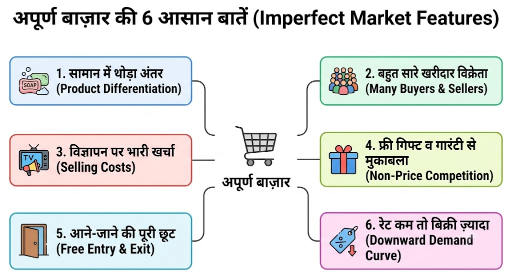
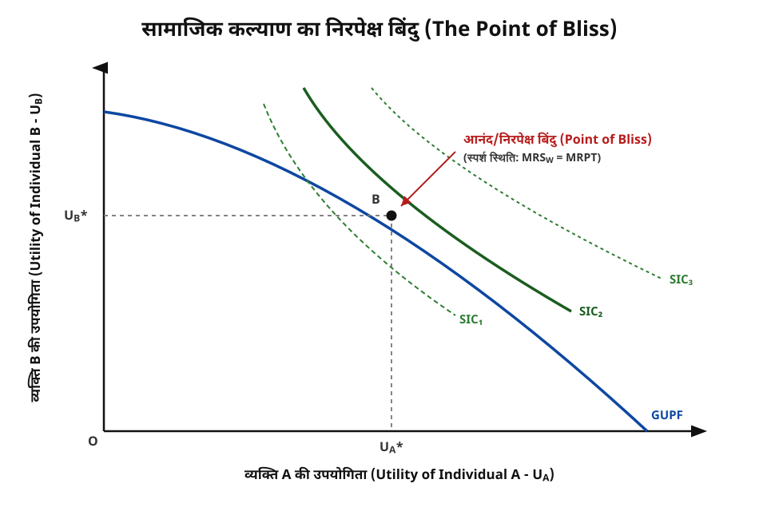

MJC 8: Intermediate Microeconomics 2
| MAT 201 |
📑 अध्याय 1.1: एकाधिकार प्रतियोगिता (Monopolistic Competition)
1.1.1 अपूर्ण बाजारों की सामान्य विशेषताएं (Common Features of Imperfect Markets)
💡 बिल्कुल आसान भाषा में समझें:
सोचिए, जब आप बाज़ार में नहाने का साबुन खरीदने जाते हैं, तो आपको ढेरों विकल्प मिलते हैं—Lux, Dettol, Dove, Pears, Fiama।
ये सब के सब साबुन ही हैं और काम भी एक ही करते हैं (शरीर साफ करना)। लेकिन फिर भी:
- Lux का विज्ञापन हीरोइनें करती हैं और उसकी खुशबू अलग है।
- Dettol दावा करता है कि वह 99.9% किटाणु मारता है।
- Dove कहता है कि उसमें मॉइस्चराइजर (नमी) है।
बस! इसी चीज़ को अर्थशास्त्र में अपूर्ण बाज़ार (Imperfect Market) कहते हैं।
यह कोई काल्पनिक बाज़ार नहीं है, बल्कि यह वही असली बाज़ार है जहाँ से हम और आप रोज़ सामान खरीदते हैं।
यहाँ न तो किसी एक कंपनी की दादागिरी चलती है (कि कोई और बेचने वाला ही न हो), और न ही सब लोग एक जैसा ही सामान बेचते हैं। हर दुकान या कंपनी का सामान एक-दूसरे से थोड़ा-बहुत अलग ज़रूर होता है।
इस विचार को सबसे पहले 1930 के दशक में प्रो. एडवर्ड चेम्बरलिन और लेडी जोआन रॉबिन्सन ने हम सबके सामने रखा था।
🔑 अपूर्ण बाज़ार की 6 सबसे बड़ी बातें (जो आसानी से याद हो जाएँ):
1. सामान में थोड़ा अंतर (Product Differentiation)
- बाज़ार में मिलने वाली चीज़ें एक-दूसरे से मिलती-जुलती तो होती हैं, लेकिन हंड्रेड परसेंट एक जैसी नहीं होतीं।
- कंपनियां अपनी चीज़ को थोड़ा अलग दिखाने के लिए क्या करती हैं?
- पैकिंग या रंग अलग करना: जैसे नीली पैकेट वाली नमकीन या लाल पैकेट वाली।
- ब्रांड का नाम: जैसे Nike का जूता या Bata का जूता।
- अलग दावा: एक पेस्ट कहेगा "दांत सफेद करो", दूसरा कहेगा "कैविटी से बचाओ"।
2. बेचने और खरीदने वालों की भारी भीड़ (Large Number of Buyers & Sellers)
- बाज़ार में सामान बेचने वाले भी बहुत हैं और खरीदने वाले भी।
- इसलिए कोई भी एक अकेला दुकानदार पूरे बाज़ार को अपनी मर्ज़ी से नहीं चला सकता।
3. विज्ञापन और प्रचार का खर्चा (Selling Costs)
- इस बाज़ार में सामान अपने-आप नहीं बिकता। ग्राहकों को पटाने के लिए कंपनियों को भारी विज्ञापन (Ads) करना पड़ता है।
- टीवी पर ऐड देना, पोस्टरों पर बड़े-बड़े स्टार्स की फोटो लगाना, फ्री गिफ्ट देना—इन सब पर बहुत पैसा खर्च होता है।
4. बिना दाम घटाए मुकाबला (Non-Price Competition)
- कंपनियां सिर्फ रेट (कीमत) कम करके एक-दूसरे को नहीं पछाड़तीं।
- वे कहती हैं: "हम रेट कम नहीं करेंगे, लेकिन हम आपको extra 20% सामान फ्री देंगे, या 1 साल की गारंटी देंगे!"
5. नई दुकान खोलना या पुरानी बंद करना बिल्कुल आसान (Free Entry & Exit)
- अगर किसी नए बिज़नेसमैन को लगता है कि इस बाज़ार में फायदा है, तो वह आसानी से अपनी नई कंपनी शुरू कर सकता है।
- अगर किसी को घाटा हो रहा है, तो वह बिना किसी सरकारी रोक-टोक के अपना बिज़नेस बंद करके जा सकता है।
6. थोड़ा-बहुत अपना रेट खुद तय करने की छूट (Downward Sloping Demand Curve)
- चूंकि हर कंपनी का सामान थोड़ा अलग है, इसलिए उनके पास अपना रेट तय करने की थोड़ी सी छूट होती है।
- जैसे Apple अपना iPhone थोड़ा महंगा भी बेचेगा, तो भी उसके लॉयल ग्राहक उसे खरीदेंगे ही। लेकिन अगर वह हद से ज्यादा महंगा कर देगा, तो लोग Samsung की तरफ चले जाएँगे।
- सीधा नियम: अगर सामान ज़्यादा बेचना है, तो रेट थोड़ा कम करना ही पड़ेगा।
{kind=link}

📌 Quick Recall
- अपूर्ण बाज़ार = जहाँ चीज़ें मिलती-जुलती हों, पर थोड़ा-बहुत अंतर हो (जैसे शैम्पू, टूथपेस्ट, मोबाइल)।
- सबके पास विकल्प हैं: अगर Colgate महंगा हुआ, तो ग्राहक Pepsodent ले लेगा।
- विज्ञापन ही राजा है: जो दिखेगा, वही बिकेगा!
1.1.2 एकाधिकार प्रतियोगिता में मूल्य और उत्पादन निर्धारण (Price and Output Determination)
💡 बिल्कुल आसान भाषा में समझें:
सोचिए आप एक मार्केट में पिज़्ज़ा की दुकान चला रहे हैं। आपके आसपास और भी 10-12 पिज़्ज़ा की दुकानें हैं (जैसे Domino's, Pizza Hut, या कोई लोकल कैफे)।
अब सवाल यह उठता है कि:
- आप अपने पिज़्ज़ा का रेट (Price) क्या रखेंगे?
- आप दिन में कितने पिज़्ज़ा बनाकर बेचेंगे (Output)?
इसी चीज़ को अर्थशास्त्र की भाषा में "मूल्य और उत्पादन निर्धारण" (Price and Output Determination) कहते हैं।
चूँकि आपका पिज़्ज़ा दूसरों से थोड़ा अलग है (हो सकता है आपका सॉस ज़्यादा टेस्टी हो या क्रस्ट अलग हो), इसलिए आपके पास रेट तय करने की थोड़ी छूट है। लेकिन अगर आप रेट बहुत ज़्यादा बढ़ा देंगे, तो ग्राहक बगल वाली दुकान पर चले जाएँगे!
इसलिए, एक दुकानदार (फर्म) हमेशा दो समय-सीमा में सोचता है:
- अल्पकाल (Short-run): कम समय, जहाँ नई दुकानें एकदम से नहीं खुल सकतीं।
- दीर्घकाल (Long-run): लंबा समय, जहाँ नई दुकानें बाज़ार में आ सकती हैं और पुरानी बंद भी हो सकती हैं।
🛠️ संतुलन का मूल नियम (The Golden Rule of Equilibrium)
चाहे अल्पकाल हो या दीर्घकाल, कोई भी दुकानदार अपना रेट और सामान तभी सही मानता है जब उसका लाभ सबसे ज़्यादा (Maximum Profit) हो। इसके लिए अर्थशास्त्र में 2 आसान शर्तें पूरी होनी चाहिए:
- होना चाहिए:
- (सीमान्त आय / Marginal Revenue) = एक और पिज़्ज़ा बेचने से मिलने वाला extra पैसा।
- (सीमान्त लागत / Marginal Cost) = एक और पिज़्ज़ा बनाने में लगने वाला extra खर्चा।
- नियम: जब एक और पिज़्ज़ा बनाने का खर्चा और उससे मिलने वाली कमाई बराबर हो जाए, वहीं दुकानदार रुक जाता है।
- वक्र वक्र को नीचे से काटे: यानी इसके बाद अगर और पिज़्ज़ा बनाया, तो खर्चा ज़्यादा होगा और कमाई कम!
⏳ 1. अल्पकालीन संतुलन (Short-Run Equilibrium)
अल्पकाल में किसी दुकानदार के पास इतना समय नहीं होता कि वह अपनी दुकान का साइज़ बड़ा करे या कोई नई कंपनी बाज़ार में तुरंत आ जाए। इसलिए, अल्पकाल में एक फर्म को 3 में से कोई भी एक स्थिति मिल सकती है:
अल्पकालीन स्थितियां (Short-Run Outcomes)
├── A. असामान्य लाभ (Supernormal Profit) → जब कमाई > खर्चा (⁍)
├── B. सामान्य लाभ (Normal Profit) → जब कमाई = खर्चा (⁍)
└── C. न्यूनतम हानि (Minimum Loss) → जब खर्चा > कमाई (⁍)(A) असामान्य लाभ (Supernormal Profit)
- आसान मतलब: जब आपकी पिज़्ज़ा की माँग बहुत ज़्यादा हो और आप खर्चे से कहीं ज़्यादा कमाई कर रहे हों।
- शर्त: जब औसत आय () आपकी औसत लागत () से ज़्यादा हो। ()
- उदाहरण: एक पिज़्ज़ा बनाने का कुल औसत खर्चा ₹100 आता है, लेकिन आप उसे ₹150 में बेच रहे हैं। तो प्रति पिज़्ज़ा ₹50 का शुद्ध असामान्य लाभ है!

(B) सामान्य लाभ (Normal Profit)
- आसान मतलब: "न फ़ायदा, न नुकसान!" दुकानदार केवल उतना ही कमा पाता है जिससे उसका घर का खर्चा और बिज़नेस चलता रहे।
- शर्त: जब औसत आय () और औसत लागत () बिल्कुल बराबर हों। ()
- उदाहरण: पिज़्ज़ा बनाने का औसत खर्चा भी ₹100 है और वह बिक भी ₹100 में ही रहा है।
(C) न्यूनतम हानि (Loss Position)
- आसान मतलब: जब बाज़ार में मंदी हो या आपकी माँग कम हो जाए, तो आपको नुकसान होने लगता है।
- शर्त: जब आपकी औसत लागत () आपकी औसत आय () से ज़्यादा हो। ()
- दुकान कब तक चलेगी? जब तक दुकानदार को अपना कच्चा माल (Variable Cost) का पैसा मिलता रहेगा, तब तक वह दुकान खुली रखेगा। अगर वह भी निकलना बंद हो गया, तो दुकान तुरंत बंद (Shutdown) करनी पड़ेगी!
🔄 2. दीर्घकालीन संतुलन (Long-Run Equilibrium)
दीर्घकाल (लंबे समय) में दो जादू होते हैं:
- कोई भी नई दुकान आ सकती है: अगर अल्पकाल में पुरानी दुकानें बहुत सारा "असामान्य लाभ" कमा रही होंगी, तो उसे देखकर बाज़ार में ढेरों नई पिज़्ज़ा दुकानें खुल जाएँगी।
- पुरानी दुकानें बंद हो सकती हैं: अगर नुकसान हो रहा होगा, तो लोग दुकान बंद करके भाग जाएँगे।
🎯 दीर्घकाल का अंतिम नतीजा: "केवल सामान्य लाभ" (Group Equilibrium)
प्रो. चेम्बरलिन ने इसे "समूह संतुलन" (Group Equilibrium) कहा है।
- प्रोसेस समझिए:
- जब नई दुकानें बाज़ार में आती हैं, तो ग्राहकों का बँटवारा हो जाता है।
- आपकी दुकान पर आने वाले ग्राहक कम हो जाते हैं, जिससे आपका माँग वक्र () नीचे गिर जाता है।
- यह तब तक नीचे गिरता है जब तक कि यह आपकी लागत रेखा () को केवल छू (Tangential) न ले।
- परिणाम: दीर्घकाल में एकाधिकार प्रतियोगिता में सभी फर्में केवल "सामान्य लाभ" (Normal Profit) ही कमा पाती हैं। न कोई एक्स्ट्रा फायदा, न कोई घाटा!
- शर्त: और (जहाँ = Long Run / दीर्घकाल)।

📌 याद रखने के लिए आसान समरी (Quick Revision)
| समय (Time Period) | क्या स्थिति बन सकती है? | परिणाम (Result) |
|---|---|---|
| अल्पकाल (Short-Run) | 3 स्थितियां: लाभ, सामान्य लाभ, या हानि | फर्में असामान्य लाभ भी कमा सकती हैं या घाटा भी सह सकती हैं। |
| दीर्घकाल (Long-Run) | केवल 1 स्थिति: सामान्य लाभ () | नई फर्मों के आने से एक्स्ट्रा लाभ खत्म हो जाता है। |
1.1.3 अतिरिक्त क्षमता की अवधारणा (Concept of Excess Capacity)
💡 बिल्कुल आसान भाषा में समझें:
मान लीजिए आपने 100 पिज़्ज़ा रोज़ बनाने की क्षमता (Capacity) वाला एक बड़ा ओवन खरीदा है। लेकिन आपकी दुकान पर रोज़ केवल 60 पिज़्ज़ा ही बिकते हैं।
इसका मतलब:
- आप 40 पिज़्ज़ा और बना सकते थे, लेकिन माँग न होने के कारण आपका ओवन खाली पड़ा है।
- इसी बची हुई 40 पिज़्ज़ा की खाली क्षमता को अर्थशास्त्र में अतिरिक्त क्षमता (Excess Capacity) कहते हैं!
परिभाषा:
जब कोई दुकान या फर्म अपनी न्यूनतम संभव लागत (Minimum Cost) पर उत्पादन नहीं करती और अपनी पूरी क्षमता से कम सामान बनाती है, तो जो उत्पादन क्षमता बेकार (Unused) रह जाती है, उसे अतिरिक्त क्षमता कहते हैं।
🔍 यह अतिरिक्त क्षमता क्यों पैदा होती है? (कारण)
एकाधिकार प्रतियोगिता (Monopolistic Competition) वाले बाज़ार में यह समस्या मुख्य रूप से 2 वजहों से पैदा होती है:
1. सामान में अंतर और विज्ञापन (Product Differentiation)
- हर कंपनी अपना सामान दूसरों से अलग दिखाने के चक्कर में लगी रहती है।
- ग्राहकों के पास ढेरों विकल्प (Colgate, Sensodyne, Close-Up आदि) होने के कारण किसी भी एक कंपनी के पास बहुत ज्यादा ग्राहक नहीं आते।
- माँग कम रहने से उनकी मशीनें और दुकानें पूरी क्षमता से काम नहीं कर पातीं।
2. माँग वक्र का ढालू होना (Downward Sloping Demand Curve)
- इस बाज़ार में फर्म का माँग वक्र () नीचे की ओर झुका होता है।
- गणितीय नियम के अनुसार: कोई भी नीचे गिरती हुई रेखा (), U-आकार के लागत वक्र () को उसके सबसे निचले (न्यूनतम) बिंदु पर कभी छू (Tangent) ही नहीं सकती!
- वह उसे हमेशा न्यूनतम बिंदु से पहले ही छू लेती है। इसका मतलब है कि फर्म सबसे सस्ती लागत पर पहुँचने से पहले ही उत्पादन रोक देती है।
📊 ग्राफिक से समझें (Visual Graph)
अतिरिक्त क्षमता को समझने के लिए यह देखना ज़रूरी है कि आदर्श उत्पादन कितना होना चाहिए था और असल में कितना हो रहा है:

🧮 ग्राफ का सरल विश्लेषण (Step-by-Step Analysis):
- आदर्श स्थिति (Ideal / Optimum Output):
- अगर फर्म अपनी लागत सबसे कम रखना चाहती, तो उसे वक्र के सबसे निचले बिंदु यानी Point M पर उत्पादन करना चाहिए था।
- यहाँ उत्पादन होता।
- वास्तविक स्थिति (Actual Output):
- लेकिन दीर्घकाल में एकाधिकार प्रतियोगिता में माँग रेखा () लागत वक्र को Point A पर ही छू लेती है।
- इसलिए फर्म केवल ही उत्पादन करती है और कीमत तय करती है।
- अतिरिक्त क्षमता की माप (Formula):
⚖️ क्या अतिरिक्त क्षमता हमेशा बुरी होती है? (चेम्बरलिन का दृष्टिकोण)
प्रसिद्ध अर्थशास्त्री प्रो. चेम्बरलिन ने एक बहुत ही व्यावहारिक बात कही:
- ग्राहक का फायदा (Variety):
- हाँ, अतिरिक्त क्षमता के कारण सामान थोड़ा महंगा मिलता है और दुकानें पूरी तरह से इस्तेमाल नहीं होतीं।
- लेकिन इसके बदले ग्राहकों को विविधता (Variety) मिलती है!
- सोचिए, अगर बाज़ार में सिर्फ एक ही तरह का साबुन या एक ही तरह की कार मिले, तो दुनिया कितनी बोरिंग हो जाएगी?
- इसलिए, चेम्बरलिन के अनुसार अतिरिक्त क्षमता कोई पूरी तरह से नुकसान की चीज़ नहीं है, बल्कि यह "विविधता का मूल्य" (Cost of Variety) है जो समाज खुशी-खुशी चुकाता है।
📌 त्वरित सारांश (Quick Summary)
| बिंदु | अर्थ |
|---|---|
| वास्तविक उत्पादन () | जितना सामान फर्म अभी बना रही है (लागत अभी भी घट सकती थी)। |
| आदर्श उत्पादन () | जितना सामान सबसे कम लागत पर बनाया जा सकता था। |
| अतिरिक्त क्षमता () | बची हुई क्षमता जिसका इस्तेमाल माँग न होने के कारण नहीं हो पाया। |
1.1.4 गैर-मूल्य प्रतियोगिता: बिक्री लागत और विज्ञापन (Non-Price Competition: Selling Cost and Advertising)
💡 बिल्कुल आसान भाषा में समझें:
सोचिए, आप बाज़ार में टूथपेस्ट की दुकान पर जाते हैं।
- Colgate की कीमत ₹60 है।
- Close-Up की कीमत भी ₹60 ही है।
अगर दोनों कंपनियां अपनी कीमत (Price) बराबर ही रखती हैं, तो फिर वे ग्राहकों को आकर्षित करने के लिए क्या करेंगी?
- Colgate कहेगा: "हमारा पेस्ट मसूड़ों को मजबूत बनाता है और इसमें नमक है!"
- Close-Up कहेगा: "हमारे पेस्ट से सांसों में ताज़गी मिलती है और हम साथ में एक टंग क्लीनर फ्री दे रहे हैं!"
- इसके साथ ही टीवी, यूट्यूब, और होर्डिंग्स पर करोड़ों रुपये के विज्ञापन (Ads) चलाए जाएँगे।
इसी तरीके को अर्थशास्त्र में गैर-मूल्य प्रतियोगिता (Non-Price Competition) कहते हैं—यानी बिना रेट घटाए केवल क्वालिटी, सर्विस, फ्री गिफ्ट और विज्ञापनों (Selling Costs) के दम पर ग्राहकों को लुभाना।
🎯 1. गैर-मूल्य प्रतियोगिता (Non-Price Competition) क्या है?
साधारण शब्द: जब बाज़ार में दो या दो से ज्यादा फर्में एक-दूसरे का रेट (कीमत) कम किए बिना, अन्य तरीकों से एक-दूसरे को पछाड़ने की कोशिश करती हैं।
इसके मुख्य तरीके (Methods):
- उत्पाद में बदलाव (Product Alteration): रंग, स्वाद, डिजाइन, पैकिंग या खुशबू को बेहतर बनाना।
- फ्री सुविधाएं और ऑफर (Promotions): "1 पर 1 फ्री", "20% एक्स्ट्रा", या फ्री होम डिलीवरी देना।
- बिक्री के बाद की सेवा (After-Sales Service): फ्री सर्विसिंग, 2 साल की वारंटी, या 24x7 कस्टमर केयर सपोर्ट।
- विज्ञापन और ब्रांडिंग (Advertising): बड़े-बड़े एक्टर्स या क्रिकेटर्स से प्रचार करवाना।
💰 2. बिक्री लागत और उत्पादन लागत में अंतर (Production Cost vs. Selling Cost)
अर्थशास्त्र में दो तरह के खर्चे होते हैं। इन्हें समझना बेहद ज़रूरी है:
| आधार | उत्पादन लागत (Production Cost) | बिक्री लागत (Selling Cost) |
|---|---|---|
| सरल अर्थ | सामान को बनाने का खर्चा। | सामान को बेचने/प्रचार करने का खर्चा। |
| उदाहरण | कच्चा माल (Raw Material), मजदूरों की मजदूरी, बिजली बिल। | टीवी विज्ञापन, पोस्टर, सेल्समैन का कमीशन, फ्री सैंपल। |
| मुख्य मकसद | वस्तु को उपयोग के लायक बनाना। | ग्राहकों की पसंद बदलना और माँग को बढ़ाना। |
| माँग पर असर | यह माँग वक्र के साथ चलने में मदद करता है। | यह माँग वक्र को दाईं ओर खिसका (Shift) देता है। |
प्रो. एडवर्ड चेम्बरलिन का कथन:"उत्पादन लागत सामान को ग्राहक तक पहुँचाने के लिए होती है, जबकि बिक्री लागत ग्राहक को सामान तक खींचकर लाने के लिए होती है।"
📈 3. बिक्री लागत (विज्ञापन) का प्रभाव (Impact of Selling Cost)
जब कोई कंपनी भारी विज्ञापन (Selling Costs) करती है, तो उसके ऊपर दो असर पड़ते हैं:
- लागत बढ़ जाती है: विज्ञापन का खर्चा जुड़ने से वस्तु की कुल औसत लागत रेखा () ऊपर खिसक जाती है ( से पर)।
- माँग बढ़ जाती है: विज्ञापन देखकर नए ग्राहक जुड़ते हैं, जिससे माँग रेखा () दाईं ओर खिसक जाती है ( से पर)।
🎯 विज्ञापन कब फायदेमंद होता है?
अगर विज्ञापन करने पर माँग में होने वाली बढ़ोतरी (कमई), विज्ञापन पर हुए खर्चे (लागत) से ज़्यादा हो, तभी फर्म को नेट फायदा (असामान्य लाभ) होगा।

⚖️ 4. क्या विज्ञापन समाज के लिए अच्छा है या बुरा? (Pros & Cons)
👍 पक्ष में तर्क (Advantages):
- ग्राहकों को जानकारी: लोगों को नए प्रोडक्ट्स, फीचर्स और ऑफर्स के बारे में पता चलता है।
- बिक्री में वृद्धि: बड़े पैमाने पर सामान बिकने से कंपनियों की प्रति-इकाई उत्पादन लागत कम हो सकती है।
- रोजगार के अवसर: मीडिया, एडवरटाइजिंग एजेंसियों और सेल्स में लाखों नौकरियां मिलती हैं।
👎 विपक्ष में तर्क (Disadvantages):
- सामान महंगा होना: विज्ञापन का सारा खर्चा अंततः ग्राहक की जेब से ही वसूला जाता है।
- गुमराह करने वाले दावे: कई बार फेयरनेस क्रीम या हेल्थ ड्रिंक्स झूठे दावे करके ग्राहकों को ठगते हैं।
- साधनों की बर्बादी: एक ही तरह के सामान के लिए कंपनियों का आपस में विज्ञापनों पर अरबों रुपये फुंकना सामाजिक बर्बादी माना जाता है।
📌 Quick Recall
- गैर-मूल्य प्रतियोगिता = रेट कम किए बिना विज्ञापन, क्वालिटी और ऑफर्स से मुकाबला करना।
- उत्पादन लागत = सामान बनाने का खर्चा (कच्चा माल + मजदूरी)।
- बिक्री लागत = सामान बेचने का खर्चा (Ads + Free Gift + Commission)।
- मूल उद्देश्य = माँग रेखा () को दाईं ओर खिसकाकर अपनी बिक्री और मुनाफा बढ़ाना।
📑 अध्याय 1.2: वैकल्पिक मूल्य निर्धारण दृष्टिकोण (Alternative Pricing Approaches)
1.2.1 लागत-प्लस (मार्क-अप) मूल्य निर्धारण सिद्धांत (Cost-Plus / Mark-Up Pricing Theory)
💡 बिल्कुल आसान भाषा में समझें:
अभी तक हमने अर्थशास्त्र के पुराने (पारंपरिक) सिद्धांतों में पढ़ा कि फर्में अपनी कीमत तय करने के लिए हमेशा का जटिल फॉर्मूला इस्तेमाल करती हैं।
लेकिन क्या असली दुनिया का कोई छोटा या बड़ा दुकानदार रोज़ और का ग्राफ बनाकर रेट तय करता है?
जवाब है: बिल्कुल नहीं!
व्यावहारिक (Real World) दुनिया में बिज़नेसमैन एक बहुत ही सीधा और आसान तरीका अपनाते हैं जिसे लागत-प्लस (Cost-Plus) या मार्क-अप (Mark-Up) मूल्य निर्धारण कहते हैं।
🛒 एक छोटा सा उदाहरण:
मान लीजिए आपकी कपड़ों की दुकान है:
- एक शर्ट को खरीदने या बनवाने में आपका कुल खर्चा (Cost) आया = ₹500
- आप चाहते हैं कि हर शर्ट पर आपको 20% का मुनाफा (Profit Margin) मिले।
- ₹500 का 20% = ₹100 (यह आपका Mark-Up या लाभ हुआ)।
- शर्ट का बिक्री मूल्य (Price) = ₹500 + ₹100 = ₹600।
बस! इसी आसान गणित को अर्थशास्त्र में लागत-प्लस मूल्य निर्धारण कहते हैं।
📐 1. मूल फॉर्मूला और प्रक्रिया (Formula & Process)
इस सिद्धांत के अनुसार, कीमत () तय करने के 3 आसान कदम होते हैं:
- औसत परिवर्तनशील लागत () निकालना: सबसे पहले सामान बनाने का कच्चा माल और मजदूरी का खर्चा निकाला जाता है।
- औसत स्थिर लागत () जोड़ना: इसमें दुकान का किराया, बिजली बिल आदि जोड़ा जाता है।
- ( यानी कुल औसत लागत / Total Average Cost)
- मार्क-अप () जोड़ना: अंत में कुल लागत पर एक निश्चित प्रतिशत (%) का लाभ जोड़ा जाता है।
🧮 फॉर्मूला (Formula):
या इसे ऐसे भी लिखा जाता है:
(जहाँ = कीमत, = औसत परिवर्तनशील लागत, और = मार्क-अप प्रतिशत है)
🔍 2. व्यापारी मार्क-अप () कैसे तय करते हैं?
मार्क-अप या प्रॉफिट मार्जिन कोई मनगढ़ंत नंबर नहीं होता। इसे तय करते समय फर्में इन बातों का ध्यान रखती हैं:
- बाज़ार में प्रतियोगिता (Competition): अगर बाज़ार में वैसी दुकानें बहुत हैं, तो मार्क-अप कम (उदा. 10%) रखा जाएगा। अगर सामान अनोखा है, तो मार्क-अप ज़्यादा (उदा. 30%-40%) होगा।
- माँग की लोच (Elasticity of Demand): जिस सामान के बिना ग्राहक रह ही नहीं सकते, उस पर मार्क-अप ज़्यादा होता है।
- परंपरा और अनुभव (Tradition & Experience): व्यापारिक क्षेत्रों में पहले से तय नियम होते हैं (जैसे किराना बाज़ार में 5-10%, कपड़ों में 20-30%, रेस्तरां में 40-50%)।

⚖️ 3. इस सिद्धांत के गुण और दोष (Pros & Cons)
👍 गुण / फायदे (Advantages):
- बहुत सरल और व्यावहारिक: इसके लिए अर्थशास्त्र के कठिन सूत्रों या रेखाचित्रों की ज़रूरत नहीं होती।
- स्थिर कीमतें (Price Stability): बार-बार रेट बदलने के बजाय कीमतें लंबे समय तक स्थिर रहती हैं, जिससे ग्राहकों का भरोसा बना रहता है।
- लागत की भरपाई की गारंटी: इसमें यह पक्का होता है कि बिज़नेस का सारा खर्चा निकल आएगा और नुकसान नहीं होगा।
👎 दोष / सीमाएं (Limitations):
- माँग (Demand) की अनदेखी: यह सिद्धांत केवल लागत पर ध्यान देता है, बाज़ार में ग्राहकों की माँग कितनी है, इसे पूरी तरह भूल जाता है।
- स्थिर लागत () का सही अनुमान कठिन: उत्पादन कम या ज़्यादा होने पर प्रति-इकाई स्थिर लागत बदलती रहती है, जिसे सही-सही नापना आसान नहीं होता।
📌 Quick Revision
- लागत-प्लस सिद्धांत = लागत (Cost) + लाभ का % (Mark-Up) = कीमत (Price)।
- प्रयोग: यह व्यावहारिक दुनिया और आधुनिक व्यावसायिक फर्मों में सबसे लोकप्रिय तरीका है।
- पारंपरिक सिद्धांत () बनाम मार्क-अप: पारंपरिक सिद्धांत काल्पनिक/सैद्धांतिक है, जबकि मार्क-अप सिद्धांत वास्तविक और व्यावहारिक है।
📑 अध्याय 1.3: अल्पाधिकार बाजार (Oligopoly Markets)
1.3.1 अल्पाधिकार के तहत कीमत और उत्पादन निर्धारण के विभिन्न दृष्टिकोण (Various Approaches to Price and Output Determination under Oligopoly)
💡 बिल्कुल आसान भाषा में समझें:
अभी तक हमने उन बाज़ारों को देखा जहाँ दुकानें बहुत सारी थीं (जैसे साबुन या कपड़े की दुकानें)। अब हम एक बिल्कुल अलग और रोमांचक बाज़ार में कदम रख रहे हैं—अल्पाधिकार (Oligopoly)!
'अल्पाधिकार' का अर्थ है—कुछ ही बेचने वाले (Few Sellers)।
📱 एक व्यावहारिक उदाहरण:
भारत में मोबाइल नेटवर्क (SIM card) के बाज़ार को देखिए:
- आपके पास मुख्य रूप से कौन-से विकल्प हैं? Jio, Airtel, और Vi (Vodafone-Idea)।
- कार बाज़ार को देखें: Maruti Suzuki, Hyundai, Tata Motors, Mahindra।
चूँकि इस बाज़ार में गिने-चुने (3-4 या 8-10) बड़े खिलाड़ी ही होते हैं, इसलिए यहाँ कीमत (Rate) और उत्पादन (Output) तय करना बहुत पेचीदा होता है।
यहाँ कोई भी कंपनी अकेले कोई फैसला नहीं ले सकती। Jio जब भी अपना रिचार्ज प्लान सस्ता या महंगा करता है, तो उसे पहले यह सोचना पड़ता है: "अगर मैंने रेट बदला, तो Airtel क्या करेगा?"
इसी को अर्थशास्त्र में "परस्पर निर्भरता" (Interdependence) कहते हैं।
🎯 1. अल्पाधिकार की सबसे बड़ी चुनौती: "अनिश्चित मांग वक्र" (Indeterminate Demand Curve)
पूर्ण प्रतियोगिता या एकाधिकार में हम आसानी से माँग वक्र () बना लेते थे। लेकिन अल्पाधिकार में फर्म का कोई निश्चित माँग वक्र नहीं होता!
क्यों?
- अगर Jio अपना प्लान 10% सस्ता कर दे, और Airtel भी तुरंत 10% सस्ता कर दे, तो Jio को नए ग्राहक नहीं मिलेंगे।
- लेकिन अगर Airtel ने रेट नहीं घटाया, तो Jio के पास ग्राहकों की बाढ़ आ जाएगी!
- नतीजा: Jio को खुद नहीं पता होता कि रेट घटाने या बढ़ाने पर उसकी बिक्री पर क्या असर पड़ेगा, क्योंकि प्रतिस्पर्धी कंपनी का कदम अनिश्चित होता है।
🧭 2. कीमत और उत्पादन निर्धारण के विभिन्न दृष्टिकोण (Approaches)
चूँकि अल्पाधिकार में अनिश्चितता बहुत ज़्यादा होती है, इसलिए अर्थशास्त्रियों ने इसके तहत कीमत और उत्पादन निर्धारण को समझने के लिए 3 मुख्य दृष्टिकोण (Approaches) दिए हैं:
अल्पाधिकार में कीमत निर्धारण के दृष्टिकोण
├── 1. स्वतंत्र/गैर-मिलीभगत दृष्टिकोण (Non-Collusive Approach)
│ └── फर्में एक-दूसरे से स्वतंत्र रहकर मुकाबला करती हैं। (उदा. कॉर्नोट, बर्ट्रेंड, सुइज़ी का मॉडल)
├── 2. मिलीभगत वाला दृष्टिकोण (Collusive Approach)
│ └── फर्में आपस में हाथ मिला लेती हैं और गुट बनाती हैं। (उदा. कार्टेल, मूल्य नेतृत्व)
└── 3. गेम थ्योरी दृष्टिकोण (Game Theory Approach)
└── फर्में एक-दूसरे की चालों का अनुमान लगाकर अपनी रणनीति बनाती हैं। (उदा. कैदियों की दुविधा - Prisoner's Dilemma)1️⃣ स्वतंत्र या गैर-मिलीभगत दृष्टिकोण (Non-Collusive / Independent Approach)
- अर्थ: जब बाज़ार की बड़ी फर्में आपस में कोई समझौता नहीं करतीं और एक-दूसरे को पछाड़कर अपना फायदा अधिकतम करने की कोशिश करती हैं।
- प्रमुख मॉडल:
- कॉर्नोट का द्विअधिकार मॉडल (Cournot Model): इसमें फर्में मान लेती हैं कि दूसरी फर्म अपना उत्पादन (Output) स्थिर रखेगी।
- किंक्ड मांग वक्र मॉडल (Paul Sweezy's Kinked Demand Curve): यह मॉडल बताता है कि अल्पाधिकार बाज़ार में कीमतें स्थिर (Price Rigidity) क्यों रहती हैं। (इसे हम टॉपिक 1.3.4 में विस्तार से पढ़ेंगे)।
2️⃣ मिलीभगत वाला दृष्टिकोण (Collusive Approach)
- अर्थ: जब बड़ी फर्में समझ जाती हैं कि आपस में लड़ने से दोनों का नुकसान हो रहा है (Price War), तो वे आपस में हाथ मिला लेती हैं।
- प्रमुख रूप:
- कार्टेल (Cartel): फर्में मिलकर एक औपचारिक संघ बना लेती हैं और पूरे बाज़ार का रेट और उत्पादन तय कर देती हैं। (जैसे तेल उत्पादक देशों का संगठन OPEC)।
- मूल्य नेतृत्व (Price Leadership): बाज़ार की सबसे बड़ी या सबसे पुरानी फर्म (Dominant Firm) रेट तय करती है, और बाकी छोटी फर्में चुपचाप उसी रेट को मान लेती हैं।
3️⃣ गेम थ्योरी दृष्टिकोण (Game Theory Approach)
- अर्थ: आधुनिक अर्थशास्त्र में अल्पाधिकार को ताश या शतरंज के खेल की तरह देखा जाता है।
- इसमें हर फर्म अपने प्रतिस्पर्धी की चाल (Move) का अंदाजा लगाकर अपनी सर्वश्रेष्ठ रणनीति (Strategy) चुनती है।
- इसे 'पे-ऑफ मैट्रिक्स' (Pay-off Matrix) के जरिए समझा जाता है।

📌 Quick Recall
| दृष्टिकोण (Approach) | मुख्य विशेषता | उदाहरण |
|---|---|---|
| गैर-मिलीभगत (Non-Collusive) | फर्में स्वतंत्र रहकर कट-थ्रोट कम्पटीशन (कटौती की होड़) करती हैं। | Jio vs Airtel (शुरुआती दौर में) |
| मिलीभगत (Collusive) | फर्में गुप्त या प्रत्यक्ष रूप से गुट/संघ बना लेती हैं। | OPEC (कच्चा तेल बेचने वाले देश) |
| गेम थ्योरी (Game Theory) | शतरंज की तरह विरोधी की चाल देखकर रणनीति बनाना। | बिज़नेस वॉर रणनीतियां |
1.3.2 कॉर्नोट का द्विअधिकार मॉडल (Cournot Duopoly Model)
💡 बिल्कुल आसान भाषा में समझें:
सोचिए एक छोटा सा गाँव है जहाँ मीठे पानी के सिर्फ 2 कुएँ (Wells) हैं।
- एक कुएँ का मालिक है रामलाल (Firm A)।
- दूसरे कुएँ का मालिक है श्यामलाल (Firm B)।
अर्थशास्त्र में जब बाज़ार में केवल 2 ही बेचने वाले (Sellers) हों, तो उसे द्विअधिकार (Duopoly) कहा जाता है।
सन् 1838 में फ्रांसीसी अर्थशास्त्री ऑगस्टिन कॉर्नोट (Augustin Cournot) ने सबसे पहला गणितीय मॉडल बनाया कि यह देखने के लिए कि ऐसे बाज़ार में रेट और उत्पादन कैसे तय होता है।
🤝 कॉर्नोट की सबसे बड़ी धारणा (Crucial Assumption):
कॉर्नोट के मॉडल में दोनों मालिक थोड़े "भोल-भाले" हैं।
- जब रामलाल पानी बेचने की मात्रा (Output) तय करता है, तो वह सोचता है: "श्यामलाल जितना पानी अभी बेच रहा है, वह आगे भी उतना ही बेचेगा, उसमें कोई बदलाव नहीं करेगा।"
- वैसे ही श्यामलाल सोचता है: "रामलाल अपना उत्पादन नहीं बदलेगा।"
इसे अर्थशास्त्र में "शून्य प्रतिक्रिया की धारणा" (Zero Reaction Assumption) कहते हैं।
⚙️ 1. मॉडल की मुख्य मान्यताएं (Basic Assumptions)
इस मॉडल को आसानी से समझने के लिए कॉर्नोट ने कुछ आसान नियम माने:
- 2 फर्में: बाज़ार में केवल 2 फर्में हैं (Firm A और Firm B)।
- एक जैसा सामान (Homogeneous Product): दोनों के पास एक ही जैसा पानी है (कोई फर्क नहीं)।
- उत्पादन लागत शून्य (): मान लिया गया कि कुएँ से पानी निकालने में कोई खर्चा नहीं आता।
- माँग रेखा सीधी (Linear Demand Curve): बाज़ार में ग्राहकों की माँग एक सीधी रेखा जैसी है।
- क्रेताओं की बड़ी संख्या: खरीदने वाले बहुत सारे गाँव वाले हैं।
🔄 2. यह मॉडल काम कैसे करता है? (Step-by-Step Story)
आइए रामलाल और श्यामलाल की कहानी से पूरा प्रोसेस समझते हैं:
📍 स्टेप 1: रामलाल अकेला बाज़ार में आता है (Firm A Start)
- शुरुआत में श्यामलाल का कुआँ बंद है।
- रामलाल अकेला है, इसलिए वह एकाधिकारी (Monopolistic) की तरह व्यवहार करता है।
- वह पूरे बाज़ार की माँग का (आधा) हिस्सा पानी बेचता है और अधिकतम मुनाफा कमाता है।
📍 स्टेप 2: श्यामलाल की बाज़ार में एंट्री (Firm B Entry)
- श्यामलाल देखता है कि रामलाल बहुत कमा रहा है, तो वह भी अपना कुआँ खोल लेता है।
- श्यामलाल सोचता है: "रामलाल तो आधा () बाज़ार ले चुका है, बचा हुआ बाज़ार है। मैं इस बचे हुए आधे का आधा हिस्सा बेचूँगा।"
- तो श्यामलाल का उत्पादन = (बाज़ार का एक-चौथाई)।
📍 स्टेप 3: रामलाल की प्रतिक्रिया (Firm A Reaction)
- अब रामलाल देखता है कि श्यामलाल हिस्सा बेच रहा है।
- रामलाल सोचता है: "बचा हुआ बाज़ार है। मैं इसका आधा बेचूँगा।"
- रामलाल का नया उत्पादन = ।
🎯 अंतिम संतुलन (Equilibrium Output)
यह खींचतान और एक-दूसरे के बचे हुए हिस्से पर कब्ज़ा करने का खेल तब तक चलता रहता है जब तक कि दोनों का उत्पादन स्थिर न हो जाए।
अंत में:
- रामलाल (Firm A) का उत्पादन: पूरे बाज़ार का (एक-तिहाई)
- श्यामलाल (Firm B) का उत्पादन: पूरे बाज़ार का (एक-तिहाई)
- कुल बाज़ार उत्पादन (Total Supply):
- खाली/बचा हुआ बाज़ार (Unsupplied):
💡 शॉर्टकट फॉर्मूला: अगर बाज़ार में फर्में हों, तो कुल उत्पादन होता है। (चूँकि यहाँ 2 फर्में हैं, इसलिए )।
📈 3. प्रतिक्रिया वक्र (Reaction Curves)
आधुनिक अर्थशास्त्र में कॉर्नोट के संतुलन को प्रतिक्रिया वक्रों (Reaction Curves) के ज़रिए दिखाया जाता है।
- Firm A का Reaction Curve (): यह दिखाता है कि Firm B के हर संभावित उत्पादन पर Firm A कितना उत्पादन करेगी।
- Firm B का Reaction Curve (): यह दिखाता है कि Firm A के हर संभावित उत्पादन पर Firm B कितना उत्पादन करेगी।
- संतुलन बिंदु (Cournot Equilibrium Point E): जहाँ ये दोनों रेखाएं एक-दूसरे को काटती हैं, वहीं कॉर्नोट का अंतिम संतुलन बनता है।

⚖️ 4. कॉर्नोट मॉडल की आलोचनाएँ (Limitations / Criticisms)
हालांकि यह मॉडल द्विअधिकार की नींव है, लेकिन इसमें कुछ कमियाँ थीं:
- अवास्तविक मान ले लेना (Naïve Assumption): यह मानना कि प्रतिद्वंद्वी अपना उत्पादन कभी नहीं बदलेगा, बेवकूफी भरा है। असली दुनिया में फर्में एक-दूसरे की चाल देखकर रणनीति बदलती हैं।
- कीमत की अनदेखी: कॉर्नोट ने केवल उत्पाद की मात्रा (Output) को मुकाबला करने का ज़रिया माना, जबकि असलियत में फर्में कीमत (Price) घटाकर-बढ़ाकर भी मुकाबला करती हैं (जैसा बाद में 'बर्ट्रेंड मॉडल' ने बताया)।
- लागत शून्य मान लेना: असल दुनिया में उत्पादन में खर्चा () ज़रूर आता है।
📌 Quick Revision
- माध्यम: 2 फर्में (Duopoly)।
- मुख्य धारणा: दूसरा खिलाड़ी अपना उत्पादन स्थिर रखेगा (Zero Reaction)।
- प्रति फर्म उत्पादन: (एक-तिहाई)।
- कुल बाज़ार उत्पादन: (दो-तिहाई)।
- संतुलन: प्रतिक्रिया वक्रों (Reaction Curves) के कटान बिंदु पर।
1.3.3 मिलीभगत वाला अल्पाधिकार: कार्टेल और मूल्य नेतृत्व (Collusive Oligopoly: Cartel and Price Leadership)
मूल अवधारणा
जब अल्पाधिकार बाजार की कुछ बड़ी फर्में आपस में प्रतियोगिता करने के बजाय हाथ मिला लेती हैं, तो इसे मिलीभगत वाला अल्पाधिकार (Collusive Oligopoly) कहा जाता है।
फर्मों के ऐसा करने का मुख्य कारण मूल्य युद्ध (Price War) और बाजार की अनिश्चितता से बचना होता है। आपस में लड़ने पर सभी फर्मों का लाभ कम हो जाता है, जबकि मिलकर काम करने पर वे पूरे बाजार पर एकाधिकार (Monopoly) जैसा नियंत्रण पा सकती हैं और अपना कुल लाभ अधिकतम कर सकती हैं।
मिलीभगत मुख्य रूप से दो प्रकार की होती है:
- प्रत्यक्ष/औपचारिक मिलीभगत (Explicit Collusion): जहाँ फर्में खुलकर कागजी या मौखिक समझौता करती हैं। इसका सबसे बड़ा रूप कार्टेल (Cartel) है।
- अप्रत्यक्ष/मौन मिलीभगत (Tacit Collusion): जहाँ बिना किसी लिखित समझौते के फर्में एक-दूसरे के इशारे को समझकर काम करती हैं। इसका सबसे बड़ा रूप मूल्य नेतृत्व (Price Leadership) है।
🤝 1. कार्टेल (Cartel)
कार्टेल एक औपचारिक संगठन होता है जहाँ किसी उद्योग की स्वतंत्र फर्में मिलकर एक संघ बनाती हैं। यह संघ संपूर्ण उद्योग का उत्पादन, बाजार में प्रत्येक फर्म का कोटा और वस्तु की बिक्री कीमत तय करता है।
कार्टेल बनने के बाद सभी फर्में स्वतंत्र रूप से काम करने के बजाय एक संयुक्त एकाधिकार (Joint Monopoly) की तरह व्यवहार करती हैं।
- प्रसिद्ध उदाहरण: OPEC (Organization of the Petroleum Exporting Countries) - यह कच्चे तेल का उत्पादन और आपूर्ति नियंत्रित करने वाला वैश्विक कार्टेल है।
कार्टेल के तहत कीमत और उत्पादन निर्धारण (Joint Profit Maximization)
कार्टेल में एक केंद्रीय बोर्ड (Central Board) होता है जो सभी फर्मों की उत्पादन लागत का हिसाब रखता है और पूरे उद्योग के लिए एक ही संतुलन बिंदु तय करता है।
- कुल लागत निकालना: बोर्ड सभी फर्मों के सीमान्त लागत वक्रों () को क्षैतिज रूप से जोड़कर पूरे उद्योग का सीमान्त लागत वक्र () प्राप्त करता है।
- संतुलन शर्त: उद्योग का कुल लाभ तब अधिकतम होता है जब पूरे उद्योग की सीमान्त आय (), उद्योग की कुल सीमान्त लागत () के बराबर हो जाती है।
- कोटा आवंटन: उद्योग की कुल कीमत और कुल उत्पादन तय होने के बाद, केंद्रीय बोर्ड प्रत्येक फर्म को उसका उत्पादन कोटा बांट देता है। प्रत्येक फर्म को उतना ही उत्पादन दिया जाता है जहाँ उसकी व्यक्तिगत सीमान्त लागत पूरे उद्योग के के बराबर हो:

कार्टेल के टूटने या विफल होने के कारण
व्यावहारिक दुनिया में कार्टेल लंबे समय तक नहीं टिक पाते। इसके मुख्य कारण निम्नलिखित हैं:
- चोरी-छिपे कटौती की धोखाधड़ी (Cheating): किसी फर्म को कार्टेल द्वारा तय कीमत से थोड़ा कम रेट पर गुप्त रूप से सामान बेचकर अतिरिक्त लाभ कमाने का लालच रहता है।
- लागत में अंतर: यदि विभिन्न फर्मों की उत्पादन लागत में बहुत बड़ा अंतर हो, तो कीमत को लेकर आम सहमति नहीं बन पाती।
- कानूनी प्रतिबंध: अधिकांश देशों में प्रतिस्पर्धा आयोग (Antitrust Laws) ऐसे गुप्त गुटों या कार्टेल को अवैध घोषित करते हैं।
- समान वस्तु का अभाव: यदि फर्में बिल्कुल एक जैसी वस्तु नहीं बनातीं, तो कोटा बांटना कठिन हो जाता है।
👑 2. मूल्य नेतृत्व (Price Leadership)
जब बाजार में बिना किसी औपचारिक समझौते के, एक प्रमुख या बड़ी फर्म बाजार की कीमत तय करती है और बाकी छोटी फर्में चुपचाप उसी कीमत को स्वीकार कर लेती हैं, तो इसे मूल्य नेतृत्व कहते हैं।
कीमत तय करने वाली फर्म को मूल्य नेता (Price Leader) और अनुसरण करने वाली फर्मों को मूल्य अनुयायी (Price Followers) कहा जाता है।
मूल्य नेतृत्व के प्रकार
- प्रभुत्वशाली फर्म का मूल्य नेतृत्व (Dominant Firm Price Leadership): बाजार में एक बहुत बड़ी फर्म होती है जिसका बाजार के बड़े हिस्से पर कब्जा होता है (जैसे 60-70%)। यह फर्म अपने लाभ को अधिकतम करने के लिए कीमत तय करती है और बची हुई छोटी फर्में उस कीमत पर जितना सामान बेच सकती हैं, बेचती हैं।
- कम लागत वाली फर्म का मूल्य नेतृत्व (Low-Cost Firm Price Leadership): जिस फर्म की उत्पादन लागत सबसे कम होती है, वह कम कीमत तय कर सकती है। अन्य उच्च लागत वाली फर्मों को जीवित रहने के लिए उसी कम कीमत को अपनाना पड़ता है।
- सचेतक या बैरोमीट्रिक मूल्य नेतृत्व (Barometric Price Leadership): इसमें सबसे पुरानी, अनुभवी या कुशल फर्म बाजार की स्थितियों (मांग, लागत, कच्चे माल के दाम) का सही आकलन करके कीमत बदलती है। बाकी फर्में उसे एक विशेषज्ञ मानकर उसका अनुसरण करती हैं।
प्रभुत्वशाली फर्म द्वारा कीमत निर्धारण (Dominant Firm Model)
- उद्योग की मांग: मान लीजिए पूरे उद्योग की कुल मांग है।
- अनुयायी फर्मों की आपूर्ति: छोटी फर्में दी गई कीमत पर पूर्ण प्रतियोगिता की तरह व्यवहार करती हैं और उनका कुल आपूर्ति वक्र होता है।
- प्रभुत्वशाली फर्म की अवशिष्ट मांग (Residual Demand): प्रभुत्वशाली फर्म के लिए मांग वक्र () पूरे उद्योग की मांग में से छोटी फर्मों की आपूर्ति घटाकर निकाला जाता है:
- संतुलन: प्रभुत्वशाली फर्म अपने अवशिष्ट मांग वक्र से सीमान्त आय () निकालती है और जहाँ इसका इसके अपने सीमान्त लागत () के बराबर होता है, वहाँ कीमत तय करती है।

📌 Quick Comparison
| आधार | कार्टेल (Cartel) | मूल्य नेतृत्व (Price Leadership) |
|---|---|---|
| समझौते का स्वरूप | प्रत्यक्ष एवं औपचारिक (Formal) | अप्रत्यक्ष एवं मौन (Informal/Tacit) |
| निर्णयकर्ता | केंद्रीय बोर्ड (Central Board) | एक प्रमुख/बड़ी फर्म (Price Leader) |
| कानूनी स्थिति | अधिकांश देशों में गैर-कानूनी | बाजार व्यवहार होने के कारण इसे साबित करना कठिन |
| स्थायित्व | धोखाधड़ी की संभावना के कारण कम स्थायी | अपेक्षाकृत अधिक व्यावहारिक और स्थायी |
1.3.4 किंक्ड मांग वक्र की मूल अवधारणा (Basic Idea of Kinked Demand Curve)
मूल अवधारणा
अल्पाधिकार (Oligopoly) बाजार की एक प्रमुख विशेषता कीमत स्थिरता (Price Rigidity) है। इसका अर्थ यह है कि इस बाजार में फर्में काफी लंबे समय तक अपनी वस्तुओं की कीमत में बदलाव नहीं करतीं, भले ही उत्पादन लागत या मांग की स्थिति में थोड़ा बदलाव हो जाए।
अमेरिकी अर्थशास्त्री पॉल एम. सुइज़ी (Paul M. Sweezy) ने 1939 में गैर-मिलीभगत वाले अल्पाधिकार में इस कीमत स्थिरता की व्याख्या करने के लिए किंक्ड मांग वक्र मॉडल (Kinked Demand Curve Model) प्रस्तुत किया।
सुइज़ी के अनुसार, अल्पाधिकार बाजार में एक फर्म का मांग वक्र एक सीधी रेखा न होकर मोड़दार/किंक्ड (Kinked) होता है। यह मोड़ (Kink) वर्तमान में प्रचलित बाजार कीमत पर बनता है।
फर्मों की विषम प्रतिक्रिया (Asymmetric Behavior Assumptions)
किंक्ड मांग वक्र मॉडल दो मुख्य मान्यताओं पर आधारित है, जो प्रतिद्वंद्वी फर्मों के व्यवहार को दर्शाती हैं:
- यदि कोई फर्म कीमत बढ़ाती है:
- अन्य प्रतिद्वंद्वी फर्में उसकी देखा-देखी कीमत नहीं बढ़ाएंगी।
- इसके परिणामस्वरूप, कीमत बढ़ाने वाली फर्म के ग्राहक अन्य फर्मों के पास चले जाएंगे और उसकी बिक्री बहुत तेजी से गिर जाएगी।
- इसलिए, प्रचलित कीमत से ऊपर मांग वक्र अत्यधिक लोचदार (Highly Elastic) होता है।
- यदि कोई फर्म कीमत घटाती है:
- अन्य सभी प्रतिद्वंद्वी फर्में अपने ग्राहकों को बचाने के लिए तुरंत अपनी कीमतें भी घटा देंगी।
- इसके परिणामस्वरूप, कीमत घटाने वाली फर्म को नए ग्राहक नहीं मिलेंगे और उसकी बिक्री में कोई खास वृद्धि नहीं होगी।
- इसलिए, प्रचलित कीमत से नीचे मांग वक्र कम लोचदार/बेलोजदार (Inelastic) होता है।
किंक्ड मांग वक्र की संरचना
उपरोक्त दो भिन्न व्यवहारों के कारण मांग वक्र के दो अलग-अलग हिस्से होते हैं जो वर्तमान कीमत बिंदु पर मिलते हैं:
- मोड़ (Kink) बिंदु से ऊपर का हिस्सा (): अत्यधिक लोचदार (चपटा) मांग वक्र।
- मोड़ (Kink) बिंदु से नीचे का हिस्सा (): बेलोजदार (खड़ा) मांग वक्र।
पूर्ण मांग वक्र बन जाता है, जिसमें बिंदु पर एक तीखा मोड़ (Kink) होता है।
सीमान्त आय वक्र में अंतर/टूटना (Discontinuity in Marginal Revenue Curve)
मांग वक्र () में मोड़ बिंदु होने के कारण, इसका सीमान्त आय वक्र () निरंतर न रहकर बिंदु के ठीक नीचे टूट जाता है (Discontinuous Gap)।
- मांग वक्र के ऊपरी हिस्से () का सीमान्त आय वक्र का ऊपरी भाग () बनाता है।
- मांग वक्र के निचले हिस्से () का सीमान्त आय वक्र का निचला भाग () बनाता है।
- बिंदु से के बीच का क्षेत्र एक असंतत गैप (Discontinuous Gap / Vertical Segment) कहलाता है।

कीमत स्थिरता का आर्थिक स्पष्टीकरण (Explanation of Price Rigidity)
फर्म का संतुलन वहाँ होता है जहाँ सीमान्त लागत () सीमान्त आय () के बराबर हो जाती है ():
- जब तक फर्म का सीमान्त लागत वक्र () इस असंतत गैप () के भीतर से गुजरता है, तब तक फर्म की संतुलन कीमत और उत्पादन मात्रा में कोई परिवर्तन नहीं होता।
- यदि उत्पादन लागत बढ़ती है और वक्र ऊपर खिसककर हो जाता है (लेकिन गैप के अंदर ही रहता है), तो भी फर्म कीमत ही बनाए रखती है।
- निष्कर्ष: लागत में उतार-चढ़ाव के बावजूद कीमत स्थिर बनी रहती है।
⚖️ किंक्ड मांग वक्र मॉडल की सीमाएं (Limitations)
- कीमत निर्धारण की व्याख्या नहीं करता: यह मॉडल यह तो बताता है कि कीमत स्थिर क्यों रहती है, लेकिन यह नहीं बताता कि शुरुआती कीमत तय कैसे हुई थी।
- व्यावहारिक साक्ष्य का अभाव: मंदी या तेजी के समय कई अल्पाधिकार बाजारों में फर्में एक साथ कीमतें बदलती देखी गई हैं, जहाँ यह नियम हमेशा लागू नहीं होता।
📌 Quick Summary
| पहलू | विशेषता |
|---|---|
| प्रवर्तक | पॉल एम. सुइज़ी (1939) |
| कीमत से ऊपर मांग | अत्यधिक लोचदार (कीमत बढ़ाने पर ग्राहक घटेंगे) |
| कीमत से नीचे मांग | बेलोजदार (कीमत घटाने पर प्रतिद्वंद्वी भी घटाएंगे) |
| MR वक्र का स्वरूप | मोड़ बिंदु के नीचे वर्टिकल गैप (Discontinuous) |
| मुख्य परिणाम | लागत बदलने पर भी कीमत पर स्थिर रहती है |
📚 इकाई 2: वितरण सिद्धांत - साधनों का मूल्य निर्धारण (Unit 2: Distribution Theory - Pricing of Factors)
🏛️ इकाई परिचय (Unit Introduction)
इकाई 1 (अपूर्ण बाजार) में हमने यह सीखा कि विभिन्न बाजार स्थितियों में वस्तुओं और सेवाओं की कीमतें (Prices of Goods) कैसे तय होती हैं।
अब इकाई 2 में हम अर्थशास्त्र के दूसरे सबसे महत्वपूर्ण पहलू—वितरण सिद्धांत (Distribution Theory) को समझेंगे।
💡 साधन मूल्य निर्धारण क्या है?
उत्पादन करने के लिए किसी भी व्यवसाय या फर्म को उत्पादन के 4 मुख्य साधनों (Factors of Production) की आवश्यकता होती है:
- भूमि (Land) – जिसके बदले लगान (Rent) दिया जाता है।
- श्रम (Labor) – जिसके बदले मजदूरी (Wage) दी जाती है।
- पूंजी (Capital) – जिसके बदले ब्याज (Interest) दिया जाता है।
- साहस/उद्यमी (Entrepreneur) – जिसे जोखिम उठाने के बदले लाभ (Profit) मिलता है।
राष्ट्रीय आय (National Income) में इन साधनों का हिस्सा कैसे तय होता है और इनकी कीमतें कैसे निर्धारित की जाती हैं, इसी का अध्ययन हम इस इकाई में करेंगे।
📑 अध्याय 2.1: साधन उत्पादकता और मूल्य निर्धारण अवधारणाएं (Productivity and Pricing Concepts)
2.1.1 साधन उत्पादकता की अवधारणाएं (Concepts of Factor Productivity)
उत्पादन के किसी साधन (जैसे मजदूर या मशीन) को कितनी मजदूरी या कीमत दी जाएगी, यह इस बात पर निर्भर करता है कि वह साधन कितना उत्पादन करके दे रहा है—यानी उसकी उत्पादकता (Productivity) कितनी है।
साधन उत्पादकता को समझने के लिए अर्थशास्त्र में 3 मुख्य भौतिक अवधारणाएं (Physical Concepts) प्रयोग की जाती हैं:
1. कुल भौतिक उत्पाद (Total Physical Product - TPP)
- परिभाषा: अन्य साधनों की मात्रा को स्थिर रखकर, किसी परिवर्तनशील साधन (जैसे श्रम) की दी गई इकाइयों का उपयोग करने से प्राप्त होने वाले कुल उत्पादन की मात्रा को कुल भौतिक उत्पाद () कहते हैं।
- सरल उदाहरण: यदि 5 मजदूर मिलकर दिन भर में कुल 50 कुर्सियां बनाते हैं, तो यहाँ कुर्सियां है।
2. औसत भौतिक उत्पाद (Average Physical Product - APP)
- परिभाषा: परिवर्तनशील साधन की प्रति-इकाई उत्पादन क्षमता को औसत भौतिक उत्पाद () कहते हैं।
- सूत्र:
(जहाँ = कुल भौतिक उत्पाद, और = साधन की कुल इकाइयां/मजदूरों की संख्या)
- सरल उदाहरण: यदि 5 मजदूर () कुल 50 कुर्सियां () बनाते हैं, तो:
3. सीमान्त भौतिक उत्पाद (Marginal Physical Product - MPP)
- परिभाषा: परिवर्तनशील साधन की एक अतिरिक्त इकाई (One Additional Unit) का प्रयोग करने से कुल उत्पादन में जो वृद्धि होती है, उसे सीमान्त भौतिक उत्पाद () कहते हैं।
- सूत्र:
- सरल उदाहरण: 5 मजदूर मिलकर 50 कुर्सियां बनाते थे। अब 6ठा मजदूर रखने पर कुल उत्पादन बढ़कर 58 कुर्सियां हो जाता है।
- यहाँ 6ठे मजदूर का सीमान्त भौतिक उत्पाद ():
📊 भौतिक उत्पादकता वक्रों का पारस्परिक संबंध
परिवर्तनशील अनुपातों के नियम (Law of Variable Proportions) के अनुसार जैसे-जैसे किसी स्थिर साधन के साथ परिवर्तनशील साधन (श्रम) की इकाइयां बढ़ाई जाती हैं, , और में निम्नलिखित संबंध देखने को मिलता है:
- जब होता है, तो बढ़ता है।
- जब होता है, तो अपने अधिकतम (Maximum) बिंदु पर होता है।
- जब अधिकतम होता है, तब (शून्य) हो जाता है।
- यदि इसके बाद भी साधन बढ़ाए जाएं, तो ऋणात्मक (Negative) हो जाता है और घटने लगता है।
- जब होता है, तो घटने लगता है।

📌 Quick Summary
| अवधारणा | अर्थ | सूत्र |
|---|---|---|
| TPP (कुल भौतिक उत्पाद) | सभी साधनों द्वारा किया गया कुल भौतिक उत्पादन | |
| APP (औसत भौतिक उत्पाद) | प्रति-इकाई साधन का औसतन उत्पादन | |
| MPP (सीमान्त भौतिक उत्पाद) | एक अतिरिक्त साधन लगाने से कुल उत्पादन में हुई वृद्धि |
2.1.2 सीमान्त राजस्व उत्पाद (MRP) और सीमान्त उत्पाद का मूल्य (VMP) [Marginal Revenue Product (MRP) and Value of Marginal Product (VMP)]
💡 मूल अवधारणा की आसान व्याख्या
पिछली कक्षा (2.1.1) में हमने पढ़ा कि जब कोई फर्म किसी नए मजदूर (साधन) को काम पर रखती है, तो वह मजदूर कुछ भौतिक इकाइयां (जैसे 10 कुर्सियां) बनाता है। इसे हम सीमान्त भौतिक उत्पाद () कहते हैं।
लेकिन कोई भी व्यवसायी अपने मजदूर को वेतन (Wage) कुर्सियों के रूप में नहीं देता, बल्कि रुपयों (पैसों) के रूप में देता है।
इसलिए, एक मालिक के लिए यह जानना बहुत जरूरी हो जाता है कि उस नए मजदूर द्वारा बनाई गई 10 कुर्सियों को बाजार में बेचकर उसे कितने रुपये की कमाई (राजस्व) हुई।
इसी भौतिक उत्पादन को रुपये/मौद्रिक मूल्य में बदलने के लिए अर्थशास्त्र में दो प्रमुख अवधारणाओं का प्रयोग किया जाता है:
- सीमान्त उत्पाद का मूल्य (Value of Marginal Product - VMP)
- सीमान्त राजस्व उत्पाद (Marginal Revenue Product - MRP)
1. सीमान्त उत्पाद का मूल्य (Value of Marginal Product - VMP)
📌 अर्थ और परिभाषा:
जब किसी साधन (मजदूर) द्वारा बनाए गए सीमान्त भौतिक उत्पाद () को बाजार में बिकने वाली वस्तु की प्रचलित कीमत () से सीधे गुणा कर दिया जाता है, तो उसे सीमान्त उत्पाद का मूल्य () कहते हैं।
सरल शब्दों में, यह बताता है कि एक अतिरिक्त मजदूर ने बाजार कीमत के हिसाब से कुल कितने रुपये मूल्य का सामान बनाया।
🧮 सूत्र (Formula):
(जहाँ = सीमान्त भौतिक उत्पाद, और = वस्तु की प्रति इकाई कीमत)
📝 व्यावहारिक उदाहरण:
मान लीजिए एक दर्जी की दुकान में एक अतिरिक्त दर्जी को रखने से दिन भर में 5 नई कमीजें () ज्यादा बनती हैं। बाजार में एक कमीज की कीमत ₹500 () है।
अर्थात, उस अतिरिक्त दर्जी का ₹2,500 है।
2. सीमान्त राजस्व उत्पाद (Marginal Revenue Product - MRP)
📌 अर्थ और परिभाषा:
जब किसी साधन (मजदूर) की एक अतिरिक्त इकाई को काम पर लगाने से फर्म की कुल आय/राजस्व (Total Revenue) में जो शुद्ध वृद्धि होती है, उसे सीमान्त राजस्व उत्पाद () कहते हैं।
इसे निकालने के दो तरीके हैं:
- पहला तरीका: साधन के भौतिक उत्पाद () को वस्तु से मिलने वाली सीमान्त आय () से गुणा करके।
- दूसरा तरीका: अतिरिक्त साधन लगाने से पहले और बाद की कुल आय के अंतर द्वारा।
🧮 सूत्र (Formula):
(जहाँ = सीमान्त भौतिक उत्पाद, = सीमान्त आय, = कुल राजस्व में परिवर्तन, और = साधन की इकाइयों में परिवर्तन)
📝 व्यावहारिक उदाहरण:
यदि ऊपर दिए गए दर्जी द्वारा बनाई गई अतिरिक्त कमीजों को बेचने पर फर्म को प्रति कमीज ₹500 की सीमान्त आय () मिलती है, तो:
3. VMP और MRP के बीच संबंध (विभिन्न बाजार स्थितियों में)
और के बीच का संबंध इस बात पर निर्भर करता है कि वस्तु का बाजार पूर्ण प्रतियोगी (Perfect Competition) है या अपूर्ण प्रतियोगी (Imperfect Competition/Monopoly)।
(A) पूर्ण प्रतियोगिता बाजार में ()
- स्थिति: पूर्ण प्रतियोगिता बाजार में वस्तु की कीमत () स्थिर रहती है। इसलिए, एक अतिरिक्त इकाई बेचने पर मिलने वाली सीमान्त आय () हमेशा वस्तु की कीमत () के बराबर होती है।
- परिणाम: चूँकि होता है, इसलिए पूर्ण प्रतियोगिता में और दोनों आपस में बिल्कुल बराबर होते हैं।
(B) अपूर्ण प्रतियोगिता या एकाधिकार बाजार में ()
- स्थिति: एकाधिकार या अपूर्ण प्रतियोगिता वाले बाजार में फर्म को अपनी अतिरिक्त वस्तुएं बेचने के लिए कीमत घटानी पड़ती है।
- इसके कारण सीमान्त आय हमेशा कीमत से कम होती है ()।
- परिणाम: चूँकि , कीमत () से कम होता है, इसलिए अपूर्ण बाजार में हमेशा से बड़ा होता है।

4. एक तालिका (Table) द्वारा विस्तृत समझ
मान लीजिए साधन () की इकाइयां बढ़ाई जा रही हैं और घट रहा है:
तालिका 1: पूर्ण प्रतियोगिता ( स्थिर)
| साधन () | (इकाइयां) | कीमत () | सीमान्त आय () | तुलना | ||
|---|---|---|---|---|---|---|
| 1 | 10 | ₹10 | ₹10 | ₹100 | ₹100 | |
| 2 | 8 | ₹10 | ₹10 | ₹80 | ₹80 | |
| 3 | 6 | ₹10 | ₹10 | ₹60 | ₹60 |
तालिका 2: अपूर्ण प्रतियोगिता (कीमत एवं गिर रहे हैं)
| साधन () | (इकाइयां) | कीमत () | सीमान्त आय () | तुलना | ||
|---|---|---|---|---|---|---|
| 1 | 10 | ₹10 | ₹10 | ₹100 | ₹100 | |
| 2 | 8 | ₹9 | ₹7 | ₹72 | ₹56 | |
| 3 | 6 | ₹8 | ₹4 | ₹48 | ₹24 |
📌 Key Takeaways
- भौतिक उत्पादन को बाजार कीमत () से मापने पर मिलता है।
- भौतिक उत्पादन को फर्म की सीमान्त आय () से मापने पर मिलता है।
- पूर्ण प्रतियोगिता में साधन की माँग उसके या किसी से भी दिखाई जा सकती है क्योंकि दोनों समान होते हैं।
- एकाधिकार/अपूर्ण बाजार में फर्म साधन को उसके के आधार पर ही काम पर रखती है, न कि के आधार पर, क्योंकि एकाधिकारी के लिए आय में वास्तविक वृद्धि ही तय करती है।
2.1.3 पूर्ण और अपूर्ण बाजार में साधनों का मूल्य निर्धारण (Pricing of Factors in Perfect and Imperfect Market)
💡 मूल अवधारणा की आसान व्याख्या
वस्तु बाजार (Product Market) की तरह ही साधनों के बाजार (Factor Market) में भी कीमतें निर्धारित होती हैं। फर्क केवल इतना है कि:
- वस्तु बाजार में: उपभोक्ता (हम और आप) वस्तुएं खरीदते हैं और फर्में उन्हें बेचती हैं।
- साधन बाजार में: फर्में साधनों (मजदूरों, भूमि, पूंजी) को खरीदती/किराए पर लेती हैं और परिवार/लोग इन साधनों की आपूर्ति (Supply) करते हैं।
इसलिए, साधन की मांग को व्युत्पन्न मांग (Derived Demand) कहा जाता है—यानी किसी मजदूर की मांग सीधे तौर पर नहीं होती, बल्कि उसके द्वारा बनाई जाने वाली वस्तु की मांग के आधार पर तय होती है।
एक फर्म किसी साधन को कितना भुगतान (कीमत/मजदूरी) करेगी, यह दो बातों पर निर्भर करता है:
- वस्तु बाजार का स्वरूप (पूर्ण प्रतियोगिता है या एकाधिकार/अपूर्ण बाजार?)
- साधन बाजार का स्वरूप (साधनों को खरीदने में पूर्ण प्रतियोगिता है या एकाधिकार/क्रेताधिकार-Monopsony है?)
1. पूर्ण प्रतियोगी बाजार में साधन का मूल्य निर्धारण (Pricing under Perfect Competition)
पूर्ण प्रतियोगिता की स्थिति में वस्तु बाजार और साधन बाजार दोनों में अत्यधिक प्रतियोगिता होती है।
📌 मुख्य विशेषताएं:
- कीमत स्वीकारक (Price Taker): कोई भी अकेली फर्म या मजदूर बाजार की मजदूरी/कीमत को प्रभावित नहीं कर सकता। उद्योग द्वारा तय मजदूरी पर ही फर्म को जितने चाहे मजदूर मिल सकते हैं।
- समरूप साधन: सभी मजदूर दक्षता और कौशल में एक समान होते हैं।
- समान स्थितियां: पूर्ण प्रतियोगिता के कारण वस्तु की कीमत () सीमान्त आय () के बराबर होती है (), जिससे होता है।
⚙️ फर्म का संतुलन (Equilibrium of a Firm)
एक प्रतियोगी फर्म अपने लाभ को अधिकतम करने के लिए मजदूरों को काम पर रखना तब तक जारी रखती है जब तक कि अंतिम मजदूर को दी जाने वाली मजदूरी ( या सीमान्त साधन लागत - ) उसके सीमान्त राजस्व उत्पाद () के बराबर न हो जाए।
संतुलन की दो शर्तें:
- (जहाँ = मजदूरी / सीमान्त साधन लागत )
- वक्र रेखा को ऊपर से काटे ( गिरता हुआ हो)।
चूँकि पूर्ण प्रतियोगिता में होता है, इसलिए संतुलन की स्थिति में:
📊 अल्पकालीन और दीर्घकालीन स्थिति
- अल्पकाल (Short-Run): एक फर्म को साधन का प्रयोग करने पर:
- असामान्य लाभ मिल सकता है (यदि )
- सामान्य लाभ मिल सकता है (यदि )
- हानि भी हो सकती है (यदि )
- दीर्घकाल (Long-Run): साधन के प्रवेश और निकास की पूरी स्वतंत्रता के कारण दीर्घकाल में केवल सामान्य लाभ ही मिलता है।
- दीर्घकाल में संतुलन बिंदु पर:
(जहाँ = दीर्घकालीन / Long-Run)

2. अपूर्ण बाजार में साधन का मूल्य निर्धारण (Pricing under Imperfect Competition)
व्यावहारिक दुनिया में पूर्ण प्रतियोगिता नहीं पाई जाती। अपूर्ण बाजार में मुख्य रूप से दो स्थितियां बनती हैं:
(A) वस्तु बाजार में एकाधिकार/अपूर्णता + साधन बाजार में पूर्ण प्रतियोगिता
- स्थिति: साधन बाजार में तो पूर्ण प्रतियोगिता है (फर्म दी गई मजदूरी स्वीकार करती है), लेकिन वस्तु बाजार में फर्म का एकाधिकार (Monopoly) या एकाधिकारात्मक प्रतियोगिता है।
- परिणाम: चूँकि एकाधिकार में अपनी अतिरिक्त वस्तु बेचने के लिए कीमत घटानी पड़ती है, इसलिए सीमान्त आय कीमत से कम होती है ()।
- इसके कारण सीमान्त राजस्व उत्पाद, सीमान्त उत्पाद के मूल्य से कम होता है:
संतुलन की स्थिति:
फर्म संतुलन के लिए पर उत्पादन करेगी।
चूँकि इस बिंदु पर है, इसलिए मजदूर को उसके (सीमान्त उत्पाद के वास्तविक मूल्य) से कम मजदूरी मिलती है:
⚠️ श्रीमती जोआन रॉबिन्सन (Joan Robinson) के अनुसार:
जब किसी मजदूर को उसके से कम मजदूरी दी जाती है, तो इसे "एकाधिकारवादी शोषण" (Monopolistic Exploitation) कहा जाता है।
(B) साधन बाजार में भी अपूर्णता (क्रेताधिकार / Monopsony)
- स्थिति: जब साधन बाजार में खरीदने वाली फर्म अकेली या बहुत शक्तिशाली होती है (जैसे किसी दूर-दराज गाँव में अकेली बड़ी फैक्ट्री)।
- परिणाम: फर्म जैसे-जैसे ज्यादा मजदूर रखेगी, उसे मजदूरी बढ़ानी पड़ेगी। इसके कारण सीमान्त साधन लागत (), औसत साधन लागत () से ऊपर निकल जाती है ()।
संतुलन की स्थिति:
- फर्म संतुलन के लिए करेगी।
- लेकिन मजदूरों को मजदूरी केवल रेखा के हिसाब से दी जाएगी।
- परिणाम: यहाँ मजदूरों को उनके से भी कम मजदूरी मिलती है (). इसे "क्रेताधिकारात्मक शोषण" (Monopsonistic Exploitation) कहा जाता है।

📌Quick Comparison
| बाजार स्थिति | साधन संतुलन शर्त | परिणाम |
|---|---|---|
| पूर्ण प्रतियोगिता (दोनों बाजारों में) | शोषण रहित संतुलन (न्यायपूर्ण मजदूरी) | |
| वस्तु बाजार में एकाधिकार | एकाधिकारवादी शोषण () | |
| साधन बाजार में एकाधिकार (Monopsony) | , पर | क्रेताधिकारात्मक शोषण () |
📑 अध्याय 2.2: साधन मूल्य निर्धारण और वितरण के सिद्धांत (Theories of Factor Pricing & Shares)
2.2.1 वितरण का सीमान्त उत्पादकता सिद्धांत (Marginal Productivity Theory of Distribution)
💡 सिद्धांत की मूल अवधारणा
वितरण का सीमान्त उत्पादकता सिद्धांत नव-प्रतिष्ठित अर्थशास्त्र (Neo-Classical Economics) का एक अत्यंत महत्वपूर्ण सिद्धांत है। यह सिद्धांत यह बताता है कि राष्ट्रीय आय में से उत्पादन के विभिन्न साधनों (श्रम, भूमि, पूंजी) की कीमत या उनका हिस्सा कैसे निर्धारित होता है।
इस सिद्धांत को विकसित करने में जे. बी. क्लार्क (J. B. Clark), अल्फ्रेड मार्शल (Alfred Marshall), विक्सटीड (Wicksteed) और फ्लैक्स वालरास (Walras) का प्रमुख योगदान रहा है।
📌 मुख्य विचार:
"पूर्ण प्रतियोगिता की स्थिति में दीर्घकाल में उत्पादन के प्रत्येक साधन को उसकी सीमान्त उत्पादकता (Marginal Productivity) के बराबर ही कीमत (मजदूरी, लगान या ब्याज) मिलती है।"
- सरल अर्थ: यदि एक नया मजदूर फर्म को दिन भर में ₹500 मूल्य का अतिरिक्त उत्पादन () करके देता है, तो प्रतिस्पर्धी बाजार में उसे मजदूरी भी ठीक ₹500 ही मिलेगी।
- तर्क:
- यदि मजदूरी से कम होगी, तो फर्मों के बीच मजदूर को छीनने की होड़ लगेगी और मजदूरी बढ़कर के बराबर हो जाएगी।
- यदि मजदूरी से अधिक होगी, तो फर्म को घाटा होगा और वह उस मजदूर को काम से निकाल देगी।
⚙️ 1. सिद्धांत की प्रमुख मान्यताएं (Assumptions)
यह सिद्धांत निम्नलिखित आदर्शवादी मान्यताओं पर आधारित है:
- पूर्ण प्रतियोगिता (Perfect Competition): वस्तु बाजार और साधन बाजार दोनों में पूर्ण प्रतियोगिता पाई जाती है।
- समरूप साधन (Homogeneous Factors): किसी एक साधन की सभी इकाइयां (जैसे सभी मजदूर) कार्यकुशलता में बिल्कुल एक समान होती हैं।
- साधनों में पूर्ण गतिशीलता (Perfect Mobility): साधन एक उद्योग से दूसरे उद्योग में बिना किसी रुकावट के आ-जा सकते हैं।
- पूर्ण रोजगार (Full Employment): अर्थव्यवस्था में सभी साधनों को पूर्ण रोजगार प्राप्त है (कोई भी साधन बेकार नहीं बैठा है)।
- परिवर्तनशील अनुपातों का नियम लागू होना: अन्य साधनों को स्थिर रखकर किसी एक साधन को बढ़ाने पर घटती सीमान्त उत्पादकता का नियम () लागू होता है।
- साधनों की विभाज्यता (Divisibility): साधनों को छोटी-छोटी इकाइयों में बाँटा जा सकता है।
📊 2. साधन की कीमत का निर्धारण (Firm & Industry Equilibrium)
(A) एक व्यक्तिगत फर्म के दृष्टिकोण से:
एक फर्म के लिए साधन की कीमत (मजदूरी ) बाजार द्वारा तय होती है, जिसे फर्म स्वीकार करती है। चूँकि साधन बाजार में पूर्ण प्रतियोगिता है, इसलिए साधन की औसत लागत () और सीमान्त लागत () बराबर और स्थिर () होती हैं।
- संतुलन की शर्त:
- यदि , तो फर्म अतिरिक्त मजदूरों को काम पर रखेगी क्योंकि लाभ बढ़ रहा है।
- यदि , तो फर्म मजदूरों को निकालना शुरू कर देगी।
- संतुलन बिंदु: जहाँ हो जाएगा, फर्म वहीं रुक जाएगी।
(B) संपूर्ण उद्योग के दृष्टिकोण से:
उद्योग के स्तर पर साधन की कीमत साधन की कुल मांग (Total Demand) और कुल आपूर्ति (Total Supply) के कटान बिंदु द्वारा तय होती है।
- साधन की मांग: पूरे उद्योग में सभी फर्मों के सीमान्त राजस्व उत्पाद वक्रों का योग () साधन का मांग वक्र बनाता है (यह ऊपर से नीचे गिरता हुआ होता है)।
- साधन की आपूर्ति: साधन की आपूर्ति वक्र नीचे से ऊपर की ओर बढ़ता हुआ होता है।

⚖️ 3. सीमान्त उत्पादकता सिद्धांत की आलोचनाएँ (Limitations / Criticisms)
आधुनिक अर्थशास्त्रियों ने इस सिद्धांत की निम्नलिखित आधारों पर कड़ी आलोचना की है:
- अवास्तविक मान्यताओं पर आधारित: असली दुनिया में न तो पूर्ण प्रतियोगिता होती है, न ही पूर्ण रोजगार और न ही साधनों में पूर्ण गतिशीलता पाई जाती है।
- एकपक्षीय सिद्धांत (One-sided Theory): यह सिद्धांत केवल मांग पक्ष (Demand Side) यानी सीमान्त उत्पादकता पर अत्यधिक बल देता है और साधन की आपूर्ति (Supply Side / Cost of Production) की पूरी तरह से उपेक्षा करता है।
- साधनों को अलग करना कठिन: उत्पादन हमेशा सभी साधनों के संयुक्त प्रयास से होता है। केवल एक मजदूर की अलग से सीमान्त उत्पादकता नापना व्यावहारिक रूप से असंभव है।
- समान उत्पादकता का विचार गलत: सभी मजदूर क्षमता में एक समान (Homogeneous) नहीं होते।
📌 Quick Summary
| पहलू | मुख्य बात |
|---|---|
| मूल नियम | साधन की कीमत = उसकी सीमान्त उत्पादकता () |
| प्रवर्तक | जे. बी. क्लार्क, मार्शल, विक्सटीड |
| संतुलन शर्त | (जहाँ घटता हुआ हो) |
| मुख्य कमी | यह सिद्धांत पूर्ति पक्ष की उपेक्षा करता है और अवास्तविक मान्यताओं पर आधारित है |
2.2.2 ऑयलर का प्रमेय और उत्पाद समाप्ति की समस्या (Euler’s Theorem and Product Exhaustion Problem)
💡 मूल अवधारणा और समस्या की पृष्ठभूमि
पिछली कक्षा (2.2.1) में हमने वितरण का सीमान्त उत्पादकता सिद्धांत पढ़ा। उस सिद्धांत के अनुसार:
- पूर्ण प्रतियोगिता की स्थिति में प्रत्येक साधन को उसकी सीमान्त उत्पादकता () के बराबर भुगतान किया जाता है।
लेकिन इस सिद्धांत के सामने एक बहुत बड़ा गणितीय और आर्थिक सवाल खड़ा हो गया:
उत्पाद समाप्ति की समस्या (Product Exhaustion Problem):
यदि हम उत्पादन के सभी साधनों (भूमि, श्रम, पूंजी, संगठन) को उनकी अपनी-अपनी सीमान्त उत्पादकता के अनुसार भुगतान कर दें, तो क्या कुल उत्पादन () पूरा बंट जाएगा (समाप्त हो जाएगा)?
या फिर भुगतान करने के बाद कुछ हिस्सा बच जाएगा (अधिशेष / Surplus), या कुल उत्पादन कम पड़ जाएगा (घाटा / Deficit)?
इसी समस्या का सटीक गणितीय समाधान गणितज्ञ लियोनार्ड ऑयलर (Leonhard Euler) द्वारा दिए गए प्रमेय के आधार पर अर्थशास्त्रियों ने प्रस्तुत किया, जिसे ऑयलर का प्रमेय (Euler's Theorem) कहा जाता है।
📐 1. ऑयलर का प्रमेय (Euler’s Theorem) क्या है?
ऑयलर के गणितीय प्रमेय को सबसे पहले अर्थशास्त्री फिलिप विक्सटीड (Philip Wicksteed) ने 1894 में अर्थशास्त्र के वितरण सिद्धांत पर लागू किया।
📌 मुख्य कथन:
"यदि किसी फर्म का उत्पादन फलन पैमाने के स्थिर प्रतिफल (Constant Returns to Scale) को दर्शाता है, और उत्पादन के प्रत्येक साधन को उसकी सीमान्त उत्पादकता के बराबर भुगतान किया जाता है, तो कुल उत्पादन पूरी तरह से समाप्त (बंट) हो जाएगा—न तो कुछ शेष बचेगा और न ही कोई कमी होगी।"
इसे अर्थशास्त्र में उत्पाद समाप्ति प्रमेय (Product Exhaustion Theorem) भी कहते हैं।
🧮 2. ऑयलर प्रमेय का गणितीय रूप (Mathematical Proof)
मान लीजिए कुल उत्पादन दो साधनों—श्रम () और पूंजी () का फलन है:
(A) पैमाने के स्थिर प्रतिफल की शर्त (First-Degree Homogeneous Production Function):
पैमाने के स्थिर प्रतिफल का अर्थ है कि यदि हम सभी साधनों को किसी गुणांक से बढ़ाते हैं, तो कुल उत्पादन भी उसी अनुपात से बढ़ जाता है:
(B) ऑयलर का समीकरण (Euler's Equation):
ऑयलर के प्रमेय के अनुसार, इस उत्पादन फलन को निम्नलिखित रूप में लिखा जा सकता है:
- = श्रम का सीमान्त भौतिक उत्पाद ()
- = पूंजी का सीमान्त भौतिक उत्पाद ()
(C) अर्थशास्त्र में अनुप्रयोग (Economic Interpretation):
यदि हम समीकरण के दोनों पक्षों को वस्तु की कीमत () से गुणा कर दें:
चूँकि (सीमान्त उत्पाद का मूल्य) होता है:
प्रतियोगी बाजार में श्रम का वेतन और पूंजी का ब्याज होता है:
निष्कर्ष: कुल बिक्री से प्राप्त संपूर्ण आय () मजदूरों को मजदूरी () और पूंजीपतियों को ब्याज () देने के बाद शून्य (Zero Residual) बचती है। यानी पूरा उत्पाद समाप्त हो जाता है।

⚖️ 3. ऑयलर प्रमेय की धारणाएं और आलोचनाएं (Criticisms & Controversy)
हालांकि ऑयलर का प्रमेय बहुत सुंदर गणितीय समाधान देता है, लेकिन अर्थशास्त्रियों ने इसकी व्यावहारिक वैधता पर सवाल उठाए हैं:
1. केवल पैमाने के स्थिर प्रतिफल (CRS) में लागू होना:
- यह प्रमेय केवल तभी सही साबित होता है जब उत्पादन फलन समघात 1 (Degree 1 Homogeneous) हो (अर्थात Cobb-Douglas Production Function जहाँ )।
- यदि पैमाने के वर्धमान प्रतिफल (Increasing Returns to Scale) लागू हों, तो साधनों को उनकी सीमान्त उत्पादकता देने पर कुल भुगतान कुल उत्पादन से अधिक हो जाएगा (), जिससे फर्म दिवालिया हो जाएगी।
- यदि पैमाने के ह्रासमान प्रतिफल (Decreasing Returns to Scale) लागू हों, तो भुगतान के बाद अधिशेष (Surplus) बच जाएगा।
2. क्लार्क व वालरास की मान्यताएं:
- एजवर्थ (Edgeworth) और बारोन (Barone) जैसे अर्थशास्त्रियों ने विक्सटीड की आलोचना करते हुए कहा कि सभी उत्पादन फलन हमेशा पैमाने के स्थिर प्रतिफल वाले नहीं होते।
💡 4. वालरास-हिक्स-सैम्युअलसन का व्यावहारिक समाधान (Walras-Hicks Solution)
इस विवाद को सुलझाने के लिए लीओन वालरास, जे. आर. हिक्स और पाउल सैम्युअलसन ने दीर्घकालीन न्यूनतम लागत वक्र का विचार दिया:
- प्रतिस्पर्धी बाजार में दीर्घकाल में सभी फर्में अपने दीर्घकालीन औसत लागत वक्र () के न्यूनतम बिंदु (Minimum Point) पर उत्पादन करती हैं।
- इस बिंदु पर न तो पैमाने के वर्धमान प्रतिफल होते हैं और न ही ह्रासमान, बल्कि यह स्थिर प्रतिफल का बिंदु (Constant Returns Point) होता है।
- इसलिए, दीर्घकालीन संतुलन में ऑयलर का प्रमेय स्वतः ही लागू हो जाता है और कुल उत्पाद पूर्णतः समाप्त हो जाता है।
📌 Quick Summary
| बिंदु | मुख्य बात |
|---|---|
| मूल समस्या | क्या सीमान्त उत्पादकता अनुसार भुगतान करने पर कुल उत्पाद पूरा बंट जाता है? |
| ऑयलर का उत्तर | हाँ, कुल उत्पाद पूर्णतः समाप्त हो जाता है ()। |
| अनिवार्य शर्त | पैमाने के स्थिर प्रतिफल (Constant Returns to Scale) होना चाहिए। |
| दीर्घकालीन समाधान | दीर्घकाल में फर्में के न्यूनतम बिंदु पर काम करती हैं जहाँ CRS स्वतः लागू होता है। |
2.2.3 तकनीकी प्रगति और आय में साधन हिस्सा (Technological Progress and Factor Shares in Income)
💡 मूल अवधारणा
अर्थशास्त्र में तकनीकी प्रगति (Technological Progress) का अर्थ है—उत्पादन की तकनीकों, मशीनों या प्रक्रियाओं में ऐसा सुधार जिससे समान साधनों (श्रम और पूंजी) का उपयोग करके पहले से अधिक उत्पादन किया जा सके, अथवा कम साधनों की सहायता से उतना ही उत्पादन प्राप्त किया जा सके।
जब अर्थव्यवस्था में तकनीकी प्रगति होती है, तो इसका सीधा असर राष्ट्रीय आय के वितरण (Distribution of National Income) पर पड़ता है। इससे यह निर्धारित होता है कि उत्पादन बढ़ने से प्राप्त अतिरिक्त आय में से:
- श्रम का हिस्सा (Labor Share) कितना बढ़ेगा या घटेगा?
- पूंजी का हिस्सा (Capital Share) कितना बढ़ेगा या घटेगा?
राष्ट्रीय आय में साधनों के सापेक्ष हिस्से पर तकनीकी प्रगति के प्रभाव का सबसे व्यवस्थित अध्ययन प्रसिद्ध अर्थशास्त्री जे. आर. हिक्स (J. R. Hicks) और रॉबर्ट सोलो (Robert Solow) ने किया।
🏗️ 1. जे. आर. हिक्स का तकनीकी प्रगति का वर्गीकरण (Hicks' Classification)
सर जॉन हिक्स ने पूंजी-श्रम अनुपात (Capital-Labor Ratio - ) को स्थिर रखते हुए, सीमान्त प्रतिस्थापन की तकनीकी दर () पर पड़ने वाले प्रभाव के आधार पर तकनीकी प्रगति को तीन भागों में बांटा:
(A) श्रम-बचत या पूंजी-गहन तकनीकी प्रगति (Labor-Saving / Capital-Using Progress)
- अर्थ: ऐसी तकनीक जिससे पूंजी की तुलना में श्रम की सीमान्त उत्पादकता कम दर से बढ़ती है या पूंजी की सीमान्त उत्पादकता () अधिक तेजी से बढ़ती है।
- परिणाम:
- पूंजी की सीमान्त उत्पादकता का अनुपात बढ़ता है ( में वृद्धि)।
- राष्ट्रीय आय में पूंजीपतियों का हिस्सा बढ़ता है और मजदूरों/श्रम का सापेक्ष हिस्सा घटता है।
- उदाहरण: कारखानों में इंसानों की जगह रोबोट या ऑटोमैटिक AI मशीनों का इस्तेमाल करना।
(B) पूंजी-बचत या श्रम-गहन तकनीकी प्रगति (Capital-Saving / Labor-Using Progress)
- अर्थ: ऐसी तकनीक जिससे पूंजी की तुलना में श्रम की सीमान्त उत्पादकता () अधिक तेजी से बढ़ती है।
- परिणाम:
- श्रम की सीमान्त उत्पादकता का अनुपात बढ़ता है ( में वृद्धि)।
- राष्ट्रीय आय में श्रम (मजदूरों) का सापेक्ष हिस्सा बढ़ता है और पूंजीपतियों का हिस्सा घटता है।
- उदाहरण: हस्तशिल्प या लघु उद्योगों में ऐसी उन्नत तकनीकों का प्रयोग जिससे मजदूरों की कार्यकुशलता कई गुना बढ़ जाए।
(C) तटस्थ तकनीकी प्रगति (Neutral Technological Progress)
- अर्थ: ऐसी तकनीक जिससे श्रम और पूंजी दोनों की सीमान्त उत्पादकता में समान अनुपात (Equal Proportion) में वृद्धि होती है।
- परिणाम:
- सीमान्त उत्पादकता का अनुपात () अपरिवर्तित रहता है।
- राष्ट्रीय आय में श्रम और पूंजी दोनों का सापेक्ष हिस्सा बिल्कुल स्थिर (Unchanged) रहता है।

📈 2. प्रतिस्थापन की लोच और साधन हिस्सा (Elasticity of Substitution & Factor Shares)
तकनीकी प्रगति के कारण आय के हिस्से में होने वाले परिवर्तन को मापने के लिए प्रतिस्थापन की लोच ( - Elasticity of Substitution) का उपयोग किया जाता है:
प्रतिस्थापन की लोच () और साधन हिस्सों के बीच का संबंध निम्नलिखित है:
- यदि (इकाई के बराबर):
- जैसे कि कॉब-डगलस उत्पादन फलन (Cobb-Douglas Production Function) में होता है।
- तकनीकी प्रगति चाहे किसी भी प्रकार की हो, राष्ट्रीय आय में श्रम और पूंजी का हिस्सा हमेशा स्थिर रहता है।
- यदि (इकाई से अधिक):
- जब श्रम-बचत (पूंजी-गहन) तकनीक आती है, तो राष्ट्रीय आय में पूंजी का हिस्सा बढ़ता है।
- यदि (इकाई से कम):
- जब श्रम-बचत तकनीक आती है, तो राष्ट्रीय आय में श्रम का हिस्सा बढ़ता है।
📊 3. हारोड एवं सोलो की तटस्थता की अवधारणा (Harrod & Solow Neutrality)
हिक्स के अलावा अन्य अर्थशास्त्रियों ने भी तटस्थ तकनीकी प्रगति को अलग दृष्टिकोण से परिभाषित किया:
| अर्थशास्त्री | तटस्थता का आधार | परिणाम |
|---|---|---|
| हिक्स (Hicks) | स्थिर पूंजी-श्रम अनुपात () पर स्थिर रहता है। | साधन आय हिस्सा स्थिर। |
| हारोड (Harrod) | स्थिर पूंजी-उत्पादन अनुपात () पर पूंजी का प्रतिफल/ब्याज दर () स्थिर रहता है। | इसे श्रम-संवर्धक (Labor-Augmenting) भी कहते हैं। |
| सोलो (Solow) | स्थिर श्रम-उत्पादन अनुपात () पर मजदूरी दर () स्थिर रहती है। | इसे पूंजी-संवर्धक (Capital-Augmenting) भी कहते हैं। |
📌 एक नज़र में याद रखने योग्य सार (Quick Summary)
| तकनीकी प्रगति का प्रकार | सीमान्त उत्पादकता पर असर | राष्ट्रीय आय में हिस्सा |
|---|---|---|
| श्रम-बचत (Labor-Saving) | अधिक बढ़ती है () | पूंजी का हिस्सा बढ़ता है, श्रम का हिस्सा घटता है। |
| पूंजी-बचत (Capital-Saving) | अधिक बढ़ती है () | श्रम का हिस्सा बढ़ता है, पूंजी का हिस्सा घटता है। |
| तटस्थ (Neutral) | दोनों समान अनुपात में बढ़ते हैं | दोनों का हिस्सा अपरिवर्तित रहता है। |
📑 अध्याय 2.3: विशिष्ट साधन सिद्धांत - लगान, ब्याज, लाभ (Specific Factor Theories: Rent, Interest, Profit)
2.3.1 लगान का रिकार्डो सिद्धांत और लगान की आधुनिक अवधारणा (Ricardian Theory of Rent and Modern Concept of Rent)
💡 मूल अवधारणा
अर्थशास्त्र में लगान (Rent) का सामान्य अर्थ किसी संपत्ति, मकान या मशीन के उपयोग के बदले दिया जाने वाला भुगतान है।
लेकिन अर्थशास्त्र के सिद्धांत में लगान का अर्थ अधिक विशिष्ट है। लगान मुख्य रूप से प्रकृति के दिए गए निःशुल्क उपहारों (विशेष रूप से भूमि) का उपयोग करने के बदले उनके मालिक को मिलने वाला भुगतान या किसी साधन की न्यूनतम आय से अधिक मिलने वाली अतिरिक्त आय (Surplus) है।
लगान की व्याख्या करने के लिए मुख्य रूप से दो सिद्धांत पढ़े जाते हैं:
- प्रतिष्ठित सिद्धांत: डेविड रिकार्डो का लगान सिद्धांत।
- आधुनिक सिद्धांत: आधुनिक अर्थशास्त्रियों द्वारा दिया गया साधन-हस्तांतरण लागत सिद्धांत।
🏛️ 1. लगान का रिकार्डो सिद्धांत (Ricardian Theory of Rent)
प्रतिष्ठित अर्थशास्त्री डेविड रिकार्डो (David Ricardo) ने 1817 में अपनी पुस्तक "Principles of Political Economy and Taxation" में लगान का व्यवस्थित सिद्धांत प्रस्तुत किया।
📌 रिकार्डो के अनुसार लगान की परिभाषा:
"लगान भूमि की उपज का वह भाग है जो भू-स्वामी को भूमि की मौलिक और अविनाशी शक्तियों (Original and Indestructible Powers) के प्रयोग के बदले दिया जाता है।"
⚙️ सिद्धांत की मुख्य मान्यताएं:
- प्रकृति का सीमित उपहार: भूमि की कुल पूर्ति पूर्णतः बेलोजदार (Fixed Supply) है।
- उर्वरता में भिन्नता: सभी भूमियों की उपजाऊ क्षमता और स्थिति (Location) एक समान नहीं होती।
- क्रमबद्ध खेती: मनुष्य सबसे पहले सबसे अधिक उपजाऊ भूमि पर खेती करता है, और आबादी बढ़ने पर कम उपजाऊ भूमि पर जाता है।
- घटते प्रतिफल का नियम (Law of Diminishing Returns): भूमि पर जैसे-जैसे श्रम और पूंजी बढ़ाई जाती है, सीमान्त उत्पादन घटता जाता है।
- दीर्घकाल एवं पूर्ण प्रतियोगिता: यह सिद्धांत दीर्घकाल और प्रतियोगी बाजार में लागू होता है।
🌾 रिकार्डो के अनुसार लगान की उत्पत्ति का कारण
रिकार्डो ने बताया कि लगान दो प्रकार की भूमियों के कारण उत्पन्न होता है:
- विभेदात्मक लगान (Differential Rent):
- जब विभिन्न ग्रेड की भूमियों (, , , ) पर समान श्रम और पूंजी लगाई जाती है, तो अधिक उपजाऊ भूमि पर उत्पादन अधिक होता है और कम उपजाऊ पर कम।
- सीमान्तहीन भूमि (Marginal Land): वह सबसे कम उपजाऊ भूमि जिसकी उपज से केवल उत्पादन लागत ही निकल पाती है। इस भूमि पर कोई लगान नहीं बनता (No-Rent Land)।
- सीमान्त से ऊपर की भूमि (Intra-Marginal Land): जिन भूमियों का उत्पादन सीमान्तहीन भूमि से अधिक होता है, वे लगान अर्जित करती हैं।
उदाहरण तालिका:
| भूमि का ग्रेड | कुल उपज (क्विंटल) | सीमान्तहीन भूमि की उपज | रिकार्डियन लगान (उपज में) |
|---|---|---|---|
| Grade A | 50 | 20 | |
| Grade B | 35 | 20 | |
| Grade C | 25 | 20 | |
| Grade D (Marginal) | 20 | 20 |
- दुर्लभता लगान (Scarcity Rent):
- यदि समाज में सभी भूमियां एक समान उर्वरता वाली भी हों, लेकिन उनकी आपूर्ति माँग की तुलना में दुर्लभ (Scarce) हो, तो भी लगान उत्पन्न होगा।

🏢 2. लगान की आधुनिक अवधारणा (Modern Concept of Rent)
प्रतिष्ठित सिद्धांत में लगान को केवल भूमि से जोड़कर देखा गया था। लेकिन अल्फ्रेड मार्शल, जोआन रॉबिन्सन, और बोल्डिंग जैसे आधुनिक अर्थशास्त्रियों ने लगान की अधिक व्यापक व्याख्या की।
📌 आधुनिक दृष्टिकोण:
"लगान केवल भूमि का प्रतिफल नहीं है, बल्कि उत्पादन का कोई भी साधन (श्रम, पूंजी, या कौशल) जो अपनी न्यूनतम आवश्यकता से अधिक आय अर्जित करता है, लगान प्राप्त कर सकता है।"
आधुनिक सिद्धांत लगान को हस्तांतरण आय (Transfer Earnings) के संदर्भ में मापता है।
🔑 दो महत्वपूर्ण अवधारणाएं:
- वास्तविक आय (Actual Earnings): किसी साधन को उसके वर्तमान काम/उद्योग में वास्तव में मिलने वाली कुल आय।
- हस्तांतरण आय (Transfer Earnings): साधन को उसके अगले सबसे अच्छे वैकल्पिक उपयोग (Next Best Alternative Use) में मिलने वाली न्यूनतम आय। इसे साधन की अवसर लागत (Opportunity Cost) भी कहते हैं।
🧮 आर्थिक लगान का आधुनिक सूत्र:
📊 साधन की पूर्ति की लोच के आधार पर लगान की स्थितियां:
आधुनिक सिद्धांत के अनुसार साधन की आपूर्ति की लोच () तय करती है कि लगान कितना होगा:
(A) आपूर्ति पूर्णतः बेलोजदार हो ():
- उदाहरण: संपूर्ण समाज के लिए भूमि की कुल आपूर्ति स्थिर है।
- स्थिति: साधन की हस्तांतरण आय शून्य (Zero) होती है, क्योंकि इसका कोई अन्य वैकल्पिक उपयोग नहीं होता।
- परिणाम: साधन की संपूर्ण वास्तविक आय ही शुद्ध लगान बन जाती है।
(B) आपूर्ति पूर्णतः लोचदार हो ():
- उदाहरण: पूर्ण प्रतियोगी बाजार में समरूप मजदूर।
- स्थिति: साधन की वास्तविक आय उसकी हस्तांतरण आय के बिल्कुल बराबर होती है।
- परिणाम: यहाँ कोई आर्थिक लगान नहीं मिलता (Zero Rent)।
(C) आपूर्ति लोचदार हो ():
- उदाहरण: विशिष्ट कौशल वाले मजदूर या सीमित मशीनें।
- स्थिति: वास्तविक आय, हस्तांतरण आय से अधिक होती है।
- परिणाम: इन दोनों का अंतर आर्थिक लगान कहलाता है।

📌 Comparative Summary
| आधार | रिकार्डो का सिद्धांत | आधुनिक सिद्धांत |
|---|---|---|
| लागू होना | केवल भूमि पर लागू होता है। | उत्पादन के सभी साधनों (भूमि, श्रम, पूंजी) पर लागू हो सकता है। |
| उत्पत्ति का कारण | भूमि की उर्वरता में अंतर या दुर्लभता। | साधन की पूर्ति की अपूर्ण लोच (कम लोचदार होना)। |
| माप | सीमान्तहीन भूमि की तुलना द्वारा। | वास्तविक आय और हस्तांतरण आय का अंतर ()। |
2.3.2 आभासी लगान (Quasi-Rent)
💡 मूल अवधारणा
आभासी लगान (Quasi-Rent) की अवधारणा का प्रतिपादन प्रसिद्ध नव-प्रतिष्ठित अर्थशास्त्री अल्फाड मार्शल (Alfred Marshall) ने किया था।
"आभासी" (Quasi) शब्द का अर्थ होता है—"लगान जैसा" या "लगान के समान"।
मार्शल के अनुसार, प्रकृति द्वारा दी गई भूमि की आपूर्ति दीर्घकाल (Long-run) और अल्पकाल (Short-run) दोनों में स्थिर/बेलोजदार होती है, इसलिए भूमि को मिलने वाला प्रतिफल शुद्ध लगान (Economic Rent) कहलाता है।
लेकिन मानव-निर्मित साधन जैसे—मशीनें, उपकरण, इमारतें और कारखाने:
- अल्पकाल में: इनकी आपूर्ति बिल्कुल स्थिर (Fixed) होती है, क्योंकि रातों-रात नई मशीनें बनाना संभव नहीं होता।
- दीर्घकाल में: इनकी आपूर्ति को आवश्यकतानुसार बढ़ाया (Elastic) जा सकता है।
इसलिए, अल्पकाल में जब इन मानव-निर्मित साधनों की मांग अचानक बढ़ जाती है, तो इन्हें इनकी न्यूनतम लागत से अधिक जो अतिरिक्त आय (Surplus) मिलती है, उसे ही आभासी लगान कहा जाता है।
⏳ 1. समय-सीमा के अनुसार स्वरूप
- अल्पकाल (Short-run): मानव-निर्मित साधनों की आपूर्ति स्थिर होने के कारण उन्हें आभासी लगान प्राप्त होता है।
- दीर्घकाल (Long-run): दीर्घकाल में नई मशीनें बन जाती हैं और आपूर्ति मांग के बराबर हो जाती है। परिणामस्वरूप, आभासी लगान पूरी तरह समाप्त (Zero) हो जाता है।
मार्शल का कथन:"आभासी लगान मानव-निर्मित साधनों की अल्पकालीन दुर्लभता (Short-run Scarcity) का परिणाम है।"
🧮 2. आभासी लगान की माप (Formula & Calculation)
अल्पकाल में एक फर्म की दो तरह की लागतें होती हैं:
- स्थिर लागत (Fixed Cost): जैसे मशीन की कीमत, जमीन का किराया (यह उत्पादन बंद करने पर भी देनी पड़ती है)।
- परिवर्तनशील लागत (Variable Cost): जैसे कच्चा माल, बिजली, मजदूरी (यह उत्पादन बदलने पर बदलती है)।
अल्पकाल में फर्म उत्पादन तब तक जारी रखती है जब तक कि उसे उसकी कुल परिवर्तनशील लागत (TVC) वसूल होती रहे। यदि वस्तु की बिक्री से प्राप्त कुल आय (), कुल परिवर्तनशील लागत () से अधिक होती है, तो वह अतिरिक्त हिस्सा आभासी लगान कहलाता है।
कुल आधार पर सूत्र:
प्रति-इकाई आधार पर सूत्र:
📊 3. रेखाचित्र द्वारा स्पष्टीकरण (Graphical Representation)
अल्पकाल में फर्म की स्थिति निम्नलिखित रेखाचित्र द्वारा समझी जा सकती है:

रेखाचित्र का विश्लेषण:
- उत्पादन और कीमत: फर्म बिंदु पर संतुलन में है, जहाँ उत्पादन और कीमत है।
- कुल आय (): आयतन के बराबर है।
- कुल परिवर्तनशील लागत (): रेखा के अनुसार आयतन के बराबर है।
- आभासी लगान: ।
⚖️ 4. शुद्ध लगान और आभासी लगान में अंतर
| आधार | शुद्ध लगान (Economic Rent) | आभासी लगान (Quasi-Rent) |
|---|---|---|
| साधन का प्रकार | केवल प्राकृतिक साधनों (भूमि) पर मिलता है। | केवल मानव-निर्मित साधनों (मशीनों, उपकरणों) पर मिलता है। |
| समय प्रभाव | अल्पकाल और दीर्घकाल दोनों में बना रहता है। | केवल अल्पकाल में बनता है, दीर्घकाल में समाप्त हो जाता है। |
| पूर्ति की लोच | आपूर्ति हमेशा पूर्णतः बेलोजदार रहती है। | आपूर्ति केवल अल्पकाल में बेलोजदार, दीर्घकाल में लोचदार होती है। |
| गणना |
📌Quick Summary
- प्रवर्तक: अल्फ्रेड मार्शल।
- मूल कारण: मानव-निर्मित साधनों की अल्पकालीन स्थिर आपूर्ति।
- मुख्य सूत्र: (या )।
- दीर्घकालीन स्थिति: शून्य (क्योंकि दीर्घकाल में आपूर्ति बढ़ जाती है)।
2.3.3 ब्याज का प्रतिष्ठित और केन्सियन सिद्धांत (Classical and Keynesian Theory of Interest)
💡 मूल अवधारणा
अर्थशास्त्र में ब्याज (Interest) पूंजी (Capital) के उपयोग के बदले दिया जाने वाला भुगतान है।
जब कोई व्यक्ति या संस्था किसी अन्य व्यक्ति से धन उधार लेती है, तो उस धन का उपयोग करने के बदले वह जो अतिरिक्त राशि चुकाती है, उसे ब्याज कहते हैं।
ब्याज का निर्धारण कैसे होता है, इसे समझाने के लिए अर्थशास्त्र में दो प्रमुख विचार प्रस्तुत किए गए हैं:
- प्रतिष्ठित सिद्धांत (Classical Theory): जो ब्याज को वास्तविक/भौतिक कारकों (Real Factors - बचत और निवेश) का परिणाम मानता है।
- केन्सियन सिद्धांत (Keynesian Theory): जो ब्याज को एक विशुद्ध मौद्रिक घटना (Purely Monetary Phenomenon) और तरल पसंदगी का प्रतिफल मानता है।
🏛️ 1. ब्याज का प्रतिष्ठित सिद्धांत (Classical Theory of Interest)
इस सिद्धांत का प्रतिपादन एडम स्मिथ, डेविड रिकार्डो, अल्फ्रेड मार्शल और ए. सी. पिगू जैसे प्रतिष्ठित अर्थशास्त्रियों द्वारा किया गया। इसे "ब्याज का वास्तविक सिद्धांत" (Real Theory of Interest) भी कहा जाता है।
📌 मुख्य विचार:
"ब्याज पूंजी की मांग (निवेश) और पूंजी की पूर्ति (बचत) की वास्तविक शक्तियों द्वारा निर्धारित होता है।"
(A) पूंजी की मांग - निवेश ():
- पूंजी की मांग उत्पादकों/उद्यमियों द्वारा उत्पादक कार्यों (निवेश) के लिए की जाती है।
- पूंजी में घटती सीमान्त उत्पादकता () का नियम लागू होता है।
- संबध: ब्याज दर और पूंजी की मांग (निवेश) में विपरीत/ऋणात्मक संबंध होता है।
- ब्याज दर () घटने पर निवेश () बढ़ता है, और ब्याज दर बढ़ने पर निवेश घटता है।
(B) पूंजी की पूर्ति - बचत ():
- पूंजी की पूर्ति लोगों द्वारा की जाने वाली बचत () से आती है।
- प्रतिष्ठित अर्थशास्त्रियों के अनुसार, बचत करने के लिए व्यक्ति को अपने वर्तमान उपभोग का त्याग करना पड़ता है। इसलिए ब्याज "त्याग" (Sacrifice) या "इंतजार" (Waiting) का पुरस्कार है।
- संबध: ब्याज दर और बचत में सीधा/धनात्मक संबंध होता है।
- ब्याज दर () बढ़ने पर लोग अधिक बचत () करते हैं, और ब्याज दर घटने पर बचत कम करते हैं।
⚙️ प्रतिष्ठित संतुलन (Classical Equilibrium):
संतुलन ब्याज दर वहाँ तय होती है जहाँ कुल बचत () कुल निवेश () के बराबर हो जाती है:

🏦 2. केन्स का तरल पसंदगी सिद्धांत (Keynesian Liquidity Preference Theory)
प्रसिद्ध अर्थशास्त्री जॉन मैनार्ड केन्स (J. M. Keynes) ने 1936 में अपनी पुस्तक "General Theory of Employment, Interest and Money" में प्रतिष्ठित सिद्धांत की आलोचना करते हुए नया सिद्धांत दिया।
📌 केन्स की परिभाषा:
"ब्याज एक विशुद्ध मौद्रिक घटना है। ब्याज वह पुरस्कार है जो किसी व्यक्ति को अपनी तरलता (नकद पैसा रखने की इच्छा) का त्याग करने के बदले दिया जाता है।"
केन्स के अनुसार ब्याज का निर्धारण दो मौद्रिक शक्तियों द्वारा होता है:
- मुद्रा की मांग (Demand for Money - )
- मुद्रा की पूर्ति (Supply of Money - )
(A) मुद्रा की मांग / तरलता पसंदगी ():
लोग अपने पास नकद (Cash) क्यों रखना चाहते हैं? केन्स ने इसके 3 मुख्य उद्देश्य (Motives) बताए:
- लेन-देन उद्देश्य (): दैनिक आवश्यकताओं और खरीदारी के लिए नकद रखना। (यह आय पर निर्भर करता है)।
- सावधानी उद्देश्य (): बीमारी, दुर्घटना या भविष्य की आकस्मिक जरूरतों के लिए नकद रखना। (यह भी आय पर निर्भर करता है)।
- सट्टा उद्देश्य (): भविष्य में बॉन्ड/शेयरों की कीमतों और ब्याज दरों में होने वाले बदलावों से लाभ कमाने के लिए नकद रखना।
- सट्टा मांग का ब्याज दर से विपरीत संबंध होता है: ब्याज दर अधिक होने पर सट्टा मांग कम होती है, और ब्याज दर कम होने पर सट्टा मांग अधिक होती है।
⚠️ तरलता पाश की अवधारणा (Liquidity Trap):
केन्स ने बताया कि जब ब्याज दर गिरकर अपने न्यूनतम संभव स्तर (जैसे 2%) पर पहुँच जाती है, तो मुद्रा का मांग वक्र बिल्कुल क्षैतिज/पूर्णतः लोचदार () हो जाता है।
इस स्थिति में लोग मान लेते हैं कि ब्याज दर अब और नहीं गिर सकती। इसलिए वे सारा पैसा नकद में ही रखना पसंद करते हैं। इसे तरलता पाश (Liquidity Trap) कहते हैं। इस बिंदु के बाद मौद्रिक नीति निष्प्रभावी हो जाती है।
(B) मुद्रा की पूर्ति ():
- अर्थव्यवस्था में मुद्रा की कुल पूर्ति देश के केंद्रीय बैंक (जैसे RBI) और सरकार द्वारा तय की जाती है।
- किसी दिए गए समय में मुद्रा की पूर्ति स्थिर होती है, इसलिए इसका वक्र Y-अक्ष के समानांतर एक सीधी लंबवत रेखा (Vertical Line) होता है।
⚙️ केन्सियन संतुलन (Keynesian Equilibrium):
संतुलन ब्याज दर वहाँ तय होती है जहाँ कुल तरलता पसंदगी/मुद्रा की मांग () मुद्रा की कुल पूर्ति () के बराबर होती है:

⚖️ प्रतिष्ठित और केन्सियन सिद्धांत में मुख्य अंतर
| आधार | प्रतिष्ठित सिद्धांत (Classical) | केन्सियन सिद्धांत (Keynesian) |
|---|---|---|
| प्रकृति | यह एक वास्तविक सिद्धांत है (Real Theory)। | यह एक विशुद्ध मौद्रिक सिद्धांत है (Monetary Theory)। |
| ब्याज की परिभाषा | बचत/त्याग करने का पुरस्कार। | तरलता (नकद) का त्याग करने का पुरस्कार। |
| निर्धारक घटक | वास्तविक कारक: बचत () और निवेश ()। | मौद्रिक कारक: तरलता पसंदगी () और मुद्रा पूर्ति ()। |
| आय की मान्यता | आय के स्तर को स्थिर/पूर्ण रोजगार मानता है। | आय के स्तर में परिवर्तन को शामिल करता है। |
| विशेष बिंदु | तरलता पाश की कोई अवधारणा नहीं। | तरलता पाश (Liquidity Trap) की प्रमुख अवधारणा। |
📌 Quick Summary
- प्रतिष्ठित सिद्धांत: ब्याज = बचत () और निवेश () का संतुलन।
- केन्सियन सिद्धांत: ब्याज = तरलता पसंदगी () और मुद्रा पूर्ति () का संतुलन।
- केन्स के 3 उद्देश्य: लेन-देन, सावधानी, और सट्टा उद्देश्य।
- तरलता पाश: न्यूनतम ब्याज दर पर मुद्रा मांग वक्र का पूर्णतः लोचदार/क्षैतिज हो जाना।
2.3.4 लाभ का नवप्रवर्तन सिद्धांत और नाइट का अनिश्चितता वहन सिद्धांत (Innovation Theory and Knight’s Uncertainty-Bearing Theory of Profit)
💡 मूल अवधारणा
उत्पादन प्रक्रिया में उद्यमी (Entrepreneur) को मिलने वाला शुद्ध प्रतिफल लाभ (Profit) कहलाता है।
अन्य साधनों (जैसे श्रम, भूमि, पूंजी) के भुगतान पहले से तय होते हैं और वे निश्चित लागत श्रेणी में आते हैं। लेकिन उद्यमी को मिलने वाला लाभ कोई निश्चित भुगतान नहीं है; यह एक अधिशेष (Surplus/Residual Output) है, जो धनात्मक (Profit), शून्य (Zero) या ऋणात्मक (Loss) भी हो सकता है।
लाभ की उत्पत्ति क्यों होती है, इसे समझाने के लिए दो आधुनिक और महत्वपूर्ण सिद्धांत पढ़े जाते हैं:
- शम्पिटर का नवप्रवर्तन सिद्धांत (Schumpeter’s Innovation Theory)
- नाइट का जोखिम और अनिश्चितता वहन सिद्धांत (Knight’s Risk and Uncertainty Bearing Theory)
🚀 1. शम्पिटर का नवप्रवर्तन सिद्धांत (Schumpeter’s Innovation Theory of Profit)
प्रसिद्ध ऑस्ट्रियाई अर्थशास्त्री जोसेफ ए. शम्पिटर (Joseph A. Schumpeter) ने 1911 में प्रकाशित अपनी पुस्तक "The Theory of Economic Development" में लाभ का नवप्रवर्तन सिद्धांत प्रस्तुत किया।
📌 मुख्य विचार:
"शुद्ध लाभ केवल गतिहीन या स्थिर अर्थव्यवस्था में नहीं बनता, बल्कि यह उद्यमी द्वारा किए गए नवप्रवर्तन (Innovation) का परिणाम होता है।"
(A) स्थिर बनाम गतिशील अर्थव्यवस्था:
- स्थिर/गतिहीन अर्थव्यवस्था (Static Economy):
- जहाँ तकनीक, जनसंख्या, उपभोक्ता की पसंद और साधन स्थिर होते हैं।
- पूर्ण प्रतियोगिता के कारण वस्तु की कीमत उसकी उत्पादन लागत के बिल्कुल बराबर हो जाती है ()।
- अतः स्थिर अर्थव्यवस्था में उद्यमी को कोई शुद्ध लाभ नहीं मिलता; उसे केवल उसके प्रबंधन का सामान्य वेतन ही मिलता है।
- गतिशील अर्थव्यवस्था (Dynamic Economy):
- जब कोई उद्यमी बाज़ार में कोई नया नवप्रवर्तन (Innovation) लाता है, तो वह लागत घटाकर या नई मांग पैदा करके असाधारण लाभ (Economic Profit) कमाता है।
(B) नवप्रवर्तन (Innovation) के 5 मुख्य रूप:
शम्पिटर के अनुसार नवप्रवर्तन केवल वैज्ञानिक आविष्कार नहीं है, बल्कि व्यवसाय में लागू किया गया कोई भी नया विचार है। उन्होंने इसके 5 प्रकार बताए:
नवप्रवर्तन के 5 रूप (5 Forms of Innovation)
├── 1. नई वस्तु का परिचय (New Product)
├── 2. उत्पादन की नई तकनीक (New Method of Production)
├── 3. नया बाज़ार खोजना (New Market)
├── 4. कच्चे माल का नया स्रोत (New Source of Raw Material)
└── 5. उद्योग का नया संगठन/पुनर्गठन (New Organization structure)(C) लाभ का अस्थायी स्वरूप (Profit is Temporary/Dynamic):
- जब कोई उद्यमी पहला नवप्रवर्तन करता है, तो वह एकाधिकारी लाभ कमाता है।
- लेकिन कुछ समय बाद अन्य प्रतिस्पर्धी फर्म उसकी नकल (Imitation) कर लेती हैं।
- नकल बढ़ने से बाजार में आपूर्ति बढ़ जाती है और कीमतें गिर जाती हैं, जिससे वह अतिरिक्त लाभ धीरे-धीरे समाप्त हो जाता है।
- लाभ को बनाए रखने के लिए उद्यमी को लगातार नए-नए नवप्रवर्तन करते रहने पड़ते हैं।

🛡️ 2. नाइट का अनिश्चितता वहन सिद्धांत (Knight’s Uncertainty-Bearing Theory)
अमेरिकी अर्थशास्त्री फ्रैंक एच. नाइट (Frank H. Knight) ने 1921 में अपनी पुस्तक "Risk, Uncertainty and Profit" में लाभ का यह सिद्धांत दिया।
📌 मुख्य विचार:
"लाभ उद्यमी को केवल साधारण जोखिम उठाने के लिए नहीं मिलता, बल्कि उन अज्ञात और अनावृत अनिश्चितताओं (Non-Calculable Uncertainties) को वहन करने के बदले मिलता है जिनका बीमा नहीं कराया जा सकता।"
(A) नाइट के अनुसार जोखिम के दो प्रकार:
नाइट ने व्यापारिक जोखिमों को स्पष्ट रूप से दो भागों में विभाजित किया:
| आधार | बीमायोग्य/पूर्वानुमानित जोखिम (Insurable / Known Risks) | गैर-बीमायोग्य/अनिश्चितता जोखिम (Non-Insurable Risks / Uncertainties) |
|---|---|---|
| प्रकृति | ये वे जोखिम हैं जिनका पूर्व-अनुभव या सांख्यिकीय डेटा के आधार पर अनुमान लगाया जा सकता है। | ये वे जोखिम हैं जो पूरी तरह से अज्ञात और अप्रत्याशित होते हैं। |
| बीमा | इनका बीमा कराया जा सकता है (जैसे आग, चोरी, दुर्घटना, बाढ़ का बीमा)। | इनका बीमा नहीं कराया जा सकता। |
| लागत का भाग | इनका प्रीमियम फर्म की सामान्य उत्पादन लागत () में जुड़ जाता है। | इन्हें उत्पादन लागत में पहले से नहीं जोड़ा जा सकता। |
| लाभ का कारण | इन जोखिमों के लिए लाभ नहीं मिलता, क्योंकि इनका निवारण बीमा द्वारा हो जाता है। | केवल इन्हीं अनिश्चितताओं को सहने के बदले उद्यमी को 'शुद्ध लाभ' मिलता है। |
(B) अनावृत अनिश्चितताओं के मुख्य स्रोत:
- मांग में अचानक बदलाव: उपभोक्ताओं की रुचि, फैशन या आय में अप्रत्याशित परिवर्तन होना।
- प्रतिस्पर्धियों की चाल: विरोधी कंपनियों द्वारा अचानक कीमत घटाना या नई आक्रामक तकनीक लाना।
- सरकारी नीतियां: अचानक करों (Taxes) में वृद्धि, आयात-निर्यात नीति या पर्यावरण नियमों का कड़ा होना।
- व्यापार चक्र (Trade Cycles): अचानक अर्थव्यवस्था में मंदी (Recession) आ जाना।
⚖️ दोनों सिद्धांतों की तुलना
| आधार | शम्पिटर का सिद्धांत | नाइट का सिद्धांत |
|---|---|---|
| लाभ का मुख्य कारण | नई तकनीक, उत्पाद या व्यवस्था लाना (नवप्रवर्तन)। | भविष्य की अज्ञात एवं गैर-बीमायोग्य अनिश्चितता सहना। |
| उद्यमी की भूमिका | उद्यमी एक गतिशील नवप्रवर्तक (Innovator) है। | उद्यमी एक अनिश्चितता सहने वाला (Uncertainty Bearer) है। |
| प्रकृति | लाभ अस्थायी (Temporary) होता है जो नकल से समाप्त हो जाता है। | जब तक बाजार में अनिश्चितता बनी रहती है, लाभ मिलता रहता है। |
📌 एक नज़र में याद रखने योग्य सार (Quick Summary)
- शम्पिटर (1911): लाभ = नवप्रवर्तन () का प्रतिफल।
- स्थिर अर्थव्यवस्था में लाभ होता है, केवल गतिशील अर्थव्यवस्था में लाभ बनता है।
- नाइट (1921): लाभ = गैर-बीमायोग्य अनिश्चितता () सहने का प्रतिफल।
- बीमायोग्य जोखिम उत्पादन लागत में शामिल होते हैं, जबकि गैर-बीमायोग्य अनिश्चितताएं उद्यमी को शुद्ध लाभ दिलाती हैं।
📚 इकाई 3: कल्याणकारी अर्थशास्त्र के मूल तत्व (Unit 3: Fundamentals of Welfare Economics)
🏛️ इकाई परिचय (Unit Introduction)
विद्यार्थियों, पिछली इकाइयों में हमने यह समझा कि बाजार में वस्तुओं और साधनों की कीमतें कैसे तय होती हैं।
इकाई 3 में हम अर्थशास्त्र के एक बिल्कुल अलग और संवेदनशील पहलू—कल्याणकारी अर्थशास्त्र (Welfare Economics) का अध्ययन करेंगे।
- सकारात्मक अर्थशास्त्र (Positive Economics): यह बताता है कि आर्थिक स्थितियां "क्या हैं" (What is)।
- कल्याणकारी अर्थशास्त्र (Welfare Economics): यह एक मानक अर्थशास्त्र (Normative Economics) है, जो यह बताता है कि आर्थिक नीतियां कैसी होनी चाहिए और समाज का कुल आर्थिक कल्याण "कैसा होना चाहिए" (What ought to be)।
📑 अध्याय 3.1: प्रतिस्पर्धा और कल्याणकारी दक्षता (Competition and Economic Efficiency)
3.1.1 प्रतिस्पर्धी बाजारों का अदृश्य हाथ और सामाजिक कल्याण (The Invisible Hand of Competitive Markets and Social Welfare)
💡 मूल अवधारणा
18वीं शताब्दी के महान अर्थशास्त्री एडम स्मिथ (Adam Smith) ने 1776 में प्रकाशित अपनी विश्व प्रसिद्ध पुस्तक "The Wealth of Nations" में अदृश्य हाथ (Invisible Hand) की अवधारणा प्रस्तुत की थी।
📌 एडम स्मिथ का मूल कथन:
"जब व्यक्ति अपने स्वयं के हित (Self-Interest) को अधिकतम करने के लिए काम करता है, तो वह एक 'अदृश्य हाथ' द्वारा प्रेरित होकर समाज के कल्याण को भी अनजाने में ही बढ़ा देता है, भले ही उसकी ऐसी कोई प्रत्यक्ष मंशा न रही हो।"
⚙️ 1. अदृश्य हाथ की प्रक्रिया कैसे काम करती है?
पूर्ण प्रतिस्पर्धी बाजार में किसी सरकारी नियंत्रण की आवश्यकता नहीं होती। बाजार की शक्तियां (मांग और आपूर्ति) अपने आप सामाजिक कल्याण को अधिकतम कर देती हैं:
स्व-हित (Self-Interest) की भावना
↓
बाजार में प्रतिस्पर्धा (Competition)
↓
कीमत तंत्र / संकेत प्रणाली (Price Mechanism)
↓
संसाधनों का कुशल आवंटन (Efficient Resource Allocation)
↓
सामाजिक कल्याण में वृद्धि (Social Welfare Maximization)- उपभोक्ता का स्व-हित: उपभोक्ता अपनी उपयोगिता (संतुष्टि) को अधिकतम करना चाहता है।
- उत्पादक का स्व-हित: उत्पादक अपने लाभ को अधिकतम करना चाहता है।
- कीमत का संकेत (Price Signal): यदि समाज में किसी वस्तु की मांग बढ़ती है, तो उसकी कीमत बढ़ती है। यह बढ़ा हुआ दाम उत्पादकों को संकेत देता है कि समाज को उस वस्तु की अधिक आवश्यकता है, इसलिए वे अपने संसाधन उस ओर मोड़ देते हैं।
🏛️ 2. प्रतिस्पर्धात्मक संतुलन और सामाजिक कल्याण (Social Welfare)
जब बाजार में पूर्ण प्रतियोगिता (Perfect Competition) होती है, तो अदृश्य हाथ के माध्यम से निम्नलिखित स्थितियां प्राप्त होती हैं:
(A) उपभोक्ता और उत्पादक का अधिशेष (Consumer & Producer Surplus)
पूर्ण प्रतिस्पर्धा बाजार में कुल सामाजिक कल्याण (Total Social Surplus) अधिकतम होता है:
- उपभोक्ता का अधिशेष (): जो कीमत उपभोक्ता देने को तैयार था और जो कीमत उसने वास्तव में दी, उनका अंतर।
- उत्पादक का अधिशेष (): जो कीमत उत्पादक प्राप्त करता है और उसकी न्यूनतम लागत, उनका अंतर।
प्रतियोगी बाजार में जहाँ मांग और पूर्ति वक्र काटते हैं, वहाँ का योग अधिकतम होता है।
(B) कुशल संसाधन आवंटन (Allocative Efficiency)
पूर्ण प्रतियोगिता के संतुलन बिंदु पर:
- कीमत () दर्शाती है कि समाज उस वस्तु की अंतिम इकाई का कितना मूल्य () समझता है।
- सीमान्त लागत () दर्शाती है कि उस इकाई को बनाने में समाज के संसाधनों का कितना खर्च () हुआ।
- जब होता है, तो समाज के संसाधनों का बिल्कुल इष्टतम उपयोग (Optimal Allocation) होता है।

⚖️ 3. अदृश्य हाथ की सीमाएं (Limitations)
यद्यपि एडम स्मिथ का सिद्धांत एक आदर्श प्रतिस्पर्धी बाजार में काम करता है, लेकिन वास्तविक दुनिया में अदृश्य हाथ हमेशा पूरी तरह सफल नहीं होता। निम्नलिखित स्थितियों में अदृश्य हाथ विफल हो जाता है:
- बाजार की विफलता (Market Failure): जब बाजार प्रतिस्पर्धा से हटकर एकाधिकार या अपूर्ण प्रतियोगिता में बदल जाता है।
- वाह्यताएं (Externalities): जब किसी उत्पादन से प्रदूषण (Negative Externality) फैलता है, जिसे बाजार की कीमतें नहीं दर्शाती हैं।
- सार्वजनिक वस्तुएं (Public Goods): जैसे राष्ट्रीय सुरक्षा, स्ट्रीट लाइट आदि, जिन्हें बाजार स्व-हित के आधार पर सही मात्रा में प्रदान नहीं कर सकता।
- असमानता (Inequality): यह सिद्धांत संसाधनों का कुशल आवंटन तो कर सकता है, लेकिन यह यह सुनिश्चित नहीं करता कि आय का वितरण न्यायसंगत (Equitable) है या नहीं।
📌 एक नज़र में याद रखने योग्य सार (Quick Summary)
| बिंदु | मुख्य बात |
|---|---|
| प्रतिपादक | एडम स्मिथ (1776, "Wealth of Nations") |
| मूल विचार | स्व-हित से प्रेरित होकर काम करने पर बाजार स्वतः ही समाज का कल्याण बढ़ाता है। |
| संतुलन स्थिति | (जहाँ कुल सामाजिक अधिशेष अधिकतम होता है)। |
| सीमाएं | वाह्यताएं, एकाधिकार और सार्वजनिक वस्तुओं के मामले में यह विफल हो जाता है। |
3.1.2 पेरेटो अनुकूलतमता और पेरेटो दक्षता (Pareto Optimality and Pareto Efficiency)
💡 मूल अवधारणा
कल्याणकारी अर्थशास्त्र में सामाजिक कल्याण (Social Welfare) को मापने के लिए सबसे महत्वपूर्ण और सर्वमान्य मानदंड इतालवी अर्थशास्त्री विल्फ्रेडो पेरेटो (Vilfredo Pareto) ने 1906 में प्रस्तुत किया था। इसे पेरेटो मानदंड (Pareto Criterion) या पेरेटो अनुकूलतमता (Pareto Optimality) कहते हैं।
📌 पेरेटो मानदंड का मूल कथन:
"कोई भी परिवर्तन जो समाज के कम से कम एक व्यक्ति की स्थिति में सुधार करता है और किसी भी अन्य व्यक्ति की स्थिति को बदतर नहीं बनाता, वह सामाजिक कल्याण में वृद्धि करता है। इसे पेरेटो सुधार (Pareto Improvement) कहा जाता है।"
🎯 पेरेटो अनुकूलतमता / दक्षता की स्थिति:
जब अर्थव्यवस्था में संसाधनों का ऐसा आवंटन हो जाए कि:
- किसी एक व्यक्ति की स्थिति को बिना किसी दूसरे व्यक्ति को नुकसान पहुँचाए बेहतर बनाना असंभव हो जाए, तो उस स्थिति को पेरेटो अनुकूलतमता / दक्षता (Pareto Efficiency) कहते हैं।
⚙️ 1. पेरेटो दक्षता की तीन मुख्य शर्तें (Three Marginal Conditions for Pareto Efficiency)
पेरेटो दक्षता प्राप्त करने के लिए उत्पादन और उपभोग दोनों क्षेत्रों में सीमान्त शर्तों (Marginal Conditions) का पूरा होना आवश्यक है।
मान लीजिए अर्थव्यवस्था में:
- 2 उपभोक्ता हैं: और
- 2 वस्तुएं हैं: और
- 2 उत्पादन साधन हैं: श्रम () और पूंजी ()
(A) उपभोग में दक्षता (Efficiency in Consumption)
- शर्त: उपभोग में पेरेटो दक्षता तब प्राप्त होती है जब दोनों उपभोक्ताओं के लिए दो वस्तुओं के बीच सीमान्त प्रतिस्थापन दर () आपस में बिल्कुल बराबर हो।
- व्याख्या: इसका अर्थ है कि वस्तुओं का पुनर्वितरण करके किसी एक व्यक्ति की संतुष्टि को दूसरे की संतुष्टि घटाए बिना नहीं बढ़ाया जा सकता।
(B) उत्पादन में दक्षता (Efficiency in Production)
- शर्त: उत्पादन में पेरेटो दक्षता तब प्राप्त होती है जब दोनों वस्तुओं ( और ) के उत्पादन में प्रयोग होने वाले साधनों के बीच सीमान्त तकनीकी प्रतिस्थापन दर () बराबर हो।
- व्याख्या: इसका अर्थ है कि साधनों का ऐसा आवंटन हो चुका है कि किसी एक वस्तु का उत्पादन दूसरी वस्तु का उत्पादन घटाए बिना नहीं बढ़ाया जा सकता।
(C) उत्पादन और उपभोग का संयुक्त संतुलन (Product-Mix / General Efficiency)
- शर्त: समग्र अर्थव्यवस्था में पेरेटो दक्षता तब प्राप्त होती है जब उपभोक्ताओं के लिए दो वस्तुओं की सीमान्त प्रतिस्थापन दर () उत्पादकों के लिए उनकी सीमान्त रूपांतरण दर () के बराबर हो।
(जहाँ )

🏛️ 2. कल्याणकारी अर्थशास्त्र के दो मूलभूत प्रमेय (Two Fundamental Theorems of Welfare Economics)
पेरेटो दक्षता और प्रतिस्पर्धी बाजार के बीच के संबंध को दो प्रमेयों द्वारा समझाया जाता है:
- प्रथम मूलभूत प्रमेय (First Fundamental Theorem):
- यदि किसी अर्थव्यवस्था में सभी बाजार पूर्णतः प्रतिस्पर्धी (Perfectly Competitive) हैं और कोई वाह्यताएं (Externalities) नहीं हैं, तो बाजार संतुलन स्वतः ही पेरेटo कुशल (Pareto Efficient) होता है।
- द्वितीय मूलभूत प्रमेय (Second Fundamental Theorem):
- प्रारंभिक संसाधनों का सही पुनर्वितरण करके, किसी भी मनचाही पेरेटो कुशल स्थिति को एक प्रतिस्पर्धी बाजार तंत्र के माध्यम से प्राप्त किया जा सकता है।
⚖️ 3. पेरेटो मानदंड की सीमाएं (Limitations of Pareto Criterion)
- वितरण/न्याय की उपेक्षा: पेरेटो मानदंड केवल कुशलता (Efficiency) की बात करता है, समता/न्याय (Equity/Distribution) की नहीं।
- उदाहरण: यदि किसी देश की 99% संपत्ति 1 व्यक्ति के पास हो और 1% लोग गरीब हों, तो भी पेरेटो के अनुसार यह स्थिति अनुकूलतम मानी जाएगी, क्योंकि अमीर से धन छीनकर गरीब को देने पर अमीर की स्थिति बदतर होगी।
- सकारात्मक सुधारों को भी नकारना: यह किसी भी ऐसी नीति का समर्थन नहीं करता जिससे 99 लोगों का बहुत बड़ा भला हो रहा हो लेकिन 1 व्यक्ति का थोड़ा सा नुकसान हो रहा हो।
- अद्वितीय समाधान का अभाव: पेरेटो मानदंड एक ही नहीं, बल्कि कई पेरेटो अनुकूलतम बिंदु (Grand Utility Possibility Frontier पर) देता है, जिनमें से सर्वश्रेष्ठ का चुनाव करना कठिन है।
📌 एक नज़र में याद रखने योग्य सार (Quick Summary)
| पहलू | मुख्य बिंदु |
|---|---|
| पेरेटो सुधार | बिना किसी को नुकसान पहुँचाए कम से कम एक व्यक्ति को लाभ पहुँचाना। |
| पेरेटो दक्षता | वह स्थिति जहाँ किसी को नुकसान पहुँचाए बिना किसी अन्य का भला न किया जा सके। |
| उपभोग शर्त | |
| उत्पादन शर्त | |
| समग्र शर्त |
3.1.3 बाजार विफलता और सरकार की भूमिका (Market Failure and Role of Government)
💡 मूल अवधारणा
पिछली कक्षाओं (3.1.1 और 3.1.2) में हमने देखा कि जब बाजार में पूर्ण प्रतियोगिता होती है, तो "अदृश्य हाथ" संसाधनों का कुशल आवंटन करता है और पेरेटो दक्षता (Pareto Efficiency) प्राप्त होती है।
लेकिन वास्तविक दुनिया में आदर्श प्रतिस्पर्धी बाजार की शर्तें पूरी नहीं होतीं।
बाजार विफलता (Market Failure) वह आर्थिक स्थिति है जहाँ स्वतंत्र बाजार तंत्र (मांग और आपूर्ति की शक्तियाँ) समाज के संसाधनों का कुशल और न्यायसंगत आवंटन करने में असमर्थ हो जाता है।
जब बाजार विफल होता है, तो पेरेटo दक्षता प्राप्त नहीं होती और सामाजिक कल्याण का नुकसान (Deadweight Loss) होता है। इसी बिंदु पर अर्थव्यवस्था में सरकार के हस्तक्षेप (Government Intervention) की आवश्यकता पड़ती है।
🛑 1. बाजार विफलता के मुख्य कारण (Causes of Market Failure)
बाजार के विफल होने के मुख्य रूप से चार बड़े कारण हैं:
(A) वाह्यताएं (Externalities)
जब किसी व्यक्ति या फर्म के कार्य का प्रभाव किसी तीसरे पक्ष (Third Party) पर पड़ता है और इसके लिए न तो कोई भुगतान किया जाता है और न ही कोई क्षतिपूर्ति मिलती है।
- ऋणात्मक वाह्यता (Negative Externality):
- जब उत्पादन या उपभोग से समाज को नुकसान होता है।
- उदाहरण: एक रसायन फैक्ट्री नदी में कचरा बहाती है, जिससे आसपास के लोगों का स्वास्थ्य खराब होता है।
- परिणाम: बाजार में ऐसी वस्तुओं का अत्यधिक उत्पादन (Over-production) होता है क्योंकि निजी लागत सीमान्त सामाजिक लागत से कम होती है ()।
- धनात्मक वाह्यता (Positive Externality):
- जब उत्पादन या उपभोग से समाज को लाभ मिलता है।
- उदाहरण: टीकाकरण (Vaccination) या शिक्षा।
- परिणाम: बाजार में ऐसी उपयोगी वस्तुओं का कम उत्पादन (Under-production) होता है।
(B) सार्वजनिक वस्तुएं (Public Goods)
निजी फर्में केवल उन्हीं वस्तुओं को बनाती हैं जिन्हें बेचकर लाभ कमाया जा सके। सार्वजनिक वस्तुओं में दो विशेषताएं होती हैं:
- अप्रतिद्वंद्वी (Non-rivalrous): एक व्यक्ति के उपयोग करने से दूसरों के लिए उसकी उपलब्धता कम नहीं होती।
- अनपवंचित (Non-excludable): किसी को भी इसका उपयोग करने से रोका नहीं जा सकता (भले ही उसने पैसे न दिए हों)।
- उदाहरण: स्ट्रीट लाइट, राष्ट्रीय सुरक्षा, स्वच्छ हवा, पार्क।
⚠️ फ्री-राइडर समस्या (Free-Rider Problem):
चूँकि लोग बिना भुगतान किए भी सार्वजनिक वस्तु का लाभ उठा सकते हैं, इसलिए कोई भी इसके लिए स्वेच्छा से पैसा नहीं देना चाहता। परिणामस्वरूप, निजी बाजार ऐसी वस्तुओं का उत्पादन ही नहीं करता।
(C) बाजार शक्ति / एकाधिकार (Market Power / Monopoly)
जब बाजार में एकाधिकार या अपूर्ण प्रतियोगिता स्थापित हो जाती है, तो फर्में अपने लाभ को अधिकतम करने के लिए उत्पादन घटा देती हैं और कीमतें तय करती हैं। इससे संसाधनों का अनुचित आवंटन होता है और पेरेटो दक्षता समाप्त हो जाती है।
(D) सूचना की विषमता (Asymmetric Information)
जब सौदेबाजी में एक पक्ष के पास दूसरे पक्ष की तुलना में वस्तु के बारे में अधिक या बेहतर जानकारी होती है।
- प्रतिकूल चयन (Adverse Selection): पुरानी कारों के बाजार (Lemons Problem) या स्वास्थ्य बीमा में खराब विकल्पों का चुन लिया जाना।
- नैतिक संकट (Moral Hazard): बीमा कराने के बाद व्यक्ति का लापरवाह हो जाना।

🏛️ 2. सरकार की आर्थिक भूमिका (Role of Government)
जब बाजार विफल होता है, तो सरकार आर्थिक दक्षता और सामाजिक न्याय बहाल करने के लिए निम्नलिखित नीतियां अपनाती है:
सरकार के हस्तक्षेप के मुख्य साधन
├── 1. कराधान (Pigouvian Tax) ──> प्रदूषण फैलाने वाली गतिविधियों पर टैक्स लगाना।
├── 2. आर्थिक सहायता (Subsidy) ──> शिक्षा, स्वास्थ्य और शोध जैसी सकारात्मक वाह्यताओं को बढ़ावा देना।
├── 3. प्रत्यक्ष प्रावधान (Direct Provision) ──> रक्षा, सड़कें, पार्क जैसी सार्वजनिक वस्तुएं खुद बनाना।
└── 4. नियमन (Regulation) ──> एकाधिकार पर अंकुश लगाना, पर्यावरण मानक और खाद्य सुरक्षा नियम बनाना।(A) पिगुवियन कर (Pigouvian Tax)
अर्थशास्त्री ए. सी. पिगु (A. C. Pigou) ने सुझाव दिया कि ऋणात्मक वाह्यता (जैसे प्रदूषण) उत्पन्न करने वाली फर्मों पर उनकी प्रदूषण लागत के बराबर कर (Tax) लगा दिया जाए, जिससे उनकी निजी लागत बढ़कर सामाजिक लागत के बराबर हो जाए ()।
(B) कोज़ प्रमेय (Coase Theorem)
नोबेल पुरस्कार विजेता रोनाल्ड कोज़ (Ronald Coase) के अनुसार, यदि संपत्ति के अधिकार (Property Rights) स्पष्ट हों और सौदेबाजी की लागत (Transaction Costs) शून्य हो, तो सरकार के हस्तक्षेप के बिना भी निजी पक्ष आपस में बातचीत करके वाह्यताओं की समस्या को सुलझा सकते हैं।
📌 एक नज़र में याद रखने योग्य सार (Quick Summary)
| कारण | समस्या | सरकारी समाधान |
|---|---|---|
| ऋणात्मक वाह्यता | अत्यधिक उत्पादन () | पिगुवियन टैक्स (Pigouvian Tax) या जुर्माना |
| धनात्मक वाह्यता | कम उत्पादन () | सब्सिडी (Subsidy) |
| सार्वजनिक वस्तुएं | फ्री-राइडर समस्या (उत्पादन नहीं होना) | सरकार द्वारा प्रत्यक्ष सार्वजनिक वित्तपोषण |
| एकाधिकार | ऊँची कीमत और कम उत्पादन () | एकाधिकार रोधी कानून (Antitrust Regulations) |
3.1.4 क्षतिपूर्ति सिद्धांत और एरो का असंभवता प्रमेय (Compensation Principles and Arrow’s Impossibility Theorem)
💡 मूल अवधारणा
पिछली कक्षा (3.1.2) में हमने पढ़ा कि पेरेटो मानदंड (Pareto Criterion) की एक सबसे बड़ी कमी यह है कि यदि किसी नई आर्थिक नीति से समाज में किसी एक व्यक्ति का भी नुकसान होता है, तो पेरेटो मानदंड यह बताने में असमर्थ हो जाता है कि वह परिवर्तन समाज के कल्याण के लिए अच्छा है या बुरा।
व्यावहारिक दुनिया में लगभग हर आर्थिक नीति (जैसे टैक्स में बदलाव, नई सड़क बनाना या आयात शुल्क हटाना) से कुछ लोगों को लाभ (Gainers) होता है और कुछ को हानि (Losers) होती है।
इसी सीमा को दूर करने और सामाजिक कल्याण को नापने के लिए अर्थशास्त्र में दो प्रमुख दृष्टिकोण दिए गए:
- क्षतिपूर्ति सिद्धांत (Compensation Criteria): काल्डोर, हिक्स और सीटोव्स्की द्वारा दिए गए मानदंड।
- सामाजिक पसंद का सिद्धांत: केनेथ एरो का असंभवता प्रमेय।
🏛️ 1. क्षतिपूर्ति सिद्धांत (Compensation Principles / New Welfare Economics)
1930 और 1940 के दशक में निकोलस काल्डोर (Nicholas Kaldor), जॉन हिक्स (John Hicks) और टिबोर सीटोव्स्की (Tibor Scitovsky) ने पेरेटो मानदंड में सुधार करते हुए मूल्य-निर्णय (Value Judgments) से मुक्त कल्याणकारी मानदंड विकसित किए।
इन सिद्धांतों का मूल आधार यह है:
"यदि किसी नीतिगत बदलाव से लाभ कमाने वाले लोग (Gainers) हानि उठाने वाले लोगों (Losers) की क्षतिपूर्ति (Compensation) करने में सक्षम हैं, तो उस नीति को सामाजिक रूप से कल्याणकारी माना जाना चाहिए—चाहे वास्तव में क्षतिपूर्ति का भुगतान किया जाए या नहीं।"
(A) काल्डोर-हिक्स क्षतिपूर्ति मानदंड (Kaldor-Hicks Criterion)
- काल्डोर का दृष्टिकोण (1939): किसी नीतिगत परिवर्तन से सामाजिक कल्याण में वृद्धि मानी जाएगी यदि लाभान्वित होने वाले लोग हानि उठाने वालों को इतनी क्षतिपूर्ति देने के लिए तैयार हों कि नुकसान उठाने वाले अपनी पुरानी स्थिति में बने रहें और फिर भी लाभान्वितों के पास कुछ अधिशेष (Surplus) बच जाए।
- हिक्स का दृष्टिकोण (1940): यदि नुकसान उठाने वाले लोग लाभान्वितों को नीति परिवर्तन न करने के लिए घूस (Bribe/Compensation) देने में असमर्थ हों, तो वह परिवर्तन कल्याणकारी है।
(B) सीटोव्स्की का दोहरा मानदंड (Scitovsky Paradox & Double Criterion)
टिबोर सीटोव्स्की ने काल्डोर-हिक्स मानदंड में एक विरोधाभास (Paradox) ढूँढा। उन्होंने दिखाया कि कभी-कभी काल्डोर-हिक्स के अनुसार स्थिति से स्थिति में जाना भी कल्याणकारी होता है, और स्थिति से वापस स्थिति में आना भी कल्याणकारी लगने लगता है!
इस विरोधाभास से बचने के लिए सीटोव्स्की ने दोहरा परीक्षण (Double Test) दिया:
- पहला कदम (Kaldor Test): लाभ पाने वाले हानि उठाने वालों को से में जाने के लिए मुआवजा दे सकें।
- दूसरा कदम (Scitovsky Reversal Test): हानि उठाने वाले लाभ पाने वालों को वापस से स्थिति में आने के लिए कोई मुआवजा या घूस न दे सकें।

🗳️ 2. एरो का असंभवता प्रमेय (Arrow’s Impossibility Theorem)
नोबेल पुरस्कार विजेता केनेथ एरो (Kenneth Arrow) ने 1951 में अपनी पुस्तक "Social Choice and Individual Values" में सामाजिक कल्याण और मतदान प्रणालियों पर एक क्रांतिकारी प्रमेय प्रस्तुत किया।
📌 मुख्य समस्या:
"क्या हम व्यक्तिगत पसंदों (Individual Preferences) या वोटों को जोड़कर एक ऐसी सर्वमान्य और लोकतांत्रिक सामाजिक पसंद (Social Choice) बना सकते हैं जो पूरी तरह से तार्किक, सुसंगत और निष्पक्ष हो?"
📜 एरो की 5 लोकतांत्रिक शर्तें (Arrow's Minimal Conditions)
एरो ने कहा कि एक आदर्श और तार्किक लोकतांत्रिक सामाजिक चुनाव प्रणाली में निम्नलिखित 5 न्यूनतम शर्तें पूरी होनी चाहिए:
- अप्रतिबंधित कार्यक्षेत्र (Collective Rationality / Unrestricted Domain): सामाजिक चयन नियम को व्यक्तियों की सभी संभावित प्राथमिकताओं/वरीयताओं को स्वीकार करना चाहिए।
- पेरेटो सिद्धांत (Pareto Principle / Positive Association): यदि समाज का हर व्यक्ति विकल्प को विकल्प से अधिक पसंद करता है, तो सामाजिक निर्णय में भी को से ऊपर होना चाहिए।
- असंगत विकल्पों की स्वतंत्रता (Independence of Irrelevant Alternatives - IIA): और के बीच सामाजिक चुनाव केवल और की व्यक्तिगत पसंद पर निर्भर होना चाहिए, न कि किसी तीसरे विकल्प की उपस्थिति पर।
- गैर-तानाशाही (Non-Dictatorship): किसी भी एक व्यक्ति की पसंद पूरे समाज पर थोपी नहीं जानी चाहिए (कोई तानाशाह नहीं होना चाहिए)।
- संप्रभुता / गैर-बाध्यता (Non-Imposition / Citizen Sovereignty): सामाजिक विकल्प बाहरी रूप से थोपा हुआ या स्थिर नहीं होना चाहिए।
💥 एरो का निष्कर्ष (The Impossibility Result)
केनेथ एरो ने गणितीय रूप से सिद्ध किया कि:
"यदि समाज में 3 या अधिक विकल्प उपलब्ध हों, तो उपर्युक्त पाँचों न्यायसंगत और लोकतांत्रिक शर्तों को एक साथ पूरा करने वाली कोई भी सामाजिक मतदान या चुनाव प्रणाली बनाना गणितीय रूप से असंभव है।"
- परिणाम: यदि आप पहली 4 शर्तों को पूरा करना चाहते हैं, तो आपको तानाशाही (Dictatorship) की स्थिति स्वीकार करनी पड़ेगी। यही कारण है कि इसे "एरो का असंभवता प्रमेय" कहा जाता है।
📌 एक नज़र में याद रखने योग्य सार (Quick Summary)
| सिद्धांत | मुख्य विचार | निष्कर्ष / नियम |
|---|---|---|
| काल्डोर-हिक्स | यदि लाभान्वित हानि उठाने वालों को क्षतिपूर्ति दे सकें (), तो कल्याण बढ़ता है। | वास्तविक भुगतान की आवश्यकता नहीं (केवल संभावित क्षमता)। |
| सीटोव्स्की | काल्डोर-हिक्स के विरोधाभास को दूर करने हेतु दोहरा परीक्षण दिया। | संभव हो, पर वापस संभव न हो। |
| एरो का प्रमेय | व्यक्तिगत पसंदों को एक निष्पक्ष लोकतांत्रिक सामाजिक पसंद में बदलना असंभव है। | 5 लोकतांत्रिक शर्तों को एक साथ पूरा करना गणितीय रूप से असंभव है। |
📑 अध्याय 3.2: सामाजिक कल्याण और सामाजिक विकल्प (Social Welfare and Social Choice)
3.2.1 सामाजिक कल्याण फलन और सामाजिक विकल्प (Social Welfare Function and Social Choice)
💡 मूल अवधारणा
कल्याणकारी अर्थशास्त्र का एक मुख्य उद्देश्य यह तय करना है कि पूरे समाज के लिए कौन सी आर्थिक नीति या स्थिति सबसे उत्तम (Socially Optimum) है।
पिछली कक्षाओं में हमने पढ़ा कि पेरेटो दक्षता (Pareto Efficiency) यह तो बता देती है कि कौन सी स्थितियां कुशल हैं, लेकिन यह उत्पादन संभावना वक्र (PPC) या उपयोगिता संभावना सीमा (UPF) पर मौजूद कई कुशल बिंदुओं में से सर्वश्रेष्ठ बिंदु का चुनाव करने में असमर्थ रहती है।
इसी कमी को दूर करने के लिए प्रसिद्ध अर्थशास्त्री पॉल सैम्युअलसन (Paul Samuelson) और अब्राहम बर्गसन (Abram Bergson) ने सामाजिक कल्याण फलन (Social Welfare Function - SWF) की अवधारणा प्रस्तुत की।
सामाजिक कल्याण फलन समाज के सभी व्यक्तियों की उपयोगिताओं (Utilities) को जोड़कर एक सामूहिक मूल्य-निर्णय (Value Judgment) प्रस्तुत करता है, जिससे समाज की प्राथमिकताओं को समझा जा सके।
🏛️ 1. बर्गसन-सैम्युअलसन सामाजिक कल्याण फलन (Bergson-Samuelson SWF)
1938 में अब्राहम बर्गसन और 1947 में पॉल सैम्युअलसन द्वारा प्रतिपादित यह फलन सामाजिक कल्याण को समाज के सभी नागरिकों की व्यक्तिगत उपयोगिताओं के फलन के रूप में व्यक्त करता है।
🧮 गणितीय रूप:
यदि समाज में व्यक्ति हैं, तो सामाजिक कल्याण को इस प्रकार लिखा जाता है:
(जहाँ = कुल सामाजिक कल्याण, और = व्यक्ति 1, 2 आदि की उपयोगिता/संतुष्टि का स्तर)
📌 मुख्य विशेषताएं:
- व्यक्तिगत प्राथमिकताओं पर आधारित: यह फलन इस मान्यता पर आधारित है कि सामाजिक कल्याण समाज के व्यक्तियों के व्यक्तिगत कल्याण (उपयोगिता) पर निर्भर करता है।
- मूल्य-निर्णय (Value Judgments) का समावेश: बर्गसन और सैम्युअलसन ने माना कि अर्थशास्त्र में 'क्या सही है और क्या गलत' (Normative Analysis) तय करने के लिए स्पष्ट मूल्य-निर्णय लेने ही पड़ते हैं।
- सकारात्मक संबंध: किसी भी एक व्यक्ति की उपयोगिता बढ़ने पर (दूसरों की उपयोगिता स्थिर रहने पर) कुल सामाजिक कल्याण हमेशा बढ़ता है:
📉 2. सामाजिक अनाधिमान वक्र (Social Indifference Curves - SIC)
जिस प्रकार एक उपभोक्ता का व्यक्तिगत उदासीनता/अनाधिमान वक्र (Indifference Curve) दो वस्तुओं के उन संयोजनों को दर्शाता है जो समान संतुष्टि देते हैं, उसी प्रकार एक सामाजिक अनाधिमान वक्र (SIC) विभिन्न व्यक्तियों की उपयोगिताओं ( और ) के उन संयोजनों को दर्शाता है जो समाज को समान सामाजिक कल्याण () प्रदान करते हैं।
📌 गुणधर्म:
- सामाजिक अनाधिमान वक्र का ढाल ऋणात्मक (Downward Sloping) होता है।
- यह मूल बिंदु की ओर उन्नतोदर (Convex to Origin) होता है।
- ऊँचा सामाजिक अनाधिमान वक्र सामाजिक कल्याण के उच्च स्तर को व्यक्त करता है।
🎯 3. निरपेक्ष/अनुकूलतम सामाजिक कल्याण का बिंदु (The Point of Bliss / Grand Criterion)
सैम्युअलसन ने यह दिखाया कि पेरेटो दक्षता और सामाजिक कल्याण फलन दोनों को एक साथ मिलाकर समाज के लिए सर्वश्रेष्ठ बिंदु (Bliss Point) कैसे प्राप्त किया जा सकता है।
⚙️ प्रक्रिया:
- ग्रैंड उपयोगिता संभावना सीमा (Grand Utility Possibility Frontier - GUPF): यह वक्र उत्पादन और उपभोग की सभी पेरेटो कुशल स्थितियों को जोड़कर बनाया जाता है।
- सामाजिक अनाधिमान वक्र (SIC): यह समाज की प्राथमिकताओं और मूल्य-निर्णयों को दर्शाता है।
- संतुलन (Bliss Point): जहाँ उच्चतम सामाजिक अनाधिमान वक्र () ग्रैंड उपयोगिता संभावना वक्र () को स्पर्श (Tangent) करता है, वही बिंदु समाज का निरपेक्ष कल्याण बिंदु (Point of Bliss) कहलाता है।
{kind=link}

🏛️ 4. सामाजिक कल्याण फलन के प्रमुख प्रकार (Types of Social Welfare Functions)
विभिन्न अर्थशास्त्रियों ने सामाजिक कल्याण को नापने के लिए अलग-अलग दृष्टिकोण दिए हैं:
| फलन का प्रकार | प्रतिपादक / सिद्धांत | गणितीय रूप | मूल विचार |
|---|---|---|---|
| उपयोगितावादी (Utilitarian / Benthamite) | जेरेमी बेंथम | समाज का कुल कल्याण सभी व्यक्तियों की उपयोगिताओं का सीधा योग होता है ("अधिकतम लोगों का अधिकतम सुख")। | |
| समतावादी / रॉल्सियन (Egalitarian / Rawlsian) | जॉन रॉल्स | सामाजिक कल्याण समाज के सबसे गरीब या वंचित व्यक्ति की उपयोगिता द्वारा तय होता है। | |
| सैम्युअलसन-बर्गसन (Realized SWF) | बर्गसन और सैम्युअलसन | उपयोगिताओं का भारांकित/लचीला संयोजन जो सामाजिक अनाधिमान वक्र बनाता है। |
🗳️ 5. सामाजिक विकल्प की समस्या (The Problem of Social Choice)
सामाजिक विकल्प (Social Choice) का अर्थ है कि समाज व्यक्तिगत प्राथमिकताओं को जोड़कर लोकतांत्रिक तरीकों (जैसे मतदान) से सामूहिक निर्णय कैसे लेता है।
⚠️ मुख्य चुनौतियाँ:
- सघन उपयोगिता माप की असमर्थता: व्यक्तिगत उपयोगिताओं को जोड़ना या उनकी आपस में तुलना करना () वैज्ञानिक रूप से कठिन है।
- कंडोर्सेट विरोधाभास (Condorcet Paradox): बहुमत के आधार पर मतदान करने पर हमेशा सुसंगत सामाजिक निर्णय नहीं मिल पाता (चक्रानुक्रम मतदान समस्या)।
- एरो का असंभवता नियम: जैसा कि हमने 3.1.4 में पढ़ा, केनेथ एरो ने सिद्ध किया कि बिना तानाशाही के सभी लोकतांत्रिक शर्तों को पूरा करने वाला कोई भी सामाजिक फलन बनाना असंभव है।
📌 एक नज़र में याद रखने योग्य सार (Quick Summary)
| बिंदु | मुख्य बात |
|---|---|
| मूल अवधारणा | व्यक्तिगत उपयोगिताओं को जोड़कर सामाजिक कल्याण को व्यक्त करने वाला फलन []। |
| प्रवर्तक | अब्राहम बर्गसन (1938) और पॉल सैम्युअलसन (1947)। |
| Point of Bliss | वह बिंदु जहाँ सामाजिक अनाधिमान वक्र () और ग्रैंड उपयोगिता संभावना वक्र () एक-दूसरे को स्पर्श करते हैं। |
| रॉल्सियन फलन | सामाजिक कल्याण सबसे कमजोर वर्ग की उपयोगिता पर निर्भर करता है []। |
3.2.2 सार्वजनिक वस्तुएं, निजी वस्तुएं और क्लब वस्तुएं (Public Goods, Private Goods, and Club Goods)
💡 मूल अवधारणा
अर्थशास्त्र में वस्तुओं का वर्गीकरण केवल इस बात से तय नहीं होता कि उन्हें कौन बनाता है, बल्कि इस बात से तय होता है कि उनका उपभोग (Consumption) कैसे किया जाता है।
किसी भी वस्तु या सेवा की आर्थिक प्रकृति को समझने के लिए अर्थशास्त्रियों ने उन्हें दो मुख्य विशेषताओं/मापदंडों के आधार पर विभाजित किया है:
- प्रतिद्वंद्विता (Rivalry): क्या एक व्यक्ति द्वारा वस्तु का उपयोग करने से दूसरे व्यक्ति के लिए उसकी मात्रा या गुणवत्ता कम हो जाती है?
- प्रतिद्वंद्वी (Rivalrous): एक व्यक्ति का उपभोग दूसरे के लिए उपलब्धता घटाता है।
- अप्रतिद्वंद्वी (Non-rivalrous): एक व्यक्ति के उपभोग से दूसरे की उपलब्धता पर कोई प्रभाव नहीं पड़ता।
- अपवंचितता (Excludability): क्या किसी व्यक्ति को कीमत न चुकाने पर उस वस्तु का उपयोग करने से रोका (बहिष्कृत किया) जा सकता है?
- अपवंचित (Excludable): जो पैसा नहीं देगा, उसे उपयोग से रोका जा सकता है।
- अनपवंचित (Non-excludable): बिना भुगतान करने वालों को भी उपयोग से रोकना असंभव या अत्यधिक खर्चीला है।
🏛️ 1. वस्तुओं का वर्गीकरण (Classification of Goods)
इन दो विशेषताओं के आधार पर अर्थव्यवस्था की सभी वस्तुओं को 4 मुख्य श्रेणियों में बाँटा जाता है:
प्रतिद्वंद्विता (Rivalry)
हाँ (Rival) नहीं (Non-Rival)
┌───────────────────┬───────────────────┐
हाँ │ 1. निजी वस्तुएं │ 2. क्लब वस्तुएं │
(Excludable) │ (Private Goods) │ (Club Goods) │
अपवंचितता ├───────────────────┼───────────────────┤
नहीं │ 3. सामान्य संसाधन │ 4. सार्वजनिक वस्तुएं│
(Non-Excludable)│(Common Resources)│ (Public Goods) │
└───────────────────┴───────────────────┘(A) 1. निजी वस्तुएं (Private Goods)
- विशेषताएं: प्रतिद्वंद्वी (Rival) + अपवंचित (Excludable)।
- व्याख्या: ये वे वस्तुएं हैं जिन्हें केवल वही व्यक्ति उपभोग कर सकता है जो इनकी कीमत चुकाता है। एक व्यक्ति द्वारा इनका उपभोग करते ही ये दूसरों के लिए उपलब्ध नहीं रहतीं।
- उदाहरण: सेब, कपड़े, स्मार्टफोन, पर्सनल कार।
(B) 2. क्लब वस्तुएं / टोल वस्तुएं (Club Goods / Toll Goods)
- विशेषताएं: अप्रतिद्वंद्वी (Non-rival) + अपवंचित (Excludable)।
- व्याख्या: इन वस्तुओं का उपयोग करने से किसी को रोका जा सकता है (यदि वे सदस्यता शुल्क या टिकट न दें), लेकिन एक बार प्रवेश मिलने के बाद एक व्यक्ति के उपभोग से दूसरे के लिए कोई कमी नहीं आती (जब तक भीड़ न हो)।
- उदाहरण: स्विमिंग पूल, OTT प्लेटफॉर्म (Netflix), केबल टीवी, टोल ब्रिज, निजी गोल्फ क्लब।
(C) 3. सामान्य संसाधन / साझा संपत्ति (Common Resources)
- विशेषताएं: प्रतिद्वंद्वी (Rival) + अनपवंचित (Non-excludable)।
- व्याख्या: किसी को भी इनके उपयोग से रोकना असंभव है, लेकिन अत्यधिक उपयोग करने से इनकी उपलब्धता दूसरों के लिए घट जाती है।
- समस्या: इनके कारण "साझा संसाधनों की त्रासदी" (Tragedy of the Commons) उत्पन्न होती है।
- उदाहरण: समुद्र में मछलियाँ, सार्वजनिक चारागाह, स्वच्छ भूजल, सड़कें (ट्रैफिक के समय)।
(D) 4. शुद्ध सार्वजनिक वस्तुएं (Pure Public Goods)
- विशेषताएं: अप्रतिद्वंद्वी (Non-rival) + अनपवंचित (Non-excludable)।
- व्याख्या: ये वे वस्तुएं हैं जो पूरे समाज के लिए समान रूप से उपलब्ध होती हैं। किसी को भी इनके उपयोग से रोका नहीं जा सकता और एक व्यक्ति के उपभोग से दूसरे की उपलब्धता कम नहीं होती।
- उदाहरण: राष्ट्रीय सुरक्षा (National Defense), स्ट्रीट लाइट, स्वच्छ हवा, प्रकाशस्तम्भ (Lighthouse)।

⚙️ 2. सार्वजनिक वस्तुओं का प्रावधान और सैम्युअलसन शर्त (Samuelson Condition)
निजी वस्तुओं और सार्वजनिक वस्तुओं के लिए कुशलता की शर्त (Efficiency Condition) अलग-अलग होती है।
(A) निजी वस्तुओं का प्रावधान:
निजी वस्तुओं के मामले में, सभी उपभोक्ता समान सीमान्त दर पर वस्तुओं का प्रतिस्थापन करते हैं, लेकिन उनकी उपभोग की मात्राएँ अलग-अलग होती हैं।
बाजार का कुल मांग वक्र व्यक्तिगत मांग वक्रों के क्षैतिज योग (Horizontal Summation) से प्राप्त होता है:
(B) सार्वजनिक वस्तुओं के लिए सैम्युअलसन शर्त (Samuelson Rule):
सार्वजनिक वस्तुओं के मामले में, सभी व्यक्ति समान मात्रा का उपभोग करते हैं (), लेकिन प्रत्येक व्यक्ति उसके लिए अलग-अलग सीमान्त मूल्य (मूल्यांकन) देने को तैयार होता है।
अर्थशास्त्री पॉल सैम्युअलसन ने सिद्ध किया कि सार्वजनिक वस्तु के कुशल प्रावधान के लिए सामाजिक मांग वक्र को व्यक्तिगत माँगों के ऊर्ध्वाधर योग (Vertical Summation) द्वारा प्राप्त किया जाना चाहिए:
सरल अर्थ: समाज के सभी व्यक्तियों की सीमान्त उपयोगिताओं (कीमत देने की इच्छा) का कुल योग सार्वजनिक वस्तु को बनाने की सीमान्त लागत () के बराबर होना चाहिए।

⚠️ 3. सार्वजनिक वस्तुओं से जुड़ी बाजार विफलताएं
- फ्री-राइडर समस्या (Free-Rider Problem): चूँकि किसी को भी सार्वजनिक वस्तु का उपयोग करने से रोका नहीं जा सकता, इसलिए उपभोक्ता अपनी वास्तविक पसंद को छिपाते हैं और भुगतान करने से मना कर देते हैं।
- अल्प-प्रावधान (Under-provision): यदि निजी बाजार पर छोड़ दिया जाए, तो सार्वजनिक वस्तुओं का उत्पादन शून्य या आवश्यकता से बहुत कम होगा।
- सरकारी प्रावधान की आवश्यकता: इसी कारण सार्वजनिक वस्तुओं का वित्तपोषण कर प्रणाली (Taxation) के माध्यम से सरकार द्वारा किया जाता है।
📌 एक नज़र में याद रखने योग्य सार (Quick Summary)
| वस्तु का प्रकार | प्रतिद्वंद्विता (Rivalry) | अपवंचितता (Excludability) | मुख्य विशेषता / उदाहरण |
|---|---|---|---|
| निजी वस्तु (Private) | हाँ | हाँ | बाजार द्वारा कुशल प्रावधान (जैसे कपड़े, भोजन)। |
| क्लब वस्तु (Club) | नहीं | हाँ | शुल्क देकर अप्रतिद्वंद्वी उपभोग (जैसे OTT, स्विमिंग पूल)। |
| साझा संसाधन (Common) | हाँ | नहीं | 'साझा संपत्ति की त्रासदी' की समस्या (जैसे जंगल, जल)। |
| सार्वजनिक वस्तु (Public) | नहीं | नहीं | फ्री-राइडर समस्या; सैम्युअलसन शर्त (जैसे सेना, प्रकाशस्तम्भ)। |
3.2.3 वाह्यताएं, कोज़ प्रमेय और पिगुवियन टैक्स (Externalities, Coase Theorem, and Pigouvian Tax)
💡 मूल अवधारणा
सामान्य बाजार सौदों में केवल दो पक्ष होते हैं—क्रेता (Buyer) और विक्रेता (Seller)।
लेकिन कई बार किसी आर्थिक गतिविधि का प्रभाव किसी ऐसे तीसरे व्यक्ति पर भी पड़ता है, जो न तो उस वस्तु का खरीदार है और न ही विक्रेता। इस प्रभाव को अर्थशास्त्र में वाह्यता (Externality) या पार्श्व प्रभाव (Spillover Effect) कहा जाता है।
वाह्यताओं के कारण निजी लागत/लाभ (Private Cost/Benefit) और सामाजिक लागत/लाभ (Social Cost/Benefit) के बीच अंतर पैदा हो जाता है, जिससे बाजार विफल हो जाता है।
🛑 1. वाह्यताओं के प्रकार (Types of Externalities)
वाह्यताएं मुख्य रूप से दो प्रकार की होती हैं:
(A) ऋणात्मक वाह्यता (Negative Externality)
- अर्थ: जब किसी उत्पादन या उपभोग से किसी तीसरे पक्ष को नुकसान उठाना पड़ता है, लेकिन उस नुकसान की कोई भरपाई नहीं की जाती।
- गणितीय स्थिति: सीमान्त सामाजिक लागत, सीमान्त निजी लागत से अधिक होती है ()।
- परिणाम: बाजार में इस वस्तु का सामाजिक रूप से इष्टतम स्तर से अधिक उत्पादन (Over-production) होता है।
- उदाहरण: रासायनिक कारखाने द्वारा नदी में विषैला पानी बहाना, गाड़ियों का धुआँ और शोर।
(B) धनात्मक वाह्यता (Positive Externality)
- अर्थ: जब किसी उत्पादन या उपभोग से किसी तीसरे पक्ष को बिना कोई भुगतान किए लाभ मिलता है।
- गणितीय स्थिति: सीमान्त सामाजिक लाभ, सीमान्त निजी लाभ से अधिक होता है ()।
- परिणाम: बाजार में इस उपयोगी वस्तु का कम उत्पादन (Under-production) होता है।
- उदाहरण: टीकाकरण (Vaccination), शिक्षा, अपने घर के बाहर पौधे लगाना।

🏛️ 2. वाह्यताओं का समाधान: पिगुवियन टैक्स एवं सब्सिडी (Pigouvian Tax & Subsidy)
ब्रिटिश अर्थशास्त्री ए. सी. पिगु (A. C. Pigou) ने वाह्यताओं के कारण उत्पन्न बाजार विफलता को दूर करने के लिए सरकारी हस्तक्षेप का सुझाव दिया।
1. पिगुवियन टैक्स (Pigouvian Tax):
- प्रयोग: ऋणात्मक वाह्यता (प्रदूषण) के मामले में।
- कार्यप्रणाली: सरकार प्रदूषण फैलाने वाली फर्म पर प्रति-इकाई सीमान्त बाह्य लागत () के ठीक बराबर कर (Tax) लगा देती है।
- परिणाम: कर लगाने से फर्म की निजी लागत बढ़कर सामाजिक लागत के बराबर हो जाती है (), जिससे उत्पादन घटकर इष्टतम स्तर पर आ जाता है।
2. पिगुवियन सब्सिडी (Pigouvian Subsidy):
- प्रयोग: धनात्मक वाह्यता (शिक्षा/स्वास्थ्य) के मामले में।
- कार्यप्रणाली: सरकार उपभोक्ता या उत्पादक को सीमान्त बाह्य लाभ () के बराबर आर्थिक सहायता (Subsidy) देती है, जिससे उत्पादन/उपभोग बढ़कर इष्टतम स्तर पर पहुँच जाता है।
📜 3. कोज़ प्रमेय (Coase Theorem)
नोबेल पुरस्कार विजेता रोनाल्ड कोज़ (Ronald Coase) ने 1960 में अपने शोध-पत्र "The Problem of Social Cost" में पिगु के सरकारी कर वाले विचार को चुनौती दी और एक निजी समाधान प्रस्तुत किया।
📌 कोज़ प्रमेय का मूल कथन:
"यदि संपत्ति के अधिकार (Property Rights) स्पष्ट रूप से परिभाषित हों और पक्षों के बीच सौदेबाजी की लागत (Transaction Costs) शून्य या बहुत कम हो, तो सरकार के किसी हस्तक्षेप के बिना भी निजी पक्ष आपस में बातचीत/सौदेबाजी करके वाह्यता की समस्या का कुशल और पेरेटो-अनुकूलतम समाधान ढूँढ सकते हैं।"
⚙️ कोज़ प्रमेय की मुख्य शर्तें:
- स्पष्ट संपत्ति अधिकार: कानून यह स्पष्ट करे कि संपत्ति का अधिकार किसके पास है (उदा. क्या नदी साफ रखने का अधिकार ग्रामीणों के पास है या उसमें कचरा बहाने का अधिकार फैक्ट्री के पास?)।
- शून्य सौदेबाजी लागत: दोनों पक्षों के लिए आपस में बैठक करना और अनुबंध करना पूरी तरह से मुफ़्त और आसान हो।
- कम संख्या में प्रभावित पक्ष: जब प्रभावित लोगों की संख्या कम हो।
💡 कोज़ प्रमेय का मुख्य निष्कर्ष:
कोज़ ने सिद्ध किया कि चाहे प्रारंभिक संपत्ति का अधिकार प्रदूषण फैलाने वाले को दिया जाए या पीड़ित को, अंतिम उत्पादन का स्तर हमेशा एक ही सामाजिक इष्टतम स्तर (Socially Optimum Level) पर पहुँचेगा। अधिकार केवल यह तय करता है कि मुआवजा कौन किसको देगा।
⚠️ कोज़ प्रमेय की व्यावहारिक सीमाएँ:
वास्तविक दुनिया में सौदेबाजी की लागत शून्य नहीं होती, और जब प्रभावित लोगों की संख्या हज़ारों में होती है (उदा. वायु प्रदूषण), तो निजी सौदेबाजी विफल हो जाती है। ऐसे में पिगुवियन टैक्स और सरकारी नियमन ही व्यावहारिक समाधान बनते हैं।
📌 एक नज़र में याद रखने योग्य सार (Quick Summary)
| अवधारणा | मुख्य बिंदु | प्रभाव / सूत्र |
|---|---|---|
| ऋणात्मक वाह्यता | सामाजिक लागत > निजी लागत () | अत्यधिक उत्पादन () |
| धनात्मक वाह्यता | सामाजिक लाभ > निजी लाभ () | कम उत्पादन () |
| पिगुवियन टैक्स | ऋणात्मक वाह्यता दूर करने हेतु | निजी लागत बढ़ाकर सामाजिक लागत के बराबर करना |
| कोज़ प्रमेय | स्पष्ट अधिकार + शून्य सौदेबाजी लागत = बिना सरकार के निजी समाधान | संपत्ति अधिकार किसी के पास हो, आवंटन कुशल ही होगा |
3.2.4 सूचना की विषमता, प्रतिकूल चयन और नैतिक संकट (Asymmetric Information, Adverse Selection, and Moral Hazard)
💡 मूल अवधारणा
पूर्ण प्रतिस्पर्धी बाजार की एक प्रमुख मान्यता यह होती है कि बाजार में खरीदार (Buyer) और विक्रेता (Seller) दोनों के पास वस्तु या सेवा के गुण, गुणवत्ता और कीमत के बारे में पूर्ण और समान जानकारी (Perfect Information) उपलब्ध होती है।
लेकिन वास्तविक दुनिया के बाजारों में ऐसा नहीं होता।
सूचना की विषमता (Asymmetric Information) वह स्थिति है जहाँ सौदेबाजी (Transaction) में शामिल एक पक्ष के पास दूसरे पक्ष की तुलना में अधिक या बेहतर जानकारी होती है। इसके कारण बाजार में अकुशलता पैदा होती है और बाजार विफल (Market Failure) हो जाता है।
सूचना की विषमता के कारण दो मुख्य समस्याएं उत्पन्न होती हैं:
- प्रतिकूल चयन (Adverse Selection): सौदा होने से पहले (Pre-contractual) उत्पन्न होने वाली समस्या।
- नैतिक संकट (Moral Hazard): सौदा होने के बाद (Post-contractual) उत्पन्न होने वाली समस्या।
🚗 1. प्रतिकूल चयन (Adverse Selection) और 'लेमन्स' की समस्या
प्रतिकूल चयन तब होता है जब घटिया गुणवत्ता वाली वस्तुओं या उच्च जोखिम वाले ग्राहकों के चुने जाने की संभावना अधिक हो जाती है, क्योंकि एक पक्ष वस्तु की वास्तविक गुणवत्ता को पहचानने में असमर्थ होता है।
🍋 अकरलोफ का 'लेमन्स मॉडल' (Akerlof’s Market for Lemons):
नोबेल पुरस्कार विजेता जॉर्ज अकरलोफ (George Akerlof) ने 1970 में अपने प्रसिद्ध शोध-पत्र "The Market for 'Lemons': Quality Uncertainty and the Market Mechanism" में पुरानी कारों के बाजार का उदाहरण देकर इसे समझाया:
- पुरानी कारों के बाजार में दो तरह की कारें होती हैं:
- अच्छी कारें (Peaches): जिनकी स्थिति बहुत अच्छी होती है।
- खराब कारें (Lemons): जिनमें अंदरूनी कमियां होती हैं।
- समस्या: केवल कार बेचने वाले को पता होता है कि कार 'Peach' है या 'Lemon'। खरीदार कार की असली गुणवत्ता नहीं देख सकता, इसलिए वह केवल एक औसत कीमत (Average Price) देने को तैयार होता है।
- परिणाम: औसत कीमत अच्छी कार बेचने वालों के लिए बहुत कम होती है, इसलिए वे अपनी कारें बाजार से हटा लेते हैं। बाजार में केवल खराब कारें ('Lemons') ही बिकने के लिए बच जाती हैं।
- अंततः, सूचना की विषमता के कारण खराब वस्तुएं अच्छी वस्तुओं को बाजार से बाहर कर देती हैं (Bad quality drives out good quality), और बाजार पूरी तरह से ध्वस्त या विफल हो जाता है।
🏥 स्वास्थ्य बीमा बाजार में प्रतिकूल चयन:
स्वास्थ्य बीमा के क्षेत्र में, केवल बीमार या उच्च जोखिम वाले लोग ही बीमा पॉलिसी खरीदने के लिए अधिक उत्सुक रहते हैं। बीमा कंपनी को व्यक्ति के स्वास्थ्य की पूरी जानकारी नहीं होती। यदि कंपनी औसत प्रीमियम तय करती है, तो स्वस्थ लोग बीमा नहीं लेते और केवल बीमार लोग ही बीमा खरीदते हैं, जिससे बीमा कंपनी को भारी नुकसान होता है।
🛡️ 2. नैतिक संकट (Moral Hazard)
नैतिक संकट तब उत्पन्न होता है जब एक बार अनुबंध या समझौता (Contract) हो जाने के बाद, एक पक्ष अपने व्यवहार को बदल लेता है और अधिक जोखिम उठाना शुरू कर देता है, क्योंकि नुकसान का वित्तीय भार दूसरे पक्ष पर स्थानांतरित हो चुका होता है।
📌 मुख्य उदाहरण:
- कार और अग्नि बीमा: कार या घर का बीमा कराने के बाद व्यक्ति कार को लॉक करना भूल सकता है या घर की सुरक्षा पर कम ध्यान देता है, क्योंकि उसे पता है कि नुकसान होने पर बीमा कंपनी भुगतान करेगी।
- बैंकिंग क्षेत्र (Too Big to Fail): जब बड़े बैंकों को लगता है कि दिवालिया होने पर सरकार उन्हें बचा लेगी, तो वे अधिक जोखिम भरे कर्ज देना शुरू कर देते हैं।

🏛️ 3. बाजार विफलता को दूर करने के उपाय (Solutions to Asymmetric Information)
सूचना की विषमता से निपटने के लिए बाजार और सरकार दोनों निम्नलिखित साधनों का उपयोग करते हैं:
(A) निजी एवं बाज़ार आधारित समाधान:
- संकेतन (Signaling): अधिक जानकारी रखने वाला पक्ष अपनी गुणवत्ता सिद्ध करने के लिए संकेत देता है।
- उदाहरण: कंपनियों द्वारा वारंटी/गारंटी देना, या नौकरी के लिए उच्च डिग्री/प्रमाणपत्र दिखाना (माइकेल स्पेंस का एजुकेशन सिग्नलिंग मॉडल)।
- स्क्रीनिंग (Screening): कम जानकारी रखने वाला पक्ष दूसरे पक्ष से जानकारी निकलवाने के लिए विकल्प रखता है।
- उदाहरण: बीमा कंपनियों द्वारा मेडिकल चेकअप कराना या अलग-अलग प्रीमियम एवं डिडक्टिबल (Deductible) वाले प्लान देना।
- ब्रांड नाम और साख (Reputation & Brand): वर्षों से बनाई गई साख और ग्राहक समीक्षाएं गुणवत्ता का भरोसा देती हैं।
(B) सरकारी नीतियां:
- अनिवार्य प्रकटीकरण नियम (Mandatory Disclosure Laws): कंपनियों के लिए उत्पाद की पूरी जानकारी (सामग्री, साइड-इफेक्ट्स, वित्तीय रिपोर्ट) छापना अनिवार्य करना।
- अनिवार्य बीमा (Mandatory Insurance): स्वास्थ्य बीमा को सभी के लिए अनिवार्य करना ताकि स्वस्थ लोग भी बीमा लें और प्रतिकूल चयन की समस्या समाप्त हो।
📌 एक नज़र में याद रखने योग्य सार (Quick Summary)
| अवधारणा | समय बिंदु | मुख्य समस्या | समाधान |
|---|---|---|---|
| प्रतिकूल चयन (Adverse Selection) | सौदा होने से पहले | छिपी हुई जानकारी (Hidden Info) के कारण घटिया वस्तुओं/ग्राहकों का चयन होना। | संकेतन (Signaling) एवं स्क्रीनिंग (Screening) |
| नैतिक संकट (Moral Hazard) | सौदा होने के बाद | छिपा हुआ व्यवहार (Hidden Action) - जोखिम सुरक्षा मिलने के बाद व्यक्ति का लापरवाह होना। | डिडक्टिबल्स (Deductibles) एवं सह-भुगतान (Co-payment) |
📑 अध्याय 3.3: सार्वजनिक वस्तुएं और बाज़ार विफलता (Public Goods and Market Failure)
3.3.1 सार्वजनिक वस्तुओं की विशेषताएं: अप्रतिद्वंद्वी और अनपवंचित उपभोग (Characteristics of Public Goods: Non-rivalry and Non-excludability)
💡 मूल अवधारणा
कल्याणकारी अर्थशास्त्र के अंतर्गत इकाई 3 में हमने देखा कि प्रतिस्पर्धी बाजार तंत्र किस प्रकार संसाधनों का आवंटन करता है। लेकिन जब वस्तुओं की प्रकृति ऐसी हो कि निजी फर्में उनसे मुनाफा न कमा सकें, तो बाजार पूरी तरह विफल हो जाता है।
इसे समझने के लिए अर्थशास्त्रियों ने शुद्ध सार्वजनिक वस्तुओं (Pure Public Goods) का अध्ययन प्रस्तुत किया।
सार्वजनिक वस्तु (Public Good) वह वस्तु या सेवा है जो किसी एक व्यक्ति द्वारा उपयोग किए जाने पर भी समाज के अन्य सभी सदस्यों के लिए समान मात्रा और गुणवत्ता में उपलब्ध रहती है। निजी वस्तुओं के विपरीत, सार्वजनिक वस्तुओं के उपभोग को किसी व्यक्ति विशेष तक सीमित नहीं किया जा सकता।
🔑 1. सार्वजनिक वस्तुओं की दो मुख्य विशेषताएं (Two Core Characteristics)
सार्वजनिक वस्तु की पहचान मुख्य रूप से दो तकनीकी और आर्थिक विशेषताओं पर आधारित होती है:
सार्वजनिक वस्तु के दो मूल स्तंभ
├── 1. अप्रतिद्वंद्वी उपभोग (Non-rivalry in Consumption)
└── 2. अनपवंचितता (Non-excludability in Provision)(A) 1. अप्रतिद्वंद्वी उपभोग (Non-rivalry in Consumption)
- अर्थ: अप्रतिद्वंद्वी उपभोग का तात्पर्य है कि एक व्यक्ति द्वारा वस्तु या सेवा का उपयोग करने से दूसरे व्यक्ति के लिए उसकी उपलब्ध मात्रा या उपयोगिता में कोई कमी नहीं आती।
- सीमान्त लागत शून्य (): एक बार जब सार्वजनिक वस्तु का निर्माण कर दिया जाता है, तो उसमें एक अतिरिक्त उपभोक्ता को जोड़ने की सीमान्त लागत शून्य होती है:
- व्यावहारिक अर्थ: यदि 1,000 लोग राष्ट्र की सुरक्षा का लाभ ले रहे हैं और 1 नया बच्चा जन्म लेता है, तो उस अतिरिक्त नागरिक की सुरक्षा के लिए सरकार को कोई अतिरिक्त सीमान्त खर्च नहीं करना पड़ता।
- उदाहरण:
- राष्ट्रीय सुरक्षा (National Defense): सेना देश के हर नागरिक की समान रूप से रक्षा करती है।
- प्रकाशस्तंभ (Lighthouse): समुद्र में एक अतिरिक्त जहाज के लाइट देखने से दूसरे जहाजों के लिए रोशनी कम नहीं होती।
- सड़क की स्ट्रीट लाइट: एक व्यक्ति के प्रकाश में चलने से दूसरे व्यक्ति के लिए रोशनी कम नहीं होती।
(B) 2. अनपवंचितता (Non-excludability)
- अर्थ: अनपवंचितता का अर्थ है कि किसी भी व्यक्ति को, चाहे उसने उस वस्तु के निर्माण का शुल्क या कर (Tax) दिया हो या न दिया हो, उस वस्तु का लाभ उठाने से वंचित/बहिष्कृत नहीं किया जा सकता।
- तकनीकी व वित्तीय असंभवता: गैर-भुगतानकर्ताओं को वस्तु के उपभोग से रोकना या तो भौतिक रूप से असंभव होता है या फिर ऐसा करना अत्यधिक खर्चीला होता है।
- व्यावहारिक परिणाम: चूँकि किसी को भी उपयोग से रोका नहीं जा सकता, इसलिए लोग स्वेच्छा से उसके लिए कीमत चुकाने को तैयार नहीं होते।
- उदाहरण:
- स्वच्छ हवा (Clean Air): आप किसी व्यक्ति को शहर की स्वच्छ हवा में सांस लेने से नहीं रोक सकते।
- मच्छर उन्मूलन अभियान: यदि नगर निगम पूरे इलाके में मच्छर भगाने की दवा छिड़कता है, तो टैक्स न देने वाले पड़ोसी के घर से भी मच्छर दूर हो जाते हैं।

🚫 2. 'फ्री-राइडर' समस्या (The Free-Rider Problem)
सार्वजनिक वस्तुओं की इन्हीं दो विशेषताओं (विशेषकर अनपवंचितता) के कारण एक गंभीर बाजार विकृति जन्म लेती है, जिसे फ्री-राइडर समस्या (Free-Rider Problem) कहा जाता है।
📌 फ्री-राइडर किसे कहते हैं?
फ्री-राइडर (Free-Rider) वह व्यक्ति होता है जो किसी वस्तु या सेवा का लाभ तो पूरा उठाता है, लेकिन उसके निर्माण या रखरखाव के लिए कोई भुगतान नहीं करता।
अनपवंचितता की स्थिति (Non-excludability)
↓
उपभोक्ता द्वारा अपनी वास्तविक पसंद/माँग को छिपाना
↓
कोई भी स्वेच्छा से कीमत देने को तैयार नहीं (Free-Rider Behavior)
↓
निजी फर्मों द्वारा शून्य/न्यूनतम उत्पादन
↓
बाज़ार की पूर्ण विफलता (Market Failure)⚙️ बाजार विफलता का कारण:
- मांग वक्र का लोप: निजी बाजार में कीमतें इस बात से तय होती हैं कि उपभोक्ता अपनी पसंद जाहिर करके पैसा देते हैं। चूँकि लोग फ्री-राइडर बन जाते हैं, इसलिए सार्वजनिक वस्तुओं की वास्तविक सामाजिक मांग बाजार में प्रकट ही नहीं हो पाती।
- लाभ कमाने में असमर्थता: निजी उद्यमी ऐसी वस्तु में पूंजी नहीं लगाते जहाँ वे गैर-भुगतानकर्ताओं को रोक न सकें।
⚖️ 3. शुद्ध बनाम अशुद्ध सार्वजनिक वस्तुएं (Pure vs. Impure Public Goods)
अर्थशास्त्र में सभी सार्वजनिक वस्तुएं एक समान नहीं होतीं:
| आधार | शुद्ध सार्वजनिक वस्तु (Pure Public Good) | अशुद्ध सार्वजनिक वस्तु / भीड़भाड़ वाली वस्तु (Impure / Congestible Good) |
|---|---|---|
| विशेषता | पूर्णतः अप्रतिद्वंद्वी और पूर्णतः अनपवंचित। | एक सीमा तक अप्रतिद्वंद्वी, लेकिन अत्यधिक उपयोग से भीड़भाड़ (Congestion) होने पर प्रतिद्वंद्वी बन जाती है। |
| सीमान्त लागत | हमेशा रहती है। | शुरुआती दौर में , लेकिन भीड़ बढ़ने पर सीमान्त लागत हो जाती है। |
| उदाहरण | राष्ट्रीय सुरक्षा, प्रकाशस्तंभ, कानून-व्यवस्था। | सार्वजनिक पार्क, हाईवे/सड़क (ट्रैफिक जाम के समय), सार्वजनिक अस्पताल। |
📌 एक नज़र में याद रखने योग्य सार (Quick Summary)
| बिंदु | मुख्य बात |
|---|---|
| अप्रतिद्वंद्विता (Non-rivalry) | एक के उपभोग से दूसरे के लिए मात्रा कम नहीं होती ()। |
| अनपवंचितता (Non-excludability) | बिना भुगतान करने वालों को उपयोग से रोकना असंभव। |
| फ्री-राइडर समस्या | बिना पैसा दिए लाभ उठाना, जिससे निजी बाजार उत्पादन बंद कर देता है। |
| समाधान | कर प्रणाली () के माध्यम से सरकार द्वारा सार्वजनिक वित्तपोषण। |
📚 इकाई 4: अंतर्राष्ट्रीय व्यापार और सूक्ष्म अर्थशास्त्र (Unit 4: International Trade and Microeconomic Foundations)
🏛️ इकाई परिचय (Unit Introduction)
विद्यार्थियों, अब तक हमने बंद अर्थव्यवस्था (Closed Economy) के अंतर्गत उपभोक्ता व्यवहार, फर्मों के उत्पादन निर्णय, बाजार संरचनाएं और सामाजिक कल्याण का अध्ययन किया।
इकाई 4 में हम अपने अध्ययन का विस्तार खुली अर्थव्यवस्था (Open Economy) में करेंगे। यहाँ हम समझेंगे कि अंतर्राष्ट्रीय व्यापार (International Trade) के सूक्ष्म अर्थशास्त्रीय आधार क्या हैं, देश आपस में व्यापार क्यों करते हैं, व्यापार से लाभ (Gains from Trade) कैसे प्राप्त होता है, और व्यापार नीतियां (जैसे टैरिफ और कोटा) कल्याण को कैसे प्रभावित करती हैं।
📑 अध्याय 4.1: अंतर्राष्ट्रीय व्यापार का विशुद्ध सिद्धांत (Pure Theory of International Trade)
4.1.1 निरपेक्ष और तुलनात्मक लाभ का सिद्धांत (Theories of Absolute and Comparative Advantage)
💡 मूल अवधारणा
अंतर्राष्ट्रीय व्यापार का मूल प्रश्न यह है कि दो देश आपस में वस्तुओं का आदान-प्रदान क्यों करते हैं?
18वीं और 19वीं शताब्दी में प्रतिष्ठित अर्थशास्त्रियों (Classical Economists) ने श्रम लागत और श्रम उत्पादकता के आधार पर अंतर्राष्ट्रीय व्यापार के दो सबसे मौलिक सिद्धांतों का प्रतिपादन किया:
- एडम स्मिथ का निरपेक्ष लाभ सिद्धांत (Absolute Advantage Theory - 1776)
- डेविड रिकार्डो का तुलनात्मक लाभ सिद्धांत (Comparative Advantage Theory - 1817)
🏛️ 1. एडम स्मिथ का निरपेक्ष लाभ सिद्धांत (Adam Smith's Theory of Absolute Advantage)
एडम स्मिथ ने अपनी पुस्तक "The Wealth of Nations" (1776) में वणिकवाद (Mercantilism) का खंडन करते हुए स्वतंत्र व्यापार (Free Trade) का समर्थन किया।
📌 मूल विचार:
"यदि एक देश किसी वस्तु का उत्पादन दूसरे देश की तुलना में कम लागत (कम श्रम घंटों) में कर सकता है, तो उस देश को उस वस्तु के उत्पादन में निरपेक्ष लाभ (Absolute Advantage) प्राप्त होता है।"
⚙️ सिद्धांत के नियम:
- देशों को केवल उन वस्तुओं के उत्पादन में विशिष्टीकरण (Specialization) करना चाहिए जिनमें उन्हें निरपेक्ष लाभ प्राप्त है।
- इसके बाद वे अतिरिक्त उत्पादन का आपस में व्यापार करके दोनों देश लाभ कमा सकते हैं।
📊 उदाहरण तालिका (2 देश, 2 वस्तुएं - मॉडल):
मान लीजिए भारत और इंग्लैंड में 1 इकाई श्रम द्वारा 1 घंटे में निम्नलिखित उत्पादन होता है:
| देश | कपड़ा (यार्ड) | वाइन (लीटर) | निरपेक्ष लाभ की स्थिति |
|---|---|---|---|
| भारत | 10 | 5 | कपड़ा उत्पादन में निरपेक्ष लाभ |
| इंग्लैंड | 5 | 10 | वाइन उत्पादन में निरपेक्ष लाभ |
- विश्लेषण: भारत 1 घंटे में अधिक कपड़ा (10) बना सकता है और इंग्लैंड अधिक वाइन (10)। भारत कपड़े में और इंग्लैंड वाइन में विशिष्टीकरण करेगा और दोनों व्यापार से लाभ उठाएंगे।
⚠️ स्मिथ के सिद्धांत की सीमा: यदि किसी एक देश को दोनों वस्तुओं के उत्पादन में निरपेक्ष लाभ प्राप्त हो, तो एडम स्मिथ का सिद्धांत यह नहीं समझा पाता कि उनके बीच व्यापार संभव होगा या नहीं।
🏛️ 2. डेविड रिकार्डो का तुलनात्मक लाभ सिद्धांत (Ricardian Theory of Comparative Advantage)
स्मिथ की सीमा को दूर करने के लिए डेविड रिकार्डो ने 1817 में अपनी पुस्तक "Principles of Political Economy and Taxation" में तुलनात्मक लाभ सिद्धांत प्रस्तुत किया।
📌 मूल विचार:
"भले ही किसी एक देश को दोनों वस्तुओं के उत्पादन में निरपेक्ष लाभ प्राप्त हो (या निरपेक्ष हानि हो), तब भी दोनों देशों के बीच व्यापार संभव और लाभदायक होगा—यदि वे उस वस्तु का उत्पादन और निर्यात करें जिसमें उनकी तुलनात्मक लागत सबसे कम (या तुलनात्मक लाभ सबसे अधिक) है।"
⚙️ सिद्धांत की मुख्य मान्यताएं:
- मॉडल: 2 देश, 2 वस्तुएं, और उत्पादन का केवल 1 साधन (श्रम - Labor)।
- मूल्य का श्रम सिद्धांत (Labor Theory of Value): वस्तु का मूल्य उसमें लगे श्रम घंटों द्वारा तय होता है।
- साधनों की गतिशीलता: श्रम देश के अंदर पूरी तरह गतिशील है, लेकिन देशों के बीच पूरी तरह अगतिशील (Immobile) है।
- पैमाने के स्थिर प्रतिफल (Constant Returns to Scale): उत्पादन बढ़ाने पर लागत स्थिर रहती है।
- परिवहन लागत शून्य: व्यापार में कोई परिवहन खर्च नहीं आता।
📊 रिकार्डो का काल्पनिक उदाहरण:
मान लीजिए भारत और पुर्तगाल 1 इकाई कपड़ा और 1 इकाई वाइन बनाने में निम्नलिखित श्रम घंटे लगाते हैं:
| देश | 1 इकाई कपड़ा () की लागत | 1 इकाई वाइन () की लागत | आंतरिक अवसर लागत ( के बदले ) |
|---|---|---|---|
| पुर्तगाल | 90 श्रम घंटे | 80 श्रम घंटे | |
| भारत | 120 श्रम घंटे | 100 श्रम घंटे |
- निरपेक्ष स्थिति: पुर्तगाल को कपड़ा (90 < 120) और वाइन (80 < 100) दोनों में निरपेक्ष लाभ प्राप्त है।
- तुलनात्मक स्थिति:
- पुर्तगाल में वाइन की लागत कपड़े की तुलना में बहुत कम है ()। अतः पुर्तगाल को वाइन में तुलनात्मक लाभ है।
- भारत में कपड़ा बनाने में वाइन की तुलना में कम नुकसान है ( बनाम पुर्तगाल का )। अतः भारत को कपड़े में तुलनात्मक लाभ है।
- निष्कर्ष: पुर्तगाल वाइन बनाएगा और भारत कपड़ा बनाएगा; दोनों आपस में व्यापार करके लाभ कमाएंगे।

⚖️ 3. दोनों सिद्धांतों की तुलना
| आधार | निरपेक्ष लाभ (Adam Smith) | तुलनात्मक लाभ (David Ricardo) |
|---|---|---|
| वर्ष एवं पुस्तक | 1776 ("Wealth of Nations") | 1817 ("Principles of Political Economy") |
| व्यापार का आधार | उत्पादन लागत में निरपेक्ष अंतर। | उत्पादन लागत में सापेक्षिक/तुलनात्मक अंतर। |
| प्रयोज्यता | केवल तब लागू जब प्रत्येक देश को एक वस्तु में निरपेक्ष श्रेष्ठता हासिल हो। | व्यापक रूप से लागू—भले ही एक देश दोनों वस्तुओं में बेहतर हो। |
| मूल केंद्र | श्रम उत्पादकता की निरपेक्ष भिन्नता। | अवसर लागत (Opportunity Cost) में भिन्नता। |
📌 एक नज़र में याद रखने योग्य सार (Quick Summary)
| सिद्धांत | मुख्य संदेश |
|---|---|
| एडम स्मिथ | वह वस्तु बनाओ जिसे तुम दुनिया में सबसे सस्ता बना सकते हो। |
| डेविड रिकार्डो | वह वस्तु बनाओ जिसे बनाने में तुम्हारी अपनी अन्य वस्तुओं की तुलना में सबसे कम अवसर लागत आती है। |
| मूल परिणाम | विशिष्टीकरण और व्यापार से दोनों देशों के उपभोग संभावना वक्र (CPF) में विस्तार होता है। |
4.1.2 हेकशर-ओहलिन का साधन प्रचुरता सिद्धांत (Heckscher-Ohlin Theory of Trade)
💡 मूल अवधारणा
डेविड रिकार्डो के तुलनात्मक लाभ सिद्धांत (4.1.1) ने यह तो सिद्ध कर दिया कि देश तुलनात्मक लागत अंतर के कारण व्यापार करते हैं, लेकिन रिकार्डो यह नहीं बता सके कि दो देशों के बीच तुलनात्मक लागत में अंतर पैदा क्यों होता है।
इस कमी को दूर करने के लिए स्वीडिश अर्थशास्त्री एली हेकशर (Eli Heckscher, 1919) और उनके शिष्य बर्टिल ओहलिन (Bertil Ohlin, 1933) ने एक आधुनिक सिद्धांत विकसित किया, जिसे हेकशर-ओहलिन सिद्धांत (H-O Theory) या अंतर्राष्ट्रीय व्यापार का साधन-प्रचुरता सिद्धांत (Factor Endowment Theory) कहा जाता है।
ओहलिन ने अपनी प्रसिद्ध पुस्तक "Interregional and International Trade" में कहा:
"अंतर्राष्ट्रीय व्यापार अंतर्क्षेत्रीय व्यापार का ही एक विशिष्ट रूप है, और व्यापार का मुख्य कारण विभिन्न देशों में उत्पादन के साधनों की प्रचुरता/उपलब्धता (Factor Endowment) में भिन्नता होना है।"
🏛️ 1. हेकशर-ओहलिन सिद्धांत का मूल नियम (Core Proposition)
हेकशर-ओहलिन सिद्धांत के अनुसार:
"जिस देश के पास जो साधन प्रचुर मात्रा में (Abundant) और सस्ता होता है, वह देश उसी साधन की सघनता/गहनता (Factor-Intensive) वाली वस्तु का उत्पादन और निर्यात करेगा। इसके विपरीत, जिस साधन की देश में दुर्लभता (Scarce) होगी, उससे बनी वस्तु का वह आयात करेगा।"
श्रम-प्रचुर देश (Labor-Abundant Country)
↓
सस्ता श्रम (Inexpensive Labor)
↓
श्रम-गहन वस्तु (Labor-Intensive Good) का उत्पादन व निर्यात
------------------------------------------------------
पूंजी-प्रचुर देश (Capital-Abundant Country)
↓
सस्ती पूंजी (Inexpensive Capital)
↓
पूंजी-गहन वस्तु (Capital-Intensive Good) का उत्पादन व निर्यात⚙️ 2. सिद्धांत की मुख्य मान्यताएं (Assumptions of Model)
H-O सिद्धांत निम्नलिखित बुनियादी मान्यताओं पर आधारित है:
- मॉडल: 2 देश ( और ), 2 वस्तुएं ( और ), और 2 उत्पादन साधन—श्रम () और पूंजी ()।
- साधन गहनता में भिन्नता (Difference in Factor Intensity):
- वस्तु श्रम-गहन (Labor-Intensive) है, यानी ।
- वस्तु पूंजी-गहन (Capital-Intensive) है, यानी ।
- साधन प्रचुरता में भिन्नता (Difference in Factor Endowment): एक देश श्रम-प्रचुर है और दूसरा देश पूंजी-प्रचुर।
- समान तकनीक: दोनों देशों में दोनों वस्तुओं के उत्पादन की तकनीक बिल्कुल समान है।
- पैमाने के स्थिर प्रतिफल (Constant Returns to Scale): दोनों वस्तुओं के उत्पादन में स्थिर प्रतिफल लागू होते हैं।
- पूर्ण प्रतियोगिता एवं स्वतंत्र व्यापार: साधनों और वस्तुओं के बाजार में पूर्ण प्रतियोगिता है तथा कोई टैरिफ या परिवहन लागत नहीं है।
📐 3. साधन प्रचुरता (Factor Abundance) की दो परिभाषाएं
कोई देश किस साधन में प्रचुर है, इसे नापने के दो तरीके हैं:
(A) भौतिक मापदंड (Physical Criterion):
यह केवल साधनों की भौतिक मात्राओं के अनुपात की तुलना करता है।
- यदि देश में कुल पूंजी और श्रम का अनुपात देश से अधिक है, तो देश पूंजी-प्रचुर है:
(B) मूल्य मापदंड (Price Criterion):
यह साधनों की कीमतों (मजदूरी और ब्याज ) के अनुपात की तुलना करता है।
- यदि देश में पूंजी की कीमत () और श्रम की कीमत () का अनुपात देश से कम है, तो देश पूंजी-प्रचुर (और श्रम के मामले में देश सस्ता) है:

🔄 4. साधन-कीमत समानीकरण प्रमेय (Factor-Price Equalization Theorem / Samuelson Theorem)
हेकशर-ओहलिन सिद्धांत का एक बहुत ही महत्वपूर्ण उप-प्रमेय (Corollary) नोबेल पुरस्कार विजेता पॉल सैम्युअलसन द्वारा दिया गया।
📌 मूल कथन:
"जब दो देशों के बीच स्वतंत्र अंतर्राष्ट्रीय व्यापार शुरू होता है, तो न केवल वस्तुओं की कीमतें बराबर होती हैं, बल्कि दोनों देशों में उत्पादन के साधनों की वास्तविक कीमतें (मजदूरी और ब्याज ) भी स्वतः एक-दूसरे के बराबर (Equalize) हो जाती हैं—भले ही साधनों का देशों के बीच आवागमन न हो!"
⚙️ यह कैसे काम करता है?
- श्रम-प्रचुर देश (): श्रम-गहन वस्तु का निर्यात करेगा श्रम की मांग बढ़ेगी मजदूरी () बढ़ेगी।
- पूंजी-प्रचुर देश (): श्रम-गहन वस्तु का आयात करेगा घरेलू श्रम की मांग घटेगी वहाँ मजदूरी () घटेगी/स्थिर होगी।
- परिणाम: अंततः दोनों देशों में मजदूरी () और ब्याज () का स्तर एक समान हो जाता है।
❓ 5. लियोन्टिफ विरोधाभास (Leontief Paradox)
1953 में नोबेल पुरस्कार विजेता वासिली लियोन्टिफ (Wassily Leontief) ने अमेरिकी अर्थव्यवस्था के आंकड़ों का इनपुट-आउटपुट मॉडल द्वारा विश्लेषण करके H-O सिद्धांत का व्यावहारिक परीक्षण किया।
💥 विरोधाभासी परिणाम:
- मान्यता: अमेरिका दुनिया का सबसे पूंजी-प्रचुर (Capital-Abundant) देश माना जाता था, इसलिए H-O सिद्धांत के अनुसार उसे पूंजी-गहन वस्तुओं का निर्यात और श्रम-गहन वस्तुओं का आयात करना चाहिए था।
- वास्तविक परिणाम: लियोन्टिफ ने पाया कि अमेरिका वास्तव में श्रम-गहन वस्तुओं का निर्यात कर रहा था और पूंजी-गहन वस्तुओं का आयात कर रहा था!
इसी अनपेक्षित परिणाम को लियोन्टिफ विरोधाभास (Leontief Paradox) कहा जाता है।
💡 समाधान (Explanation):
बाद में अर्थशास्त्रियों ने स्पष्ट किया कि अमेरिकी श्रम साधारण श्रम नहीं था, बल्कि वह उच्च कुशल/मानव पूंजी (Human Capital/Skilled Labor) से युक्त श्रम था। यदि मानव पूंजी को पूंजी का ही हिस्सा माना जाए, तो H-O सिद्धांत बिल्कुल सही साबित होता है।
📌 एक नज़र में याद रखने योग्य सार (Quick Summary)
| पहलू | रिकार्डो का सिद्धांत (Classic) | हेकशर-ओहलिन सिद्धांत (Modern) |
|---|---|---|
| व्यापार का कारण | श्रम उत्पादकता में अंतर। | साधन प्रचुरता (Factor Endowment) एवं साधन लागत में अंतर। |
| साधन मॉडल | केवल 1 साधन (श्रम)। | 2 साधन (श्रम और पूंजी) - मॉडल। |
| साधन कीमत | साधनों की कीमतों पर ध्यान नहीं देता। | साधन-कीमत समानीकरण () की व्याख्या करता है। |
| प्रायोगिक अपवाद | - | लियोन्टिफ विरोधाभास (Leontief Paradox)। |
📑 अध्याय 4.2: व्यापार नीतियां और कल्याणकारी प्रभाव (Trade Policies and Welfare Effects)
4.2.1 आयात टैरिफ और कोटा का आंशिक संतुलन विश्लेषण (Partial Equilibrium Analysis of Import Tariffs and Quotas)
💡 मूल अवधारणा
मुक्त/स्वतंत्र व्यापार (Free Trade) से समाज के कुल कल्याण में वृद्धि होती है। लेकिन व्यावहारिक दुनिया में सरकारें अपने घरेलू उद्योगों की सुरक्षा, रोजगार बढ़ाने या राजस्व जुटाने के लिए व्यापार प्रतिबंध (Trade Barriers) लगाती हैं।
व्यापार प्रतिबंधों में दो सबसे प्रमुख उपकरण हैं:
- टैरिफ (Tariff / प्रसुलक): आयातित वस्तुओं पर लगाया जाने वाला सीमा शुल्क (टैक्स)।
- कोटा (Quota / परिमाणात्मक प्रतिबंध): किसी वस्तु की आयात की जाने वाली भौतिक मात्रा की अधिकतम सीमा तय करना।
इन नीतियों का उपभोक्ताओं, उत्पादकों और सरकार के कल्याण पर क्या प्रभाव पड़ता है, इसका विश्लेषण आंशिक संतुलन दृष्टिकोण (Partial Equilibrium Approach) द्वारा किया जाता है, जिसका विकास मुख्य रूप से अल्फ्रेड मार्शल और हैरॉल्ड हॉतलिंग ने किया था।
🏛️ 1. छोटे देश के मामले में आयात टैरिफ का प्रभाव (Welfare Effects of Tariff)
मान लीजिए एक छोटा देश (Small Country) किसी वस्तु पर प्रति-इकाई विशिष्ट टैरिफ () लगाता है। (छोटा देश होने का अर्थ है कि इसके टैरिफ लगाने से अंतर्राष्ट्रीय बाजार कीमत में बदलाव नहीं आता)।
टैरिफ ($t$) का प्रभाव:
घरेलू कीमत में वृद्धि ($P_w \rightarrow P_w + t$)
↓
घरेलू उपभोग में कमी ($D_2 \rightarrow D_1$)
↓
घरेलू उत्पादन में वृद्धि ($S_1 \rightarrow S_2$)
↓
कुल आयात में गिरावट📊 टैरिफ के 5 मुख्य प्रभाव (Five Effects of Tariff):
| प्रभाव का नाम | रेखाचित्र में क्षेत्रफल | आर्थिक अर्थ |
|---|---|---|
| 1. उपभोग प्रभाव (Consumption Effect) | घरेलू कीमत बढ़ने से उपभोक्ता के अधिशेष (Consumer Surplus) में कुल कमी होती है। | |
| 2. उत्पादन प्रभाव (Protective Effect) | Area | घरेलू उत्पादकों को ऊँची कीमत मिलने से उत्पादक का अधिशेष (Producer Surplus) बढ़ता है। |
| 3. राजस्व प्रभाव (Revenue Effect) | Area | आयातित मात्रा पर सरकार को प्राप्त होने वाला कुल टैरिफ राजस्व ()। |
| 4. उत्पादन अकुशलता हानि (Production Distortion) | Area | अकुशल घरेलू फर्मों द्वारा अधिक लागत पर उत्पादन करने के कारण समाज को होने वाली संसाधन हानि। |
| 5. उपभोग अकुशलता हानि (Consumption Distortion) | Area | ऊँची कीमत के कारण उपभोक्ताओं द्वारा उपभोग घटाने से होने वाली उपयोगिता हानि। |
⚠️ शुद्ध सामाजिक कल्याण हानि (Deadweight Loss - DWL):
टैरिफ लगाने पर उपभोक्ताओं का कुल नुकसान () होता है, जबकि उत्पादकों का लाभ () और सरकार का राजस्व () मिलकर केवल होता है।
- Area + Area को समाज की अनर्जित/शुद्ध कल्याण हानि (Deadweight Loss) कहा जाता है। यह दर्शाता है कि टैरिफ लगाने से समाज की कुल दक्षता नष्ट होती है।

📦 2. आयात कोटा का विश्लेषण (Equivalence and Differences of Import Quota)
आयात कोटा (Import Quota) के अंतर्गत सरकार विदेश से आने वाली वस्तु की मात्रा को एक निश्चित सीमा (जैसे 10,000 टन) पर सीमित कर देती है।
(A) टैरिफ और कोटा की समानता (Equivalence):
यदि प्रतिस्पर्धी बाजार में आयात कोटा की सीमा ठीक उसी आयात मात्रा के बराबर तय की जाए जो टैरिफ के बाद बचती है:
- घरेलू कीमत में वृद्धि (),
- घरेलू उत्पादन में वृद्धि, और
- उपभोक्ता तथा उत्पादक के अधिशेष पर प्रभाव बिल्कुल टैरिफ के समान ही रहता है।
(B) टैरिफ और कोटा में महत्वपूर्ण अंतर (Key Differences):
- राजस्व का आवंटन (Quota Rent):
- टैरिफ में: क्षेत्र (राजस्व) सीधे सरकार के खजाने में जाता है।
- कोटा में: क्षेत्र को "कोटा लगान" (Quota Rent) कहते हैं। यदि सरकार आयात लाइसेंस नीलामी (Auction) द्वारा बेचती है, तो यह पैसा सरकार को मिलता है। लेकिन यदि लाइसेंस मुफ़्त में विदेशी या घरेलू आयातकों को दिए जाते हैं, तो यह राजस्व निजी व्यापारियों के लाभ (Windfall Profits) में चला जाता है।
- मांग में वृद्धि का प्रभाव:
- टैरिफ के तहत: यदि घरेलू मांग बढ़ती है, तो कीमत पर ही स्थिर रहती है और केवल आयात की मात्रा बढ़ जाती है।
- कोटा के तहत: यदि मांग बढ़ती है, तो चूँकि आयात की मात्रा सीमित है, इसलिए घरेलू कीमत बहुत तेजी से ऊपर भागती है, जिससे उपभोक्ताओं को अधिक नुकसान होता है।
- एकाधिकार की स्थिति: यदि घरेलू बाजार में एकाधिकारी फर्म हो, तो कोटा उसे पूर्ण एकाधिकार शक्ति दे देता है, जबकि टैरिफ के तहत वह अंतर्राष्ट्रीय कीमत () से अधिक वसूली नहीं कर सकती।
📌 एक नज़र में याद रखने योग्य सार (Quick Summary)
| प्रभाव / चर | मुक्त व्यापार (Free Trade) | टैरिफ (Tariff) | कोटा (Quota) |
|---|---|---|---|
| घरेलू कीमत | न्यूनतम () | ऊँची () | ऊँची (मांग/पूर्ति द्वारा तय) |
| उपभोक्ता अधिशेष | अधिकतम | घटता है [] | घटता है [] |
| उत्पादक अधिशेष | न्यूनतम | बढ़ता है () | बढ़ता है () |
| सरकारी आय | शून्य | टैक्स आय () | कोटा रेंट () - नीलामी पर निर्भर |
| शुद्ध कल्याण हानि | शून्य | (DWL) | (DWL) (या लाइसेंस न बिकने पर ) |
4.2.2 संरक्षणवाद के तर्क और व्यापार नीतियां (Arguments for Protection and Trade Policies)
💡 मूल अवधारणा
पिछली कक्षा (4.2.1) में हमने देखा कि मुक्त व्यापार (Free Trade) से विश्व कल्याण अधिकतम होता है और टैरिफ या कोटा लगाने से शुद्ध कल्याण हानि (Deadweight Loss) होती है।
इसके बावजूद, दुनिया के लगभग सभी देश (चाहे वे विकसित हों या विकासशील) पूर्ण स्वतंत्र व्यापार को अपनाने के बजाय अपने उद्योगों को विदेशी प्रतिस्पर्धा से बचाने के लिए संरक्षणवादी नीतियों (Protectionist Policies) का सहारा लेते हैं।
संरक्षणवाद (Protectionism) का मुख्य उद्देश्य घरेलू उद्योगों, रोजगार और राष्ट्रीय हितों की रक्षा करना होता है। अर्थशास्त्र में संरक्षणवाद के समर्थन में कई तर्क दिए गए हैं, जिनमें से कुछ वैध और आर्थिक रूप से न्यायसंगत हैं, जबकि कुछ केवल राजनीतिक या अल्पकालिक लाभ पर आधारित हैं।
🏛️ 1. शिशु उद्योग तर्क (The Infant Industry Argument)
यह संरक्षणवाद के पक्ष में दिया जाने वाला सबसे प्रसिद्ध, ऐतिहासिक और आर्थिक रूप से स्वीकृत तर्क है।
📜 इतिहास और प्रतिपादक:
इस तर्क की शुरुआत अमेरिका के पहले वित्त मंत्री अलेक्जेंडर हैमिल्टन (Alexander Hamilton, 1791) ने की थी और बाद में जर्मन अर्थशास्त्री फ्रेडरिक लिस्ट (Friedrich List, 1841) ने इसे अपनी पुस्तक "The National System of Political Economy" में एक व्यवस्थित सिद्धांत के रूप में विकसित किया।
📌 मूल विचार:
"जिस प्रकार एक नवजात शिशु को तब तक संरक्षण और देखभाल की आवश्यकता होती है जब तक कि वह बड़ा होकर खुद अपने पैरों पर खड़ा न हो जाए, उसी प्रकार विकासशील देशों के नए और उभरते उद्योगों (Infant Industries) को विदेशी स्थापित कंपनियों की गलाकाट प्रतिस्पर्धा से तब तक टैरिफ या कोटा द्वारा संरक्षण दिया जाना चाहिए जब तक कि वे पैमाने की मितव्ययिताओं (Economies of Scale) को प्राप्त न कर लें।"
⚙️ शिशु उद्योग तर्क की कार्यप्रणाली:
- शुरुआती अवस्था (Initial Stage): विकासशील देश के नए उद्योग की उत्पादन लागत बहुत ऊँची होती है क्योंकि उसके पास अनुभव, कुशल श्रम और विकसित अवसंरचना नहीं होती।
- स्थाई संरक्षण (Temporary Protection): सरकार आयात पर टैरिफ लगाती है, जिससे विदेशी माल महंगा हो जाता है और घरेलू उद्योग को फलने-फूलने का मौका मिलता है।
- लागत में कमी (Learning by Doing): समय के साथ फर्म व्यावहारिक अनुभव (Learning by Doing) और बड़े पैमाने के उत्पादन से अपनी औसत लागत () को अंतरराष्ट्रीय स्तर से भी नीचे ले आती है।
- संरक्षण की समाप्ति (Removal of Protection): जब उद्योग वयस्क (Mature) और प्रतिस्पर्धी बन जाता है, तो टैरिफ हटा लिया जाता है।

⚠️ शिशु उद्योग तर्क की व्यावहारिक सीमाएं एवं आलोचनाएं:
- संरक्षण कभी खत्म न होना (Permanent Infants): उद्योग एक बार संरक्षण मिलने के बाद सरकार पर राजनीतिक दबाव बनाकर टैरिफ हटने ही नहीं देते। (कहावत है: "शिशु उद्योग कभी बड़े ही नहीं होते" - Infants never grow up)।
- गलत उद्योगों का चयन: सरकारें अक्सर यह पहचानने में विफल रहती हैं कि किस उद्योग में वास्तव में भविष्य में प्रतिस्पर्धी बनने की क्षमता है।
- उपभोक्ताओं पर बोझ: जब तक संरक्षण लागू रहता है, घरेलू उपभोक्ताओं को घटिया सामान के लिए अधिक कीमत चुकानी पड़ती है।
🛡️ 2. संरक्षणवाद के अन्य मुख्य तर्क (Other Arguments for Protection)
शिशु उद्योग तर्क के अलावा संरक्षणवाद के पक्ष में निम्नलिखित प्रमुख तर्क दिए जाते हैं:
(A) राष्ट्रीय सुरक्षा / आत्मनिर्भरता का तर्क (National Defense Argument)
- विचार: कुछ उद्योग (जैसे रक्षा उपकरण, हथियार, सेमीकंडक्टर, ऊर्जा और मुख्य खाद्यान्न) देश की संप्रभुता के लिए अति-संवेदनशील होते हैं।
- तर्क: युद्ध या अंतरराष्ट्रीय संकट के समय यदि विदेश से आपूर्ति रुक जाए, तो देश संकट में पड़ सकता है। इसलिए आर्थिक अकुशलता के बावजूद इन उद्योगों को घरेलू स्तर पर ही संरक्षित और संचालित करना अनिवार्य है।
(B) पाटन-रोधी तर्क (Anti-Dumping Argument)
- पाटन (Dumping) क्या है? जब कोई विदेशी कंपनी या देश अपनी घरेलू कीमत से बहुत कम कीमत पर (या उत्पादन लागत से भी कम दाम पर) दूसरे देश में अपना माल बेचता है।
- तर्क: विदेशी फर्में पहले सस्ती दरों पर माल बेचकर घरेलू प्रतिस्पर्धियों को नष्ट कर देती हैं और बाद में एकाधिकार स्थापित करके कीमतें बढ़ा देती हैं।
- उपाय: इसके खिलाफ सरकार पाटन-रोधी शुल्क (Anti-Dumping Duty) लगाती है।
(C) रोजगार संरक्षण का तर्क (Employment Protection Argument)
- तर्क: सस्ती विदेशी वस्तुओं के आयात से घरेलू कारखाने बंद हो सकते हैं, जिससे देश में बेरोजगारी फैलती है।
- आलोचना: अर्थशास्त्री मानते हैं कि संरक्षण से केवल उस विशिष्ट उद्योग में रोजगार बचता है, लेकिन अन्य क्षेत्रों में उत्पादकता घट जाती है।
(D) अनुकूलतम टैरिफ तर्क (Optimal Tariff Argument)
- विचार: यह तर्क केवल बड़े देशों (Large Countries) पर लागू होता है जो अंतरराष्ट्रीय कीमतों को प्रभावित कर सकते हैं।
- तर्क: एक बड़ा देश टैरिफ लगाकर अपनी व्यापार की शर्तों (Terms of Trade) में इतना सुधार कर सकता है कि टैरिफ से होने वाला लाभ उसकी कल्याण हानि से अधिक हो जाए।
📌 एक नज़र में याद रखने योग्य सार (Quick Summary)
| संरक्षण का तर्क | प्रतिपादक / प्रकृति | मुख्य विचार | सीमा / आलोचना |
|---|---|---|---|
| शिशु उद्योग (Infant Industry) | हैमिल्टन और फ्रेडरिक लिस्ट | नए उद्योगों को परिपक्व होने तक अस्थाई संरक्षण दिया जाए। | राजनीतिक लॉबिंग के कारण टैरिफ स्थायी बन जाते हैं। |
| राष्ट्रीय सुरक्षा (National Defense) | गैर-आर्थिक / रणनीतिक | रक्षा, खाद्यान्न और ऊर्जा में विदेशी निर्भरता खतरनाक है। | हर उद्योग खुद को "सुरक्षा के लिए महत्वपूर्ण" बताने लगता है। |
| पाटन-रोधी (Anti-Dumping) | निष्पक्ष व्यापार हेतु | अनुचित विदेशी मूल्य निर्धारण से घरेलू उद्योगों को बचाना। | इसका दुरुपयोग घरेलू अक्षमताओं को छिपाने में होता है। |
| अनुकूलतम टैरिफ (Optimal Tariff) | केवल बड़े देशों हेतु | व्यापार की शर्तों () में सुधार करके लाभ कमाना। | अन्य देश जवाबी कार्रवाई (Retaliatory Tariffs) कर सकते हैं। |
📑 अध्याय 4.3: क्षेत्रीय व्यापार गुट और बहुपक्षवाद (Regional Trade Blocs and Multilateralism)
4.3.1 आर्थिक एकीकरण के रूप: व्यापार सृजन और व्यापार विचलन (Forms of Economic Integration: Trade Creation and Trade Diversion)
💡 मूल अवधारणा
द्वितीय विश्वयुद्ध के बाद, विश्व व्यापार में क्षेत्रीय आर्थिक एकीकरण (Regional Economic Integration) की प्रवृत्ति तेजी से बढ़ी। जब दो या दो से अधिक देश आपस में व्यापारिक बाधाओं (टैरिफ और कोटा) को समाप्त करने या कम करने के लिए एक समझौते के तहत एकजुट होते हैं, तो इसे क्षेत्रीय व्यापार गुट (Regional Trade Bloc) कहा जाता है।
प्रसिद्ध अर्थशास्त्री जैकब वाइनर (Jacob Viner) ने 1950 में अपनी पुस्तक "The Customs Union Issue" में यह सिद्ध किया कि किसी सीमा शुल्क संघ (Customs Union) का गठन हमेशा कल्याणकारी ही हो, यह आवश्यक नहीं है। वाइनर ने इसके दो मुख्य प्रभाव बताए:
- व्यापार सृजन (Trade Creation): कल्याण में वृद्धि करने वाला सकारात्मक प्रभाव।
- व्यापार विचलन (Trade Diversion): कल्याण को घटाने वाला नकारात्मक प्रभाव।
🏛️ 1. आर्थिक एकीकरण के विभिन्न रूप (Forms of Economic Integration)
आर्थिक एकीकरण की गहराई और सहयोग के आधार पर इसे 5 मुख्य चरणों में विभाजित किया जाता है:
आर्थिक एकीकरण के 5 स्तर (5 Stages of Integration)
├── 1. प्राथमिकता व्यापार क्षेत्र (Preferential Trade Area - PTA)
├── 2. मुक्त व्यापार क्षेत्र (Free Trade Area - FTA)
├── 3. सीमा शुल्क संघ (Customs Union - CU)
├── 4. साझा बाजार (Common Market)
└── 5. पूर्ण आर्थिक संघ (Economic & Monetary Union)| एकीकरण का रूप | आंतरिक टैरिफ समाप्ती | साझा बाह्य टैरिफ (Common External Tariff) | साधनों (L & K) की स्वतंत्र गतिशीलता | साझा आर्थिक नीति / मुद्रा | उदाहरण |
|---|---|---|---|---|---|
| 1. PTA | आंशिक कमी | ❌ | ❌ | ❌ | SAPTA |
| 2. FTA | 100% समाप्त | ❌ (हर देश का अपना अलग बाह्य टैरिफ) | ❌ | ❌ | NAFTA / USMCA |
| 3. Customs Union | 100% समाप्त | ✅ (सभी का एक ही साझा बाह्य टैरिफ) | ❌ | ❌ | SACU |
| 4. Common Market | 100% समाप्त | ✅ | ✅ (श्रम व पूंजी की आवाजाही मुफ़्त) | ❌ | EEC (ऐतिहासिक) |
| 5. Economic Union | 100% समाप्त | ✅ | ✅ | ✅ (साझा मुद्रा व केंद्रीय बैंक) | यूरोपीय संघ (EU) |
🔄 2. वाइनर का विश्लेषण: व्यापार सृजन बनाम व्यापार विचलन
जैकब वाइनर के अनुसार, जब देश मिलकर सीमा शुल्क संघ (Customs Union) बनाते हैं, तो विश्व संसाधन आवंटन पर दो विपरीत प्रभाव पड़ते हैं:
(A) व्यापार सृजन (Trade Creation) - [कल्याणकारी प्रभाव]
- अर्थ: जब सीमा शुल्क संघ बनने के बाद किसी सदस्य देश का अधिक लागत वाला घरेलू उत्पादन समाप्त हो जाता है और उसकी जगह संघ के कम लागत वाले सदस्य देश से सस्ता आयात होने लगता है।
- प्रभाव:
- यह व्यापार को कम कुशल स्थान से अधिक कुशल स्थान की ओर मोड़ता है।
- इससे उपभोक्ताओं को वस्तुएं सस्ती मिलती हैं और समाज के कुल कल्याण () में शुद्ध वृद्धि होती है।
(B) व्यापार विचलन (Trade Diversion) - [अकल्याणकारी प्रभाव]
- अर्थ: जब संघ के अंदर टैरिफ हटने के कारण व्यापार गैर-सदस्य देश (जो दुनिया में सबसे सस्ता उत्पादक है) से हटकर संघ के सदस्य देश (जो अपेक्षाकृत अधिक लागत वाला/महंगा उत्पादक है) की ओर मुड़ जाता है।
- प्रभाव:
- यह व्यापार को अधिक कुशल वैश्विक उत्पादक से कम कुशल सदस्य उत्पादक की ओर स्थानांतरित करता है।
- इससे विभेदकारी टैरिफ के कारण वैश्विक संसाधनों का अकुशल आवंटन होता है और सीमा शुल्क संघ का शुद्ध कल्याण घट सकता है।

📊 3. काल्पनिक उदाहरण द्वारा समझें
मान लीजिए भारत में 1 कार की उत्पादन लागत ₹10 लाख है।
- जापान (गैर-सदस्य): ₹6 लाख में कार बनाता है।
- थाईलैंड (भावी सदस्य): ₹7 लाख में कार बनाता है।
स्थिति 1: संघ बनने से पहले (भारत सभी पर 50% टैरिफ लगाता है)
- जापान की कार भारत में पड़ेगी: ₹6 लाख + 50% (₹3 लाख) = ₹9 लाख
- थाईलैंड की कार भारत में पड़ेगी: ₹7 लाख + 50% (₹3.5 लाख) = ₹10.5 लाख
- परिणाम: भारत जापान (दुनिया के सबसे सस्ते उत्पादक) से कार आयात करेगा।
स्थिति 2: भारत और थाईलैंड ने सीमा शुल्क संघ (Customs Union) बनाया
- थाईलैंड पर टैरिफ = 0% थाईलैंड की कार की भारत में कीमत = ₹7 लाख
- जापान (गैर-सदस्य) पर टैरिफ = 50% जापान की कार की कीमत = ₹9 लाख
💥 परिणाम (व्यापार विचलन):
भारत अब जापान (₹6 लाख लागत) को छोड़कर थाईलैंड (₹7 लाख लागत) से कार आयात करने लगेगा।
- हालांकि भारतीय उपभोक्ताओं को कार ₹9 लाख के बजाय ₹7 लाख में मिलेगी (घरेलू लाभ), लेकिन भारत सरकार का जापान से मिलने वाला ₹3 लाख का टैरिफ राजस्व खत्म हो जाएगा।
- चूँकि व्यापार दुनिया के सबसे सस्ते उत्पादक (जापान) से हटकर महंगे उत्पादक (थाईलैंड) की ओर चला गया, यह व्यापार विचलन (Trade Diversion) का स्पष्ट उदाहरण है।
📌 एक नज़र में याद रखने योग्य सार (Quick Summary)
| अवधारणा | व्यापार दिशा | कल्याण पर प्रभाव |
|---|---|---|
| व्यापार सृजन (Trade Creation) | महंगे घरेलू उत्पादन सस्ते सदस्य देश का आयात | सकारात्मक () |
| व्यापार विचलन (Trade Diversion) | सबसे सस्ते गैर-सदस्य आयात अपेक्षाकृत महंगे सदस्य देश का आयात | नकारात्मक/अनिश्चित () |
| जैकब वाइनर की कसौटी | यदि Trade Creation > Trade Diversion | सीमा शुल्क संघ कुल मिलाकर सामाजिक कल्याण बढ़ाता है। |
4.3.2 विश्व व्यापार संगठन (WTO), GATT और बहुपक्षीय व्यापार प्रणाली (WTO, GATT, and Multilateral Trading System)
💡 मूल अवधारणा
पिछली कक्षा (4.3.1) में हमने द्विपक्षीय और क्षेत्रीय व्यापार समझौतों (Regional Trade Blocs) का अध्ययन किया, जो केवल कुछ चुनिंदा देशों के बीच लागू होते हैं। इसके विपरीत, बहुपक्षवाद (Multilateralism) एक ऐसी वैश्विक प्रणाली है जहाँ दुनिया के अधिकांश देश बिना किसी भेदभाव के आपस में व्यापार करने के लिए एक समान नियमों और सिद्धांतों को स्वीकार करते हैं।
द्वितीय विश्व युद्ध के बाद अंतर्राष्ट्रीय व्यापार को व्यवस्थित करने, संरक्षणवाद को समाप्त करने और सीमा शुल्क (टैरिफ) को घटाने के लिए अंतर्राष्ट्रीय स्तर पर बहुपक्षीय व्यापार प्रणाली की स्थापना की गई:
- GATT (General Agreement on Tariffs and Trade - 1947)
- WTO (World Trade Organization - 1995)
🏛️ 1. GATT से WTO तक का सफ़र (Evolution from GATT to WTO)
(A) शुल्क एवं व्यापार पर सामान्य समझौता (GATT - 1947)
द्वितीय विश्व युद्ध के बाद 1947 में जेनेवा में 23 देशों ने मिलकर GATT पर हस्ताक्षर किए।
- प्रकृति: GATT कोई स्थायी संगठन या संस्था नहीं थी, बल्कि यह केवल एक कानूनी संधि/समझौता (Legal Agreement) था।
- दायरा: यह केवल वस्तुओं (Goods) के व्यापार तक सीमित था। इसमें सेवाएं, बौद्धिक संपदा और कृषि शामिल नहीं थे।
- विवाद निवारण: इसके पास विवादों को सुलझाने की कोई मजबूत कानूनी या बाध्यकारी प्रणाली नहीं थी।
(B) उरुग्वे दौर और WTO की स्थापना (Uruguay Round & Birth of WTO)
1986 से 1994 तक चली उरुग्वे दौर की वार्ता (Uruguay Round Negotiations) के बाद 15 अप्रैल 1994 को मराकेश समझौते (Marrakesh Agreement) पर हस्ताक्षर किए गए।
इसके परिणामस्वरूप 1 जनवरी 1995 को विश्व व्यापार संगठन (WTO) की औपचारिक स्थापना हुई।
GATT (1947) ──[उरुग्वे दौर 1986-1994]──> मराकेश समझौता ──> WTO की स्थापना (1 जनवरी 1995)⚖️ 2. GATT और WTO में मुख्य अंतर (Difference between GATT and WTO)
| आधार | GATT (1947 - 1994) | WTO (1995 से वर्तमान) |
|---|---|---|
| संरचना | केवल एक अंतर्राष्ट्रीय संधि (Agreement)। | एक पूर्ण एवं स्थायी अंतर्राष्ट्रीय संगठन (Organization)। |
| क्षेत्र/दायरा | केवल वस्तुओं का व्यापार (Goods)। | वस्तुएं, सेवाएं (GATS) और बौद्धिक संपदा अधिकार (TRIPS)। |
| विवाद निवारण | कमजोर और धीमी प्रणाली (सदस्य देश वीटो कर सकते थे)। | विवाद निपटान निकाय (DSB) - बाध्यकारी और समयबद्ध निर्णय। |
| सदस्यता | इसमें हस्ताक्षरकर्ता देशों को 'Contracting Parties' कहा जाता था। | इसमें देशों को 'Members' (सदस्य) कहा जाता है। |
📜 3. WTO के मौलिक सिद्धांत (Core Principles of WTO)
WTO का बहुपक्षीय व्यापार ढांचा मुख्य रूप से निम्नलिखित 4 मूलभूत सिद्धांतों पर टिका हुआ है:
1. गैर-भेदभाव का सिद्धांत (Principle of Non-Discrimination)
यह सिद्धांत दो प्रमुख नियमों से मिलकर बना है:
- (a) सर्वाधिक तरजीही राष्ट्र (Most Favoured Nation - MFN):
- यदि कोई सदस्य देश किसी एक देश को व्यापार में कोई छूट या कम टैरिफ देता है, तो उसे वही छूट बिना किसी शर्त के WTO के अन्य सभी सदस्य देशों को भी देनी होगी।
- (b) राष्ट्रीय व्यवहार नियम (National Treatment Principle - NTP):
- एक बार जब विदेशी वस्तु, सेवा या पेटेंट देश के बाजार में प्रवेश कर जाता है, तो उसके साथ घरेलू वस्तुओं के समान ही व्यवहार किया जाना चाहिए। विदेशी माल पर अतिरिक्त आंतरिक टैक्स या नियम नहीं थोपे जा सकते।
2. पारस्परिकता (Reciprocity)
- सभी देश आपस में सहमति से एक-दूसरे के लिए टैरिफ दरें कम करते हैं ताकि व्यापार लाभ दोनों पक्षों को बराबर मिले।
3. पारदर्शिता और पूर्वानुमेयता (Transparency and Predictability)
- देश अचानक टैरिफ नहीं बढ़ा सकते। उन्हें अपनी अधिकतम टैरिफ सीमाओं को प्रतिबद्ध सीमाओं (Bound Tariff Rates) में दर्ज कराना होता है।
4. विकासशील देशों के लिए विशेष प्रावधान (Special & Differential Treatment - S&DT)
- विकासशील और अल्पविकसित देशों को नियमों को लागू करने के लिए अधिक समय दिया जाता है और व्यापारिक छूट प्रदान की जाती है।

🌐 4. WTO के मुख्य समझौते (Major WTO Agreements)
- GATT (Goods): वस्तुओं पर टैरिफ और गैर-टैरिफ बाधाओं को कम करना।
- GATS (Services): बैंकिंग, बीमा, दूरसंचार, शिक्षा जैसी अंतर्राष्ट्रीय सेवाओं को विनियमित करना।
- TRIPS (Intellectual Property): पेटेंट, कॉपीराइट, ट्रेडमार्क और भौगोलिक संकेतकों (GI Tags) की सुरक्षा करना।
- कृषि पर समझौता (Agreement on Agriculture - AoA): कृषि व्यापार को सुधारने के लिए सब्सिडी को तीन बॉक्स में बाँटना:
- ग्रीन बॉक्स (Green Box): पर्यावरण, शोध व आपदा राहत हेतु दी जाने वाली सब्सिडी (अनुमति प्राप्त)।
- ब्लू बॉक्स (Blue Box): उत्पादन को सीमित करने वाली कृषि सब्सिडी (सशर्त अनुमति)।
- एम्बर बॉक्स (Amber Box): न्यूनतम समर्थन मूल्य (MSP) और खाद-बीज सब्सिडी जो व्यापार को विकृत करती हैं (इस पर सीमाएं/कटौती लागू)।
📌 एक नज़र में याद रखने योग्य सार (Quick Summary)
| बिंदु | मुख्य बात |
|---|---|
| स्थापना | 1 जनवरी 1995 (उरुग्वे दौर, मराकेश समझौता)। |
| मुख्यालय | जेनेवा, स्विट्जरलैंड। |
| MFN नियम | एक सदस्य को दिया गया व्यापारिक लाभ सभी सदस्यों को देना अनिवार्य है। |
| 3 मुख्य पिलर | GATT (वस्तुएं), GATS (सेवाएं), TRIPS (बौद्धिक संपदा)। |
| विवाद निपटान | DSB (Dispute Settlement Body) के माध्यम से बाध्यकारी निर्णय। |
4.3.3 बहुपक्षवाद बनाम क्षेत्रीयवाद: भगवती का 'स्पैगेटी बाउल' प्रभाव (Multilateralism vs. Regionalism: Bhagwati’s 'Spaghetti Bowl' Effect)
💡 मूल अवधारणा
अंतर्राष्ट्रीय व्यापार नीति के सामने सबसे बड़ा द्वंद्व यह है कि विश्व व्यापार को किस रास्ते पर आगे बढ़ना चाहिए: बहुपक्षवाद (Multilateralism) या क्षेत्रीयवाद (Regionalism)?
- बहुपक्षवाद (Multilateralism): WTO के तत्वावधान में सभी देश एक समान नियमों (जैसे MFN सिद्धांत) के तहत बिना भेदभाव के वैश्विक व्यापार को बढ़ावा देते हैं।
- क्षेत्रीयवाद (Regionalism / PTA/FTA): कुछ चुनिंदा देश आपस में समूह या ब्लॉक बनाकर केवल आपस में टैरिफ खत्म करते हैं, जबकि अन्य गैर-सदस्य देशों पर टैरिफ बनाए रखते हैं।
प्रसिद्ध भारतीय-अमेरिकी अर्थशास्त्री जगदीश भगवती (Jagdish Bhagwati) ने चेतावनी दी कि क्षेत्रीय व्यापार समझौतों (PTAs/FTAs) की बाढ़ बहुपक्षीय व्यापार प्रणाली (WTO) की नींव को कमजोर कर रही है। उन्होंने इस जटिल स्थिति को समझाने के लिए 'स्पैगेटी बाउल प्रभाव' (Spaghetti Bowl Effect) की अवधारणा प्रस्तुत की।
🏛️ 1. जगदीश भगवती का 'स्पैगेटी बाउल' प्रभाव (The Spaghetti Bowl Effect)
1995 में जगदीश भगवती ने अपने शोध-पत्र "U.S. Trade Policy: The Infatuation with Free Trade Areas" में इस अवधारणा का प्रतिपादन किया।
📌 मूल विचार:
"जब दुनिया भर के देश सैकड़ों द्विपक्षीय और क्षेत्रीय मुक्त व्यापार समझौते (FTAs) करते हैं, तो अलग-अलग देशों के बीच नियमों, टैरिफ दरों और 'ओरिजिन के नियमों' (Rules of Origin) का ऐसा उलझा हुआ जाल बन जाता है, जिसे सुलझाना स्पैगेटी (चाउमीन/नूडल्स) से भरे कटोरे में से एक धागे को खींचने जितना जटिल हो जाता है।"
🍝 स्पैगेटी बाउल कैसे बनता है?
सैकड़ों द्विपक्षीय / क्षेत्रीय FTAs
↓
हर समझौते के अपने अलग टैरिफ दरें और नियम
↓
उत्पत्ति के नियमों (Rules of Origin) की अत्यधिक जटिलता
↓
व्यापार करने की प्रशासनिक लागत में भारी वृद्धि
↓
वैश्विक व्यापार प्रणाली में भ्रम और अकुशलता⚙️ 2. उत्पत्ति के नियम (Rules of Origin - RoO) और जटिलता
स्पैगेटी बाउल प्रभाव का सबसे मुख्य कारण उत्पत्ति के नियम (Rules of Origin) हैं।
🔍 उत्पत्ति के नियम क्या हैं?
जब दो देश (मान लीजिए और ) आपस में FTA करते हैं, तो वे गैर-सदस्य देश का माल के रास्ते बिना टैरिफ के में आने से रोकने के लिए यह शर्त लगाते हैं कि वस्तु का कम से कम 40% या 50% मूल्य-संवर्धन (Value Addition) देश में ही हुआ होना चाहिए।
⚠️ उत्पन्न होने वाली समस्याएं:
- व्यापारिक जटिलता: यदि एक कपड़ा निर्माता कंपनी 10 अलग-अलग देशों से धागा, बटन, जिपर और रंग खरीदती है, तो उसे 10 अलग-अलग समझौतों के हिसाब से कागजी कार्रवाई और दस्तावेज (Certificates of Origin) जमा करने पड़ते हैं।
- व्यापार का भटकाव: बड़ी फर्में अक्सर टैरिफ बचाने के चक्कर में सबसे सस्ते सप्लायर को छोड़कर उस देश से कच्चा माल खरीदती हैं जिसके साथ FTA लागू है।
- लागत में वृद्धि: छोटे और मध्यम उद्योगों (MSMEs) के लिए इन कागजी नियमों का पालन करना इतना खर्चीला हो जाता है कि वे FTA का लाभ ही नहीं उठा पाते।

🥊 3. निर्माण ब्लॉक बनाम ठोकर (Building Blocks vs. Stumbling Blocks)
अर्थशास्त्रियों के बीच इस बात पर गहरा मतभेद है कि क्या क्षेत्रीय व्यापार समझौते वैश्विक स्वतंत्र व्यापार की ओर ले जाते हैं या उसे रोकते हैं:
(A) क्षेत्रीयवाद एक 'ठोकर' है (Stumbling Block - Jagdish Bhagwati)
जगदीश भगवती और टी. एन. श्रीनिवासन का मानना है कि FTAs बहुपक्षीय व्यापार प्रणाली के लिए खतरा हैं:
- विभेदकारी व्यापार: यह MFN (गैर-भेदभाव) के सबसे बड़े नियम को तोड़ता है।
- व्यापार विचलन (Trade Diversion): यह व्यापार को दुनिया के सबसे सस्ते उत्पादक से हटाकर महंगे सदस्य देश की ओर मोड़ता है।
- WTO से ध्यान भटकना: देश वैश्विक वार्ता (जैसे दोहा दौर) पर ध्यान देने के बजाय छोटे क्षेत्रीय समझौतों में ऊर्जा नष्ट करते हैं।
(B) क्षेत्रीयवाद एक 'निर्माण ब्लॉक' है (Building Block - Richard Baldwin)
रिचर्ड बाल्डविन और रॉबर्ट लॉरेंस का मानना है कि FTAs वैश्विक व्यापार के लिए मददगार हैं:
- सकारात्मक प्रभाव (Domino Effect): जब कुछ देश आपस में मिलकर व्यापार बाधाएं हटाते हैं, तो बाहर छूटे हुए देशों पर भी सुधार करने का दबाव बनता है।
- गहरा एकीकरण (Deeper Integration): क्षेत्रीय समझौतों में सेवा सेक्टर, पर्यावरण और श्रम मानकों पर नियम बनाना आसान होता है, जिन्हें पूरे WTO के 160+ सदस्यों के बीच लागू करना कठिन होता है।
📌 एक नज़र में याद रखने योग्य सार (Quick Summary)
| पहलू | बहुपक्षवाद (Multilateralism / WTO) | क्षेत्रीयवाद (Regionalism / FTAs) |
|---|---|---|
| मूल सिद्धांत | गैर-भेदभाव (MFN) - सभी के लिए एक नियम। | विभेदकारी - केवल सदस्यों के लिए टैरिफ छूट। |
| प्रशासकीय लागत | कम - एक ही पारदर्शी नियम पुस्तिका। | अत्यधिक (Spaghetti Bowl Effect) - नियमों का जटिल जाल। |
| कल्याणकारी प्रभाव | हमेशा वैश्विक कल्याण बढ़ाता है ()। | व्यापार सृजन और व्यापार विचलन दोनों संभव। |
| जगदीश भगवती का विचार | बहुपक्षवाद ही सर्वोत्तम मार्ग है। | FTAs बहुपक्षीय व्यापार के रास्ते में 'ठोकर' (Stumbling Blocks) हैं। |